Competitor Ads
2,890 distinct active US Meta ads read from 71 quoted Ad Library phrases (headless, sorted by impressions), classified by who the ad talks to before what it sells: off topic 1,427 · consumer medicare 693 · consumer aca 414 · agent facing 356. This tab shows the ads addressed to this page's audience, grouped by what the advertiser is, advertisers ordered by their longest-running ad. Tier: proven = 90+ days (or 60+ with versions), scaling = 30+ days, test = under 30.
Lead-generation funnels and third-party marketers (call now, see if you qualify, benefit bait) · 243 ads · 92 advertisers
Chapter · 2 ads · longest 1747 days · calendly.com
{kind=link}
For many Americans, choosing Medicare coverage is complicated and frustrating when turning 65. Chapter is a technology-driven Medicare advisor improving how seniors choose health coverage. Schedule a free session to speak with a licensed advisor. We're here to help ensure the other side of 65 is your best Chapter yet. CALENDLY.COM Chapter Book now
{kind=link}
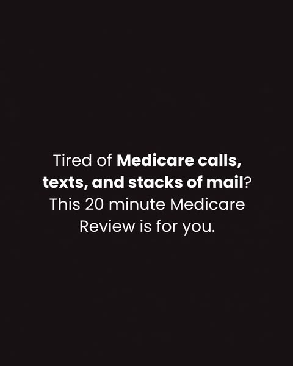
Are you worried you might be or enroll in the wrong Medicare plan? For most people, Medicare stress comes from three things: 1. Your plan changes or sends letters you don’t fully understand 2. You’re not sure if your doctors, hospital, or medications are really covered 3. You’ve stayed in the same plan for years without a proper review The good news? We’ve built a simple Medicare review that walks through these exact checks with you. Our licensed advisors use your doctors, medications, and budget to look at the plans in your area and make everything clear in about 20 minutes. We’ve personalized this review for your situation, not “people in general,” and we’re confident it can help you feel
Total Medicare Savings · 3 ads · longest 1138 days · no destination link captured
{kind=link}
Did you know... Anyone turning 65 in the next 6 months can get Medicare Supplement (Medigap) Insurance from over 20 insurance companies without health questions? Here's how it works: When someone turns 65 and enrolls in Medicare Part B for the first time, this is called the Medigap Open Enrollment Period. This is a ONE TIME period that lasts for 6 months once enrolled in Medicare Part A And B. During this time Medicare Supplement Insurance carriers have to offer coverage regardless of health history. Once this 6 month period is over, there are usually health history questions involved when changing plans or applying for coverage. This means that someone can be charged more or turned down for
{kind=link}
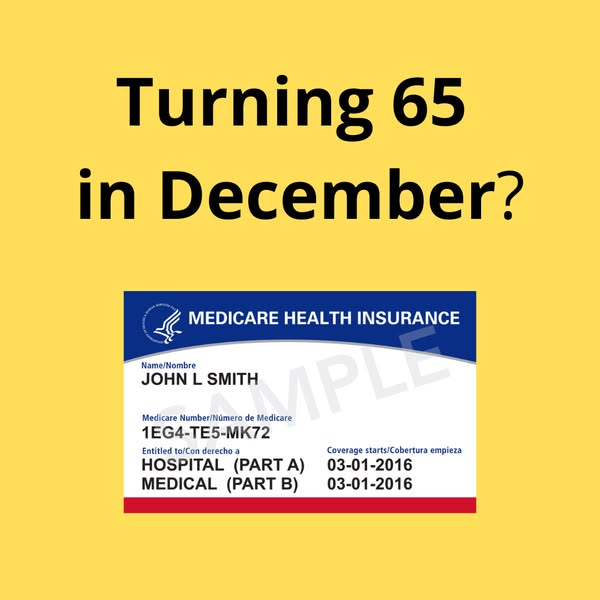
Did you know... Anyone turning 65 in the next 6 months can get Medicare Supplement (Medigap) Insurance from over 20 insurance companies without health questions? Here's how it works: When someone turns 65 and enrolls in Medicare Part B for the first time, this is called the Medigap Open Enrollment Period. This is a ONE TIME period that lasts for 6 months once enrolled in Medicare Part A And B. During this time Medicare Supplement Insurance carriers have to offer coverage regardless of health history. Once this 6 month period is over, there are usually health history questions involved when changing plans or applying for coverage. This means that someone can be charged more or turned down for
{kind=link}
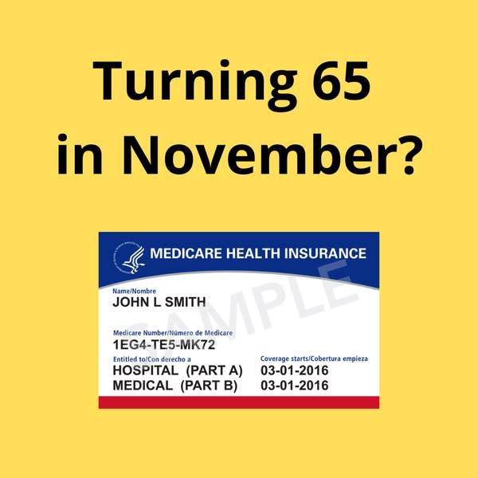
Did you know... Anyone turning 65 in the next 6 months can get Medicare Supplement (Medigap) Insurance from over 20 insurance companies without health questions? Here's how it works: When someone turns 65 and enrolls in Medicare Part B for the first time, this is called the Medigap Open Enrollment Period. This is a ONE TIME period that lasts for 6 months once enrolled in Medicare Part A And B. During this time Medicare Supplement Insurance carriers have to offer coverage regardless of health history. Once this 6 month period is over, there are usually health history questions involved when changing plans or applying for coverage. This means that someone can be charged more or turned down for
Blue Store Greensboro · 1 ads · longest 842 days · no destination link captured
Medicare Enrollment Center - Turning 65? Get local assistance at no cost. Call or come by the Greensboro BCBS retail center today! 1941 New Garden Rd Greensboro, NC 27410 336 790 5858 Blue Cross Blue Shield NC - Greensboro Local - Medicare Enrollment Center Call Now Local - Medicare Enrollment Center Blue Cross Blue Shield NC - Greensboro Local - Medicare Enrollment Center Call Now Local - Medicare Enrollment Center Blue Cross Blue Shield NC - Greensboro Local - Medicare Enrollment Center Call Now Local - Medicare Enrollment Center
Dan Boscardin - HealthMarkets Insurance Agency · 1 ads · longest 788 days · no destination link captured
{kind=link}
Did you know... Anyone turning 65 in the next 6 months can get Medicare Supplement (Medigap) Insurance from over 20 insurance companies without health questions? Here's how it works: When someone turns 65 and enrolls in Medicare Part B for the first time, this is called the Medigap Open Enrollment Period. This is a ONE TIME period that lasts for 6 months once enrolled in Medicare Part A And B. During this time Medicare Supplement Insurance carriers have to offer coverage regardless of health history. Once this 6 month period is over, there are usually health history questions involved when changing plans or applying for coverage. This means that someone can be charged more or turned down for
Dental Benefits Finder · 1 ads · longest 686 days · dental-benefits-finder.com
{kind=link}
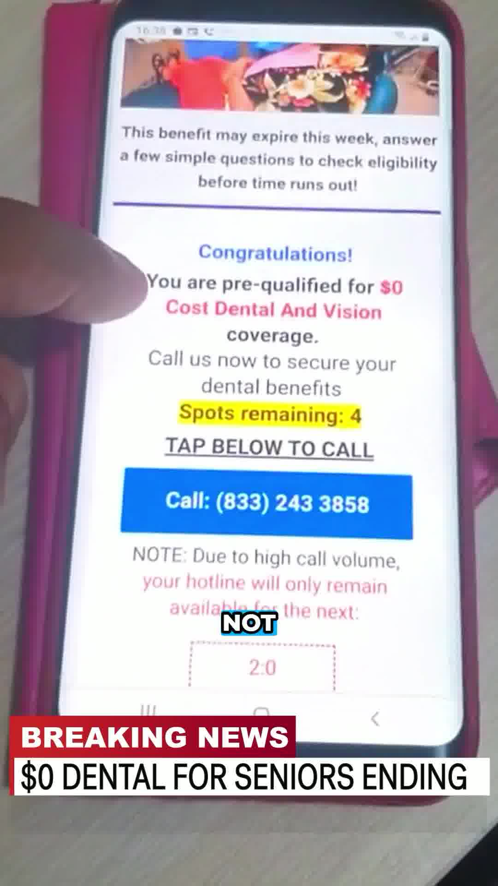
Seniors can get dentures with a Zero Cost ($0) Dental plan today. If you are a senior over 64, check if you qualify. Click here now. 0:00 / 0:50 DENTAL-BENEFITS-FINDER.COM ($0) Cost Dental for Seniors on Medicare Dental Benefits Seniors Might Not Know About Contact us
Veteran Savings Network · 1 ads · longest 685 days · no destination link captured
{kind=link}
‼️Attention Military Veteran's Turning 65 ‼️ 𝐃𝐨𝐧'𝐭 𝐏𝐚𝐲 𝐅𝐨𝐫 𝐌𝐞𝐝𝐢𝐜𝐚𝐫𝐞 𝐏𝐚𝐫𝐭 𝐁 𝐔𝐧𝐭𝐢𝐥 𝐘𝐨𝐮 𝐆𝐞𝐭 𝐇𝐨𝐧𝐞𝐬𝐭 𝐀𝐧𝐬𝐰𝐞𝐫𝐬 𝐓𝐨 𝐓𝐡𝐞 𝐅𝐨𝐥𝐥𝐨𝐰𝐢𝐧𝐠; 1. Do I even need to take 𝙋𝙖𝙧𝙩 𝘽 right now? 2. Is there a penalty if I take it ʟᴀᴛᴇʀ? 3. Do I 𝐐𝐮𝐚𝐥𝐢𝐟𝐲 for a 𝐏𝐚𝐫𝐭 𝐁 𝐑𝐞𝐛𝐚𝐭𝐞 because 𝐈'𝐦 a 𝐕𝐞𝐭𝐞𝐫𝐚𝐧? Click the [𝐋𝐞𝐚𝐫𝐧 𝐌𝐨𝐫𝐞] button to see if you qualify! 0:00 / 0:28 Veterans Turning 65 Only 𝐕𝐞𝐭𝐞𝐫𝐚𝐧𝐬 𝐓𝐮𝐫𝐧𝐢𝐧𝐠 𝟔𝟓 𝐎𝐧𝐥𝐲 Learn More
American Healthcare Solutions Center · 4 ads · longest 630 days · vetquiz.mission65quiz.com
{kind=link}
‼️Attention Military Veteran's Turning 65 ‼️ 𝐃𝐨𝐧'𝐭 𝐏𝐚𝐲 𝐅𝐨𝐫 𝐌𝐞𝐝𝐢𝐜𝐚𝐫𝐞 𝐏𝐚𝐫𝐭 𝐁 𝐔𝐧𝐭𝐢𝐥 𝐘𝐨𝐮 𝐆𝐞𝐭 𝐇𝐨𝐧𝐞𝐬𝐭 𝐀𝐧𝐬𝐰𝐞𝐫𝐬 𝐓𝐨 𝐓𝐡𝐞 𝐅𝐨𝐥𝐥𝐨𝐰𝐢𝐧𝐠; 1. Do I even need to take 𝙋𝙖𝙧𝙩 𝘽 right now? 2. Is there a penalty if I take it ʟᴀᴛᴇʀ? 3. Do I 𝐐𝐮𝐚𝐥𝐢𝐟𝐲 for a 𝐏𝐚𝐫𝐭 𝐁 𝐑𝐞𝐛𝐚𝐭𝐞 because 𝐈'𝐦 a 𝐕𝐞𝐭𝐞𝐫𝐚𝐧? Click the [𝐋𝐞𝐚𝐫𝐧 𝐌𝐨𝐫𝐞] button to see if you qualify! 0:00 / 3:41 Veterans Turning 65 Only 𝐕𝐞𝐭𝐞𝐫𝐚𝐧𝐬 𝐓𝐮𝐫𝐧𝐢𝐧𝐠 𝟔𝟓 𝐎𝐧𝐥𝐲 Learn More
{kind=link}
Veterans, if you use the VA for your prescriptions and you're still paying full price for Medicare Part B, you could be leaving money on the table every single month. There are plans built specifically for veterans that may put a chunk of that premium, up to $1,800 a year, right back into your Social Security check. Most vets have no idea they qualify. It takes 60 seconds to find out. Take the quick quiz to see if you're eligible. No cost, no obligation. Veterans on Medicare, Check Your Eligibility Veterans may qualify for money back. Learn More
{kind=link}
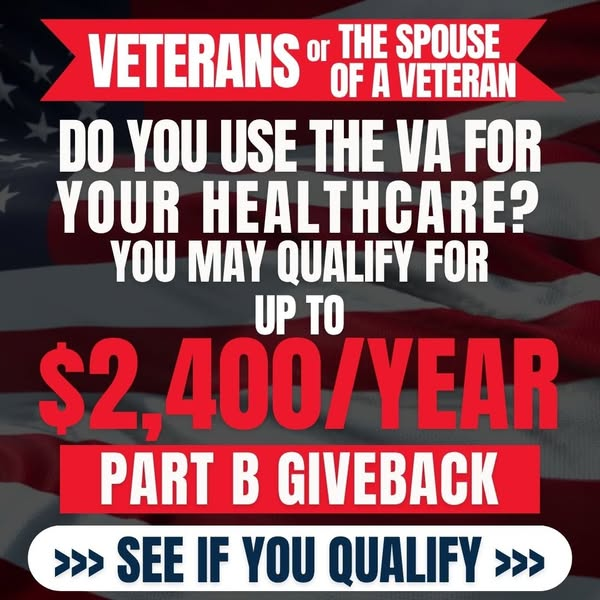
I've been on Medicare for years and nobody told me this. 🇺🇸 If you're a veteran who leans on the VA for care and prescriptions and you're still paying the full Medicare Part B premium, certain plans can give part of that premium back — up to $195 a month for those who qualify. Here's why it works: because you use the VA, you're barely touching Medicare. Some plans return part of the Part B premium to your Social Security check, and your VA benefits don't change. Take the free 2-minute quiz to see if you qualify. 👇 VETQUIZ.MISSION65QUIZ.COM Don't Pay for Medicare Until You Take This Quiz Learn Before You Choose Learn more
{kind=link}
I've been on Medicare for years and nobody told me this. 🇺🇸 If you're a veteran who leans on the VA for care and prescriptions and you're still paying the full Medicare Part B premium, certain plans can give part of that premium back — up to $195 a month for those who qualify. Here's why it works: because you use the VA, you're barely touching Medicare. Some plans return part of the Part B premium to your Social Security check, and your VA benefits don't change. Take the free 2-minute quiz to see if you qualify. 👇 0:00 / 0:15 Don't Pay for Medicare Until You Take This Quiz Learn Before You Choose Learn More
Senior Legacy USA · 1 ads · longest 600 days · no destination link captured
{kind=link}
🚨 NORTH EAST OHIO SENIORS, 🚨 IF YOU ARE ON MEDICARE & MEDICAID YOU ARE ENTITLED TO A MONTHLY FLEX BENEFIT CARD Don’t Leave Benefits on the Table Other Additional Benefits Include ✅ Dental ✅ Vision ✅ Hearing ✅ Transportation ✅ Over The Counter Products This Service Is NO COST For North East Ohio Residents! CLICK "LEARN MORE" BELOW To Get All Of Your Benefits!👇 FB.ME Tap To Check Eligibility 👉 Learn more
Meagher Insurance and Financial Services · 1 ads · longest 444 days · no destination link captured
{kind=link}
Choosing a Medicare plan doesn’t have to be confusing. At The Meagher Agency, we help you navigate your options so you can get the best coverage at the lowest cost. ✅ Compare plans in minutes ✅ Find out if you’re eligible for extra benefits ✅ Get personalized help—at no cost to you! 📞 Call now at 570-253-0466 or click below to get your free Medicare review today! https://www.themeagheragency.com/quotes/ 0:00 / 0:59
City Point Dental · 1 ads · longest 359 days · no destination link captured
{kind=link}
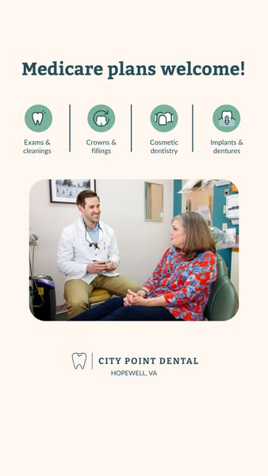
At City Point Dental, we’re here to help you get the most out of your Medicare benefits. We work with the majority of Medicare dental supplement plans—and we’re happy to walk you through what’s covered. Give us a call today, and we’ll provide a clear, easy-to-understand breakdown of your dental benefits so you know exactly what to expect. Plus: ✅ FSA eligible ✅ Comfortable, judgment-free care that feels like home Your healthiest smile could be just one visit away. Use your Medicare dental supplement Hopewell, VA Dentist Book Now
Medicare Joe · 1 ads · longest 336 days · no destination link captured
{kind=link}
🚨 Are you turning 65 and have assets to protect? 👉 Listen for 1 minute to find out what most folks like yourself are choosing when they get onto Medicare... 👍 Like and Follow for more Medicare Information 0:00 / 1:15
Financial Benefits Insurance, Inc · 1 ads · longest 324 days · no destination link captured
{kind=link}
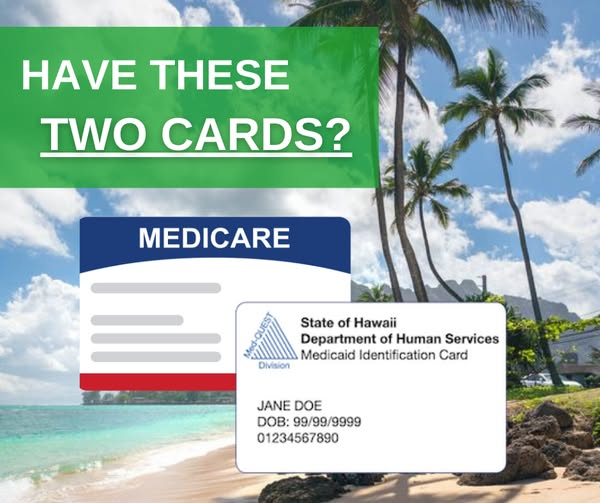
𝐇𝐚𝐯𝐞 𝐌𝐞𝐝𝐢𝐜𝐚𝐫𝐞 𝐚𝐧𝐝 𝐌𝐞𝐝𝐢𝐜𝐚𝐢𝐝? Discover available programs and extra benefits through Medicare, including: 1- Acupuncture 2- Chiropractic 3- Dental 4- Eye glasses 5- Gym membership 6- Hearing aids 7- Massage therapy ⚠️ Connect with an Independent Licensed Agent from Financial Benefits Hawaii to learn more about your options. There’s no obligation to enroll, and the consultation is free! ➤ 𝘛𝘩𝘪𝘴 𝘪𝘴 𝘢𝘯 𝘢𝘥𝘷𝘦𝘳𝘵𝘪𝘴𝘦𝘮𝘦𝘯𝘵. 𝘉𝘺 𝘤𝘢𝘭𝘭𝘪𝘯𝘨 𝘵𝘩𝘪𝘴 𝘯𝘶𝘮𝘣𝘦𝘳 𝘰𝘳 𝘱𝘳𝘰𝘷𝘪𝘥𝘪𝘯𝘨 𝘺𝘰𝘶𝘳 𝘪𝘯𝘧𝘰𝘳𝘮𝘢𝘵𝘪𝘰𝘯 𝘺𝘰𝘶 𝘢𝘨𝘳𝘦𝘦 𝘵𝘰 𝘴𝘱𝘦𝘢𝘬 𝘸𝘪𝘵𝘩 𝘢𝘯 𝘐𝘯𝘥𝘦𝘱𝘦𝘯𝘥𝘦𝘯𝘵 𝘓𝘪𝘤𝘦𝘯𝘴𝘦𝘥 𝘈𝘨𝘦𝘯𝘵 𝘢𝘣𝘰𝘶𝘵 𝘔𝘦𝘥𝘪𝘤𝘢𝘳𝘦 𝘈𝘥𝘷𝘢𝘯𝘵𝘢𝘨𝘦, 𝘗𝘢𝘳𝘵 𝘋 𝘗𝘳𝘦𝘴𝘤𝘳𝘪𝘱𝘵𝘪𝘰𝘯 𝘋𝘳𝘶𝘨 𝘗𝘭𝘢𝘯𝘴 𝘰𝘳 𝘔𝘦𝘥𝘪𝘤𝘢𝘳𝘦 𝘚𝘶𝘱𝘱𝘭𝘦𝘮𝘦𝘯𝘵𝘴. 𝘕𝘰𝘵 𝘢𝘧𝘧𝘪𝘭𝘪𝘢𝘵𝘦𝘥 𝘸𝘪𝘵𝘩 𝘢𝘯𝘺 𝘨𝘰𝘷𝘦𝘳𝘯𝘮𝘦𝘯𝘵 𝘢𝘨𝘦𝘯𝘤𝘺 𝘪𝘯𝘤𝘭𝘶𝘥𝘪𝘯𝘨 𝘔𝘦𝘥𝘪𝘤𝘢𝘳𝘦. 𝘞𝘦 𝘥𝘰 𝘯𝘰𝘵 𝘰𝘧𝘧𝘦𝘳 𝘦𝘷𝘦𝘳𝘺 𝘱𝘭𝘢𝘯 𝘢𝘷𝘢𝘪𝘭𝘢𝘣
100Insure · 2 ads · longest 308 days · no destination link captured
{kind=link}
Do You Have Medicaid and Are Aging into Medicare? It’s essential to eat healthy. That’s why some Medicare Advantage plans include a healthy grocery allowance* - a monthly benefit that helps you buy nutritious food. It’s extra money for fruits, vegetables, and other healthy grocery items, so you can enjoy wholesome, healthier meals without straining your monthly budget. Imagine getting help at the checkout counter every month, thanks to your health plan! Discover more about Medicare Advantage plans that may include healthy grocery allowance* benefits, and see if you may be eligible. Speak with a Licensed Insurance Agent to check your eligibility to enroll. We represent MA, MAPD And PDP Plans
{kind=link}
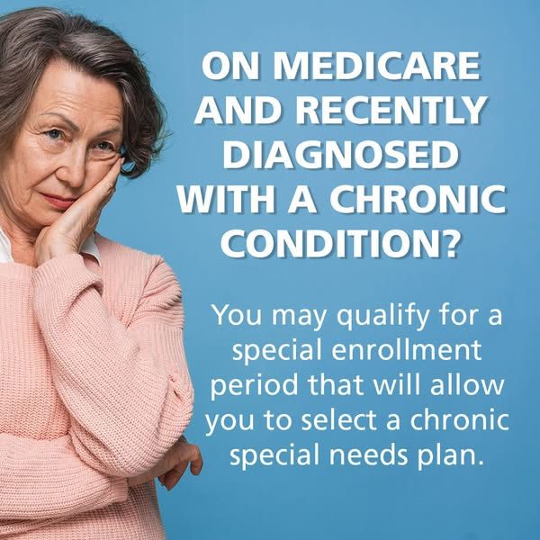
Are You New or Aging Into Original Medicare, On Medicare Parts A & B But Recently Moved, Are You Eligible for Medicare and Lost Your Health Insurance, or Do You Have A Special Enrollment Period? You May Get More with a Medicare Advantage Plan – with one or possibly more of the following benefits - Routine Dental and/or Vision and/or Hearing or Possibly More, If Eligible! Original Medicare is very good, but it does not cover everything. Enrolling in a Medicare Advantage plan could enhance your coverage and may even help you to save money. Many Medicare Advantage plans offer one or possibly more of the following that could make a big difference: • Dental Coverage • Vision Coverage • Hearing Co
Seven Figure · 1 ads · longest 266 days · sevenfigure.com
Landing page: Join the Fastest Growing Community of Medicare Agents!

{kind=link}
🌱 Growth doesn’t happen in isolation. 🤝 The Seven Figure Medicare Agent Community is a place where agents come together to learn, share, and grow with confidence. ✔ Proven strategies shared by experienced agents ✔ Real conversations about what’s working now ✔ A network designed to support progress If you’re ready to learn alongside others who take growth seriously, you’ll fit right in. 👉 Join the community today. SEVENFIGURE.COM Don't Miss Out. Join the Group Today! We empower Medicare agents to achieve seven-figure success by providing everything you need under one roof. Learn more
Medicare Made Easy · 6 ads · longest 260 days · no destination link captured
{kind=link}
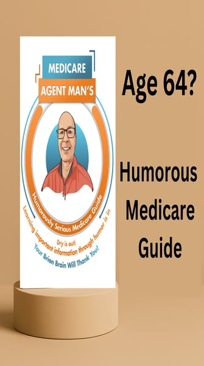
Started getting those Medicare mailers yet? If you're like most people soon to be 65, your mailbox is probably starting to look like a Medicare information bomb went off. Plans, supplements, advantage plans, parts A through Z (okay, just A through D, but also plan G, etc. so it feels like more). Everyone's telling you something different. Your friend says get a supplement. Your brother-in-law swears by Advantage plans. Your nurse neighbor warns you about both. Here's why everyone's advice conflicts: They're all on different Medicare paths. Most people don't realize there are actually four main ways to do Medicare. What works great for someone in one situation can be a disaster for someone in
{kind=link}
How do you figure out Medicare? I just read this guide — took 17 minutes. 𝗪𝗵𝗮𝘁 𝗴𝘂𝗶𝗱𝗲? It's the Humorous Medicare Guide. It shows you which of the four Medicare paths is yours, and then you know how to focus on just the stuff that applies to your situation. 𝗢𝗵, 𝘀𝗼 𝗜 𝗰𝗮𝗻 𝗳𝗶𝗹𝘁𝗲𝗿 𝗼𝘂𝘁 𝟳𝟱% 𝗼𝗳 𝗮𝗹𝗹 𝘁𝗵𝗲 𝘀𝘁𝘂𝗳𝗳 𝘁𝗵𝗮𝘁 𝗱𝗼𝗲𝘀𝗻'𝘁 𝗮𝗽𝗽𝗹𝘆? Exactly. Instead of drowning in information for four different paths, you only read about yours. Plus, the GUIDE reveals a hidden flaw in all Medicare plans that could save you money. What a relief. 𝗧𝗵𝗮𝘁 𝗮𝗰𝘁𝘂𝗮𝗹𝗹𝘆 𝘀𝗼𝘂𝗻𝗱𝘀 𝗿𝗲𝗮𝗹𝗹𝘆 𝗵𝗲𝗹𝗽𝗳𝘂𝗹. Does it cost anything? Nope. It's free. They mail it to your door. And studies show humor helps people retain information, so they wrote it to
{kind=link}
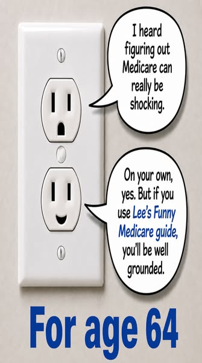
Let's face it, we all want to get Medicare right — but we don't really love the process of figuring it out. The confusing mailers. The conflicting advice. The feeling that no matter how much you read, you're not getting closer to an answer. If you've tried other ways to understand Medicare and you're still confused, I invite you to order the free Humorous Medicare Guide today. It's the only guide that helps you figure out Medicare by identifying which of the four specific paths applies to YOUR situation first — before drowning you in information. In just 17 minutes, you can go from overwhelmed to clear. From confused to confident. From buried in mail to knowing exactly what applies to you an

There's one thing you should absolutely never plug into when you're trying to figure out Medicare — and almost everybody does it without even realizing they're making a mistake. The mistake? Trying to compare Medicare plans before you know which of the four paths is yours. As someone approaching 65, this probably sounds completely logical. "Of course I should compare plans — how else do I pick the right one?" But as a licensed Medicare broker who's helped over a thousand people, I can tell you — when someone compares plans before knowing their path, it creates a mess of confusion that takes weeks to untangle. Shocking! And if you've ever felt like Medicare makes zero sense no matter how much

If it hadn't been for one simple free guide, this could have been a very expensive Medicare mistake. Medicare enrollment mistakes happen constantly. People sign up for the wrong plan, miss critical deadlines, or don't know about penalties until it's too late. And the costs can follow them for years. Did you know that most of these mistakes happen for one reason? People don't know which of the four Medicare paths applies to their situation — so they make decisions based on information that was never meant for them. With my years as a licensed Medicare broker helping over a thousand people, I've watched folks make avoidable mistakes that cost them hundreds of dollars per year — mistakes that d

How do you figure out Medicare? I just read this guide — took 17 minutes. 𝗪𝗵𝗮𝘁 𝗴𝘂𝗶𝗱𝗲? It's the Humorous Medicare Guide. It shows you which of the four Medicare paths is yours, and then you know how to focus on just the stuff that applies to your situation. 𝗢𝗵, 𝘀𝗼 𝗜 𝗰𝗮𝗻 𝗳𝗶𝗹𝘁𝗲𝗿 𝗼𝘂𝘁 𝟳𝟱% 𝗼𝗳 𝗮𝗹𝗹 𝘁𝗵𝗲 𝘀𝘁𝘂𝗳𝗳 𝘁𝗵𝗮𝘁 𝗱𝗼𝗲𝘀𝗻'𝘁 𝗮𝗽𝗽𝗹𝘆? Exactly. Instead of drowning in information for four different paths, you only read about yours. Plus, the GUIDE reveals a hidden flaw in all Medicare plans that could save you money. What a relief. 𝗧𝗵𝗮𝘁 𝗮𝗰𝘁𝘂𝗮𝗹𝗹𝘆 𝘀𝗼𝘂𝗻𝗱𝘀 𝗿𝗲𝗮𝗹𝗹𝘆 𝗵𝗲𝗹𝗽𝗳𝘂𝗹. Does it cost anything? Nope. It's free. They mail it to your door. And studies show humor helps people retain information, so they wrote it to
Smart Plan Check · 3 ads · longest 184 days · smartplancheck.com
{kind=link}
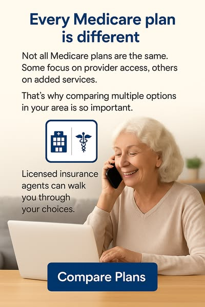
HTTPS://SMARTPLANCHECK.COM/D981625F50EA/ Looking to review your Medicare coverage during Open Enrollment? DISCLAIMER We do not offer every plan available in your area. Currently, we represent 8 organizations, which offer 52 products in your area. Please contact Medicare.gov, 1-800-MEDICARE, or your local State Health Insurance Program (SHIP) to get information on all of your options. We represent Medic...
{kind=link}
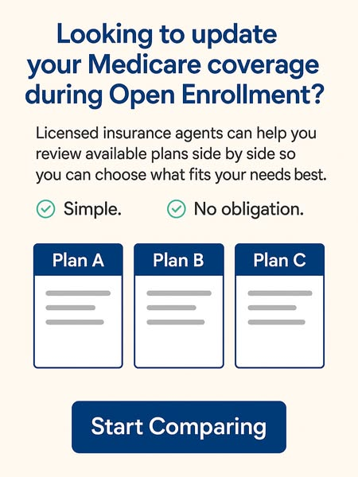
HTTPS://SMARTPLANCHECK.COM/D981625F50EA/ Smart Plan Check DISCLAIMER We do not offer every plan available in your area. Currently, we represent 8 organizations, which offer 52 products in your area. Please contact Medicare.gov, 1-800-MEDICARE, or your local State Health Insurance Program (SHIP) to get information on all of your options. We represent Medic...
{kind=link}
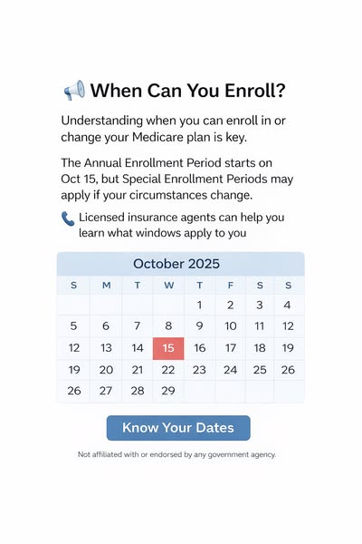
HTTPS://UNIFIEDMEDICARE.COM/A74485D2DD5D/ When Can You Enroll? DISCLAIMER We do not offer every plan available in your area. Currently, we represent 8 organizations, which offer 52 products in your area. Please contact Medicare.gov, 1-800-MEDICARE, or your local State Health Insurance Program (SHIP) to get information on all of your options. We represent Medic...
EverThrive · 1 ads · longest 156 days · no destination link captured
{kind=link}
Living with pain, mobility issues, or a chronic condition? Call today! (844) 500-3837. You may qualify for remote therapeutic monitoring (RTM) Medicare benefits! Living with pain? Call now
Health Helpers · 4 ads · longest 153 days · healthhelpers.co
{kind=link}
$255/month for Plan G — for seven years. She thought that's just what it costs. It wasn't. Same exact coverage. $85/month less. Over $1,000/year back in her pocket. Medicare Supplements are standardized by law. Same benefits regardless of carrier. Only the price changes. See your real rate 👇 0:00 / 1:20 HEALTHHELPERS.CO See Your Real Rate in 90 Seconds Free rate comparison — takes 2 minutes Learn more
{kind=link}
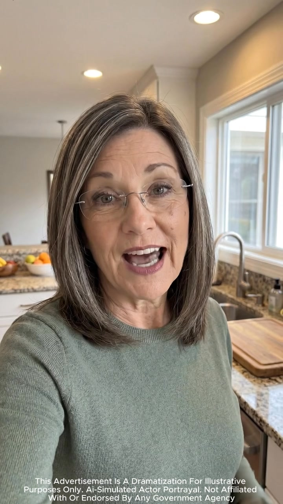
Third rate hike in three years. Plan G started at $198, now $289. She typed her zip code into Health Helpers, answered three questions, and saw her rate: $167. Same Plan G, same benefits, same doctors. Switched that week in one phone call. Medicare Supplement plans are federally standardized. Only the price changes. If your supplement keeps going up, stop accepting it 👇 0:00 / 0:46 HEALTHHELPERS.CO Your Supplement Going Up Every Year? Free rate comparison, takes 2 minutes Learn more
{kind=link}
Same Medicare agent for eight years. Not once did he call to check her rate. It went up every year on Plan G, and he just let it happen. She was paying $308 a month and figured that was just the cost. A friend at church mentioned Health Helpers. She put in her zip code and saw her real rate: $189 a month. Same Plan G, same coverage, same doctors. That's $119 less every month for the exact same thing. Good agents check your rate every year. Hers never did. Don't be her. Check your rate 👇 0:00 / 0:49 HEALTHHELPERS.CO Your Agent Never Checks Your Rate? Free rate comparison, takes 2 minutes Learn more
{kind=link}
Her Social Security went up $62 this year. Her Medicare Supplement went up $48 the same month. After waiting an entire year for that raise, she netted $14. She'd been on Plan G for eight years and just accepted the annual increases, figuring all carriers charge about the same. They don't. Her daughter ran her zip code through a free comparison tool. Her rate came back at $162. She'd been paying $298. That's over $1,600 a year, gone. Medicare Supplements are federally standardized. Plan G is Plan G. Only the price changes. Check your rate 👇 0:00 / 0:49 HEALTHHELPERS.CO Your Raise Eaten By Premiums? Free rate comparison, takes 2 minutes Learn more
MedicareAdvantage.com · 6 ads · longest 144 days · aetna-medicareadvantage.com
{kind=link}
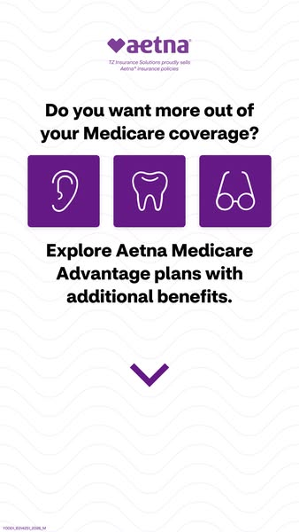
New to Medicare or recently moved? Explore Aetna Medicare Advantage plans with additional benefits at little to no monthly premium. Aetna Medicare is an HMO, PPO plan with a Medicare contract. Our DSNPs also have contracts with State Medicaid programs. Enrollment in our plans depends on contract renewal. Plan features and availability may vary by service area. We do not offer every plan available in your area. Currently we represent 1 organization which offers 620 products in your area. Please contact Medicare.gov, 1-800-MEDICARE, or your local State Health Insurance Program (SHIP) to get information on all of your options. To send a complaint to Aetna, call the Plan or the number on your me
{kind=link}
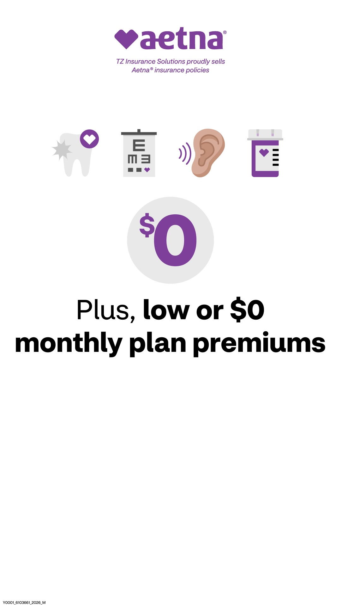
If you’re new to Medicare or recently lost your coverage, you could enroll in an Aetna Medicare Advantage plan now. Aetna Medicare is an HMO, PPO plan with a Medicare contract. Our DSNPs also have contracts with State Medicaid programs. Enrollment in our plans depends on contract renewal. Plan features and availability may vary by service area. We do not offer every plan available in your area. Currently we represent 1 organization, which offers 620 products in your area. Please contact http://medicare.gov, 1-800-MEDICARE, or your local State Health Insurance Program (SHIP) to get information on all of your options. To send a complaint to Aetna, call the Plan or the number on your member ID
{kind=link}
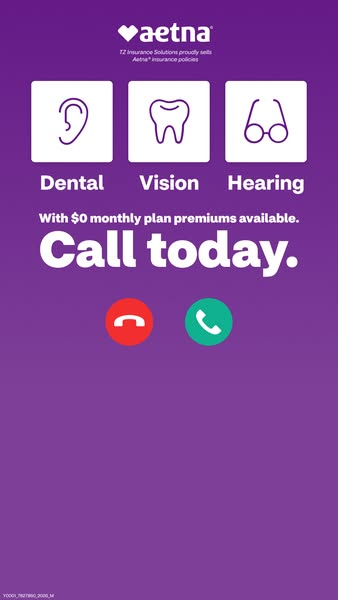
Did you know? You may be eligible to enroll in a Medicare Advantage plan with additional benefits and $0 monthly plan premiums if you’re new to Medicare, have recently moved or lost coverage. *The licensed TZ insurance agents who may call you proudly sell Aetna® plans but are not employed by Aetna. Not all plans offer all of these benefits. Availability of benefits and plans varies by carrier and location. Deductibles, copays, coinsurance, limitations, and exclusions may apply. Aetna Medicare is an HMO, PPO plan with a Medicare contract. Our DSNPs also have contracts with State Medicaid programs. Enrollment in our plans depends on contract renewal. Plan features and availability may vary by
{kind=link}
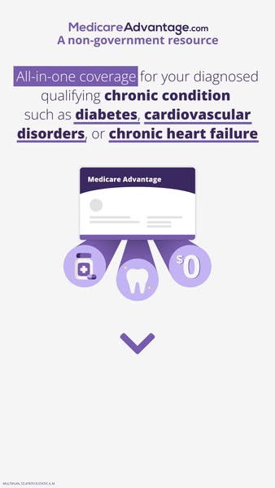
Diagnosed with one or more qualifying chronic conditions? A Medicare Advantage Chronic Conditions Special Needs Plan (C-SNP) could help. Get prescription drug coverage, dental benefits, or more—often at low or $0 monthly premiums. Find a plan in your ZIP code today! 👤 We offer plans from Humana, UnitedHealthcare®, Anthem Blue Cross and Blue Shield*, Aetna, HealthSpring℠, Wellcare, or Kaiser Permanente. MedicareAdvantage.com is powered by TZ Insurance Solutions LLC, a non-government licensed health insurance agency. Not affiliated with or endorsed by any government agency. *Anthem Blue Cross and Blue Shield includes its affiliated health plans. We do not offer every plan available in your are
{kind=link}
New to Medicare, moving or losing coverage? Shop Medicare Advantage health plans with additional benefits and low to $0 monthly premiums. We do not offer every plan available in your area. Currently we represent 1 organization which offers 83 products in your area. Please contact Medicare.gov, 1-800-MEDICARE, or your local State Health Insurance Program to get information on all of your options. You must meet all Medicare health plan enrollment requirements. Enrollment in the described plan type may be limited to certain dates of the year unless you qualify for a Special Enrollment Period. Y0043_N00044278_M H8794_N00044278_M 0:00 / 0:14 MEDICAREADVANTAGE.COM Call to shop Medicare health plan
{kind=link}
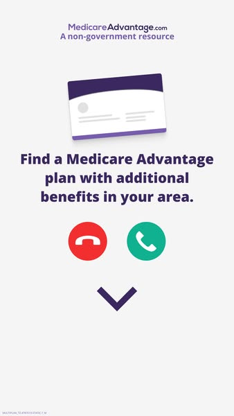
💬 New to Medicare, moving or losing coverage? We’re here for you! Find out if you could save money and receive additional benefits like dental, vision or hearing with a Medicare Advantage plan. Our licensed insurance agents are ready to take your call! We offer plans from Humana, UnitedHealthcare®, Aetna, Anthem Blue Cross and Blue Shield, Wellcare, HealthSpring℠, or Kaiser Permanente. MedicareAdvantage.com is a non-government entity. We do not offer every plan available in your area. Currently, we represent 25 organizations which offer 3,617 products in your area. Please contact Medicare.gov, 1–800–MEDICARE, or your local State Health Insurance Program to get information on all of your opti
SFG Medicare · 1 ads · longest 143 days · sfgmedicare.com
{kind=link}
Confused by all the Medicare mail and constant phone calls? At Senior Financial Group, we use a simple five-step process called SFG CARES to help you find the right coverage without the stress. We Compare options side-by-side, Assist with the fine print, Review your plan annually, handle your Enrollment, and provide Support all year long. You don’t just get a plan—you get a local partner. We do not offer every plan available in your area. Any information we provide is limited to those plans we do offer in your area. Please contact Medicare.gov or 1-800-MEDICARE to get information on all of your options. 0:00 / 0:00 SFGMEDICARE.COM Medicare doesn't have to be overwhelming. Find the right plan
Boomer Benefits · 4 ads · longest 134 days · boomerbenefits.com
{kind=link}
Medicare can be a complicated process, but we're here to help! In just 5 minutes of reading, you will have all the information needed for your application. Don't let this opportunity slip through your fingers - apply today and take control over your healthcare options. 0:00 / 0:23 Medicare doesn't have to be overwhelming. Learn how to apply in this 5 min read. We Help People Understand Medicare If you feel like you are spinning your wheels wondering how to make the best Medicare decision, you are in the right place. The good news is – you don’t have to do this alone. We are in the business of helping people understand Medicare, in simple, plain terms that everyone can understand. We believe
{kind=link}
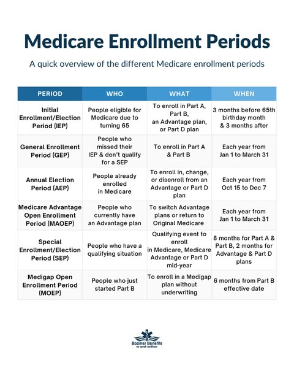
Almost 65? 🎉 We’ll explain what you’ll pay, when to enroll, and how to avoid late penalties. Let’s make your Medicare journey stress-free! BOOMERBENEFITS.COM Turning 65 Soon? Talk to our team today! Founded in 2005 in Fort Worth, TX, Boomer Benefits is an award-winning insurance agency for national insurance carriers such as Blue Cross Blue Shield, Aetna, Mutual of Omaha, and many other A-rated carriers. We are licensed in 49 states. Over the years, we’ve learned just about everything there is to know about Medicare, and we’ve become known as the baby boomers insurance agency. We pass that knowledge on to you – absolutely free. Get Quote
{kind=link}
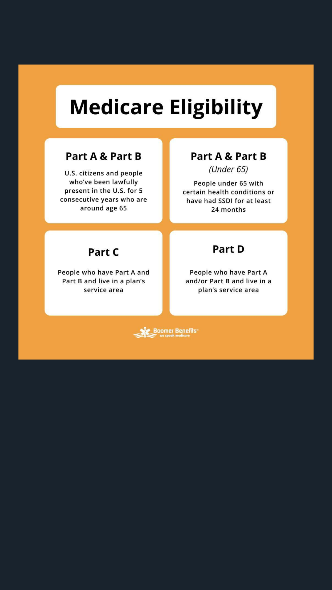
Are you turning 65? You're about to unlock some important health benefits – but are you sure you're getting the right coverage? At Boomer Benefits, we’ll walk you through all the options available to you. Our team of experts will take the time to explain everything, ensuring you find the right plan for your needs. And the best part? Our service is 100% FREE! Join over 100,000 happy customers who have given us the highest ratings in the industry. Let us help you navigate your Medicare journey with confidence! Click below to see if you're eligible and get started today. 0:00 / 0:06 BOOMERBENEFITS.COM Are you age 64+? Get Your Customized Medicare Quote for FREE! Boomer Benefits is a trusted Med
{kind=link}
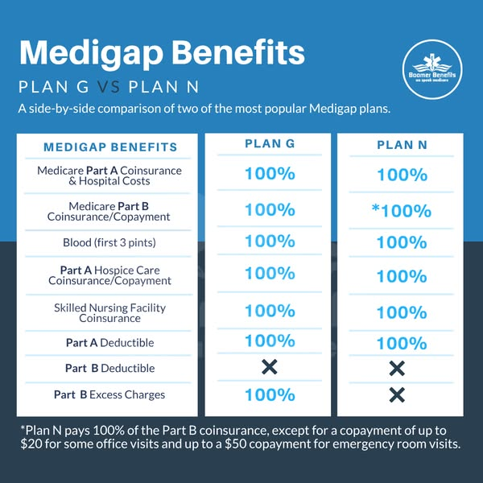
✅ Plan G covers nearly all of your Medicare cost-sharing. ❎ No copays at the doctor's office or the hospital. Our team of Medicare experts will find the lowest premium for you! Get a free quote today. BOOMERBENEFITS.COM Compare Medicare Plan G Rates | Top-Rated Insurance Agency Founded in 2005 in Fort Worth, TX, Boomer Benefits is an award-winning insurance agency for national insurance carriers such as Blue Cross Blue Shield, Aetna, Mutual of Omaha and many other A-rated carriers. We are licensed in 49 states. Over the years, we’ve learned just about everything there is to know about Medicare, and we’ve become known as the baby boomers insurance agency. We pass that knowledge on to you – ab
Medicare Benefits for Seniors Explained · 1 ads · longest 130 days · no destination link captured
{kind=link}
🕒 Now is the time for you to fully understand the Medicare Plans & Options available to you. ✅ We work directly with you to help you select the right Medicare plan for your needs and there is no charge for this service. Use the form below or call (606) 585-2587 to get started on your Medicare journey today. FB.ME Get Started Before You Turn 65! Click Here. See details
Medicare Supplement Quote · 1 ads · longest 127 days · no destination link captured
{kind=link}
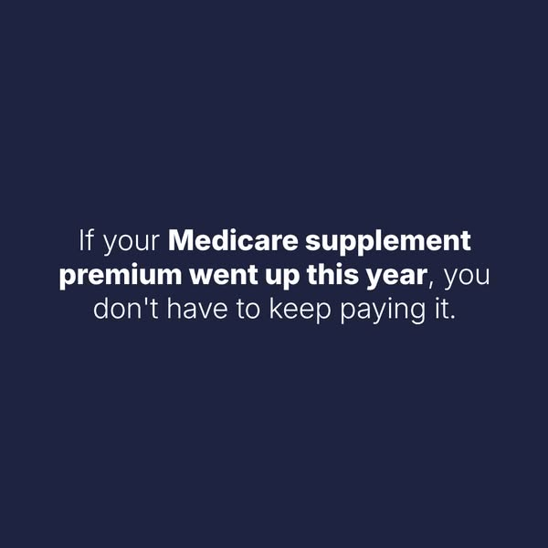
Most people feel stuck when their Medicare supplement premium goes up. They think switching companies means changing their coverage, finding new doctors, or starting over with Medicare. None of that is true. Medicare supplements are standardized by the federal government. A Plan G is a Plan G — no matter which company you're with. The coverage doesn't change. Your doctors don't change. Medicare stays your primary coverage. The only thing that changes when you switch companies is your monthly premium. ✅ Same Coverage – Every top carrier's Plan G covers identical benefits ✅ Keep Your Doctors – No networks, no referrals, no permission needed ✅ Same Nationwide Freedom – Your plan works everywher
Medicare Advocates · 2 ads · longest 126 days · no destination link captured
{kind=link}
Over 2,000 senior Americans have had a 5-star experience with Medicare Advocates. Why? Because we listen. We understand. And our only objective is to solve your problems, and get your care covered. Our services are no cost to you, call us for a free health & benefits review so we can help you save money each year on your healthcare costs. 0:00 / 0:19 Secure Your Benefits Call now
{kind=link}
Florida Medicare beneficiaries, this one's for you. We specialize in Florida Medicare. Let's talk about your coverage. Our services are of no cost to you. Contacting us does not obligate you to change or enroll in a plan. disclaimer: We do not offer every plan available in your area. Currently we represent 30 organizations which offer products in your area. Please contact Medicare.gov or 1-800-MEDICARE to get information on all of your options. 0:00 / 0:37 FB.ME Local Florida Medicare Review No cost. No pressure. Just help. Learn more
MedicareProz · 5 ads · longest 119 days · medicareproz.com
{kind=link}
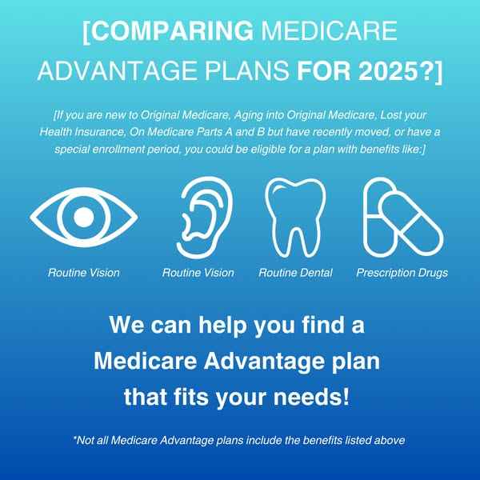
New to Original Medicare, Aging into Original Medicare, Lost your Health Insurance, On Medicare Parts A and B but have recently moved, or have a special enrollment period and confused about finding the right Medicare Advantage Plan for you? Call us today and let our friendly licensed sales agents walk you through the process! Review Medicare Advantage Plans, the plan you enroll in may include one or more of the following benefits: ✅ Routine Vision ✅ Routine Hearing ✅ Routine Dental and/or ✅ Prescription Drugs We can help you find out if you’re eligible to enroll in a Medicare Advantage plan Speak to a licensed insurance agent today about your Medicare Advantage plan options. We represent car

[Do you have Medicare A&B and Medicaid and also are New to Original Medicare, Aging into Medicare, Lost your Health Insurance, On Medicare Parts A and B but have recently move, or have a special enrollment period?] You may be eligible for a Medicare Advantage Dual Eligible Special Needs (“DSNP”) plan that may include coverage for one or more benefits, such as an allowance to help pay for healthy groceries at plan approved locations or monthly allowances to help pay for certain utilities. You must also have a qualifying chronic condition to receive this benefit. We represent carriers such as [UnitedHealthcare®], [WellCare], [Humana,] [HealthSpring ℠,] [Aetna], and [Elevance]. Tap the link bel
{kind=link}
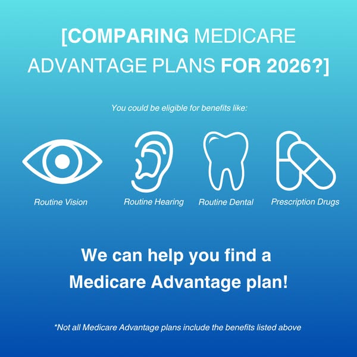
[New to Original Medicare, Aging into Original Medicare, Lost your Health Insurance, On Medicare Parts A and B but have recently moved, or have a special enrollment period?] And confused about finding the right Medicare Advantage Plan for you? Call us today and let our friendly licensed sales agents walk you through the process! Review Medicare Advantage Plans, the plan you enroll in may include one or more of the following benefits: ✅ [Routine Vision] ✅ [Routine Hearing] ✅ [Routine Dental and/or] ✅ [Prescription Drugs] We can help you find out if you’re eligible to enroll in a Medicare Advantage plan! Speak to a licensed insurance agent today about your Medicare Advantage plan options. We r
{kind=link}
[Do you have Medicare A&B and Medicaid and also are New to Original Medicare, Aging into Medicare, Lost your Health Insurance, On Medicare Parts A and B but have recently move, or have a special enrollment period?] You may be eligible for a Medicare Advantage Dual Eligible Special Needs (“DSNP”) plan that may include coverage for benefits such as dental, vision, and hearing, or for one or additional benefits, such as an allowance* to help pay for healthy groceries at plan approved locations or monthly allowances* to help pay for certain utilities. You also must have a qualifying chronic condition to receive this benefit. We represent carriers such as [UnitedHealthcare®], [WellCare], [Humana]
{kind=link}
[Do you have Medicare A&B and Medicaid and also are New to Original Medicare, Aging into Medicare, Lost your Health Insurance, On Medicare Parts A and B but have recently move, or have a special enrollment period?] You may be eligible to enroll in a Medicare Advantage DSNP plan with a monthly allowance of [at least] [$40] to help pay for healthy groceries at plan approved locations or monthly allowances to help pay for certain utilities.* In some cases, you also have to have a qualifying chronic condition to receive this benefit. We represent carriers such as [UnitedHealthcare®,] [WellCare,] [Humana,] [HealthSpring ℠,] [Aetna,] [Anthem], [Devoted], [Blue Cross and Blue Shield] and [Kaiser Pe
Senior Health Group · 1 ads · longest 119 days · seniorhealthgroup.co
{kind=link}
[Non-AEP: You may qualify for a Special Enrollment Period (SEP) if you experience certain life events, such as: New to Medicare, Aging into Medicare, Lost your Health Insurance, On Medicare but have recently moved.] Review Medicare Advantage Plan option. You May Be Eligible to enroll in a Medicare Advantage plan that may offer additional benefits that could help you! [Non-AEP: Enrollment in the described plan type may be limited to certain times of the year unless you qualify for a Special Enrollment Period or you are in your Medicare Initial Election Period.] Insurance Ad - No Government Affiliation. MULTIPLAN_FB_S_2026_C SENIORHEALTHGROUP.CO Speak with a licensed insurance agent. Check Enr
Senior Health Benefits 365 · 29 ads · longest 115 days · no destination link captured
{kind=link}
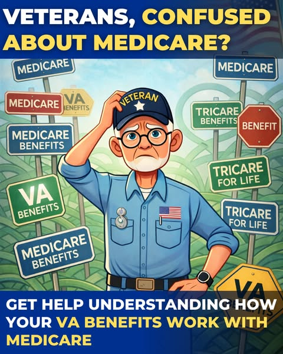
🇺🇸 2026 MEDICARE UPDATE FOR VETERANS Many veterans with Medicare Part B may have access to 2026 Medicare plans that could lower their Part B premium. Depending on your eligibility and the plans available in your area, savings can reach up to $2,400 per year. This does not affect VA healthcare, Tricare for Life, or ChampVA. Spouses may also qualify. Some 2026 plans may include: ✅ $0 monthly premiums ✅ Up to $2,400 in annual Part B giveback (varies by plan and location) ✅ Dental, vision, and hearing ✅ Access to civilian doctors and facilities ✅ Fitness and wellness benefits If eligible, you may be able to find a plan in your area that offers a Part B premium reduction. 👉 View your available 20
{kind=link}
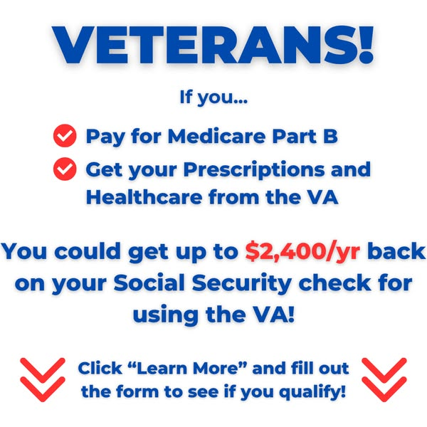
🇺🇸 2026 MEDICARE UPDATE FOR VETERANS 🇺🇸 Many veterans with Medicare Part B may have access to 2026 Medicare plans that could lower their Part B premium. Depending on your eligibility and the plans available in your area, savings can reach up to $2,400 per year. This does not affect VA healthcare, Tricare for Life, or ChampVA. Spouses may also qualify. Some 2026 plans may include: ✅ $0 monthly premiums ✅ Up to $2,400 in annual Part B giveback (varies by plan and location) ✅ Dental, vision, and hearing ✅ Access to civilian doctors and facilities ✅ Fitness and wellness benefits If eligible, you may be able to find a plan in your area that offers a Part B premium reduction. 👉 View your available
{kind=link}
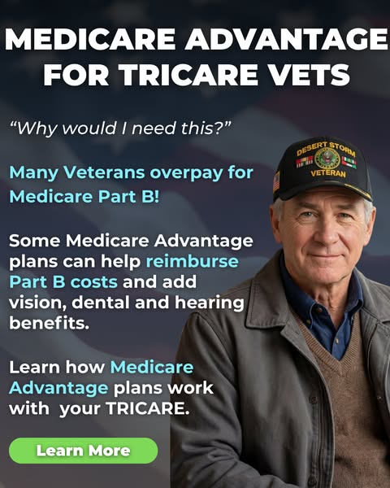
🇺🇸 2026 MEDICARE UPDATE FOR VETERANS 🇺🇸 Many veterans with Medicare Part B may have access to 2026 Medicare plans that could lower their Part B premium. Depending on your eligibility and the plans available in your area, savings can reach up to $2,400 per year. This does not affect VA healthcare, Tricare for Life, or ChampVA. Spouses may also qualify. Some 2026 plans may include: ✅ $0 monthly premiums ✅ Up to $2,400 in annual Part B giveback (varies by plan and location) ✅ Dental, vision, and hearing ✅ Access to civilian doctors and facilities ✅ Fitness and wellness benefits If eligible, you may be able to find a plan in your area that offers a Part B premium reduction. 👉 View your available
{kind=link}
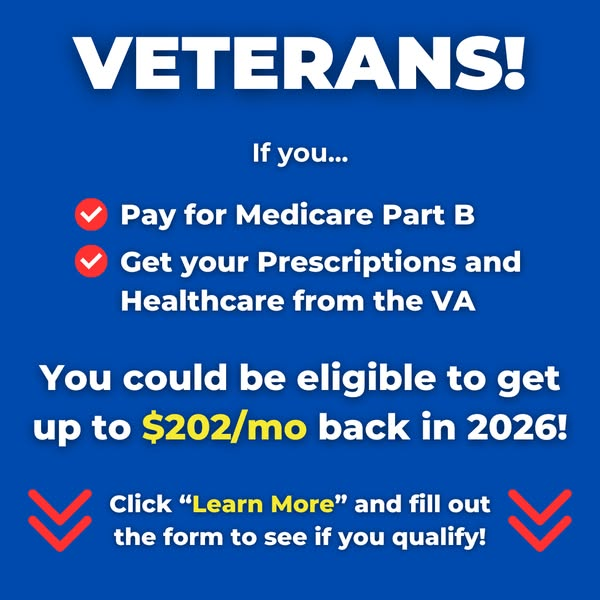
🇺🇸 2026 MEDICARE UPDATE FOR VETERANS 🇺🇸 Many veterans with Medicare Part B may have access to 2026 Medicare plans that could lower their Part B premium. Depending on your eligibility and the plans available in your area, savings can reach up to $2,400 per year. This does not affect VA healthcare, Tricare for Life, or ChampVA. Spouses may also qualify. Some 2026 plans may include: ✅ $0 monthly premiums ✅ Up to $2,400 in annual Part B giveback (varies by plan and location) ✅ Dental, vision, and hearing ✅ Access to civilian doctors and facilities ✅ Fitness and wellness benefits If eligible, you may be able to find a plan in your area that offers a Part B premium reduction. 👉 View your available
{kind=link}
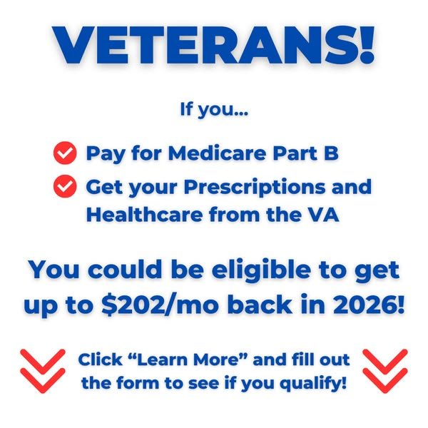
🇺🇸 2026 MEDICARE UPDATE FOR VETERANS 🇺🇸 Many veterans with Medicare Part B may have access to 2026 Medicare plans that could lower their Part B premium. Depending on your eligibility and the plans available in your area, savings can reach up to $2,400 per year. This does not affect VA healthcare, Tricare for Life, or ChampVA. Spouses may also qualify. Some 2026 plans may include: ✅ $0 monthly premiums ✅ Up to $2,400 in annual Part B giveback (varies by plan and location) ✅ Dental, vision, and hearing ✅ Access to civilian doctors and facilities ✅ Fitness and wellness benefits If eligible, you may be able to find a plan in your area that offers a Part B premium reduction. 👉 View your available
{kind=link}
🇺🇸 2026 MEDICARE UPDATE FOR VETERANS 🇺🇸 Many veterans with Medicare Part B may have access to 2026 Medicare plans that could lower their Part B premium. Depending on your eligibility and the plans available in your area, savings can reach up to $2,400 per year. This does not affect VA healthcare, Tricare for Life, or ChampVA. Spouses may also qualify. Some 2026 plans may include: ✅ $0 monthly premiums ✅ Up to $2,400 in annual Part B giveback (varies by plan and location) ✅ Dental, vision, and hearing ✅ Access to civilian doctors and facilities ✅ Fitness and wellness benefits If eligible, you may be able to find a plan in your area that offers a Part B premium reduction. 👉 View your available

🇺🇸 Veterans with TRICARE 🇺🇸� If you’re paying for Medicare Part B, you may be eligible for a $0 premium Medicare Advantage plan that works with your TRICARE coverage. ➡️ Learn how certain plans may include Part B reimbursements, vision, dental, and hearing.� 👉 Check your options now. FB.ME Part B Giveback Options ➡️ Learn more
{kind=link}
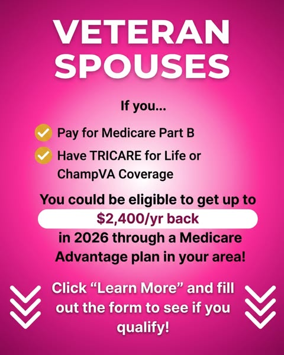
🇺🇸 MOST MILITARY SPOUSES DON'T REALIZE THIS 🇺🇸 If you are enrolled in Medicare Part B, you are paying $202.90 per month, even if you have TRICARE for Life or ChampVA. Many military spouses assume Medicare Advantage costs more or replaces their TRICARE for Life or ChampVA coverage. It does not. And enrolling does not mean dropping or canceling your Medicare Part B. You keep your Part B exactly as you have it now. These $0 per month plans are available to military spouses who already have Part B and may offer up to $2,400 per year in Part B giveback while allowing you to continue using your existing coverage as you do now. You can choose a plan that includes the doctors and specialists you alr
Clearwater Medicare · 1 ads · longest 113 days · no destination link captured
{kind=link}
Turning 65 Soon? Talking to a licensed agent about Medicare is your next step and it costs you NOTHING! Making mistakes and signing up late could mean lifelong penalties. Click "Learn More" below to download our 2026 Medicare Guide, and get free assistance from a licensed Medicare agent. Download Your Free 2026 Medicare Guide! Learn more
Dr. Ed - Former SSA Manager · 4 ads · longest 113 days · askchapter.org
Choosing the wrong Medicare plan can cost you thousands over time. The good news? It only takes 2 minutes to see if you qualify for better coverage or savings. 0:00 / 1:43
{kind=link}
Choosing the wrong Medicare plan can cost you thousands over time. The good news? It only takes 2 minutes to see if you qualify for better coverage or savings. 0:00 / 1:40 HTTPS://ASKCHAPTER.ORG/FLOW/MGE?OVERRIDEPHONENUMBER=5722430615&UTM_CAMPAIGN=MO_MC_WE_DF_AL_US_PS_BX This Could Save You Thousands Learn more
{kind=link}
Choosing the wrong Medicare plan can cost you thousands over time. The good news? It only takes 2 minutes to see if you qualify for better coverage or savings. 0:00 / 0:40
{kind=link}
Choosing the wrong Medicare plan can cost you thousands over time. The good news? It only takes 2 minutes to see if you qualify for better coverage or savings. 0:00 / 0:38 HTTPS://ASKCHAPTER.ORG/FLOW/MGE?OVERRIDEPHONENUMBER=5722430615&UTM_CAMPAIGN=MO_MC_WE_DF_AL_US_PS_BX This Could Save You Thousands Learn more
Health Exchange · 3 ads · longest 112 days · thehealthexchangeagency.com
{kind=link}
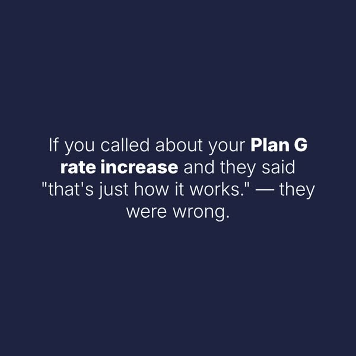
🇺🇸 ATTENTION MEDICARE SUPPLEMENT HOLDERS 🇺🇸 ✅ Your Plan G covers the same things regardless of which company you're with ✅ Switching carriers doesn't change your doctors or your coverage ✅ It only changes what you pay every month ✅ Some people are saving over $1,000 a year for identical coverage If your Medicare Supplement premium went up and your insurance company told you "that's just how it works" — they were wrong. Every Plan G is standardized by the federal government. The benefits are identical no matter which carrier you're with. The only difference is the price you pay each month. You don't have to accept a rate increase. You may be able to get the same coverage for less — and finall
{kind=link}
🇺🇸 ATTENTION MEDICARE SUPPLEMENT HOLDERS 🇺🇸 ✅ Your supplement covers the same things regardless of which company you're with ✅ Switching carriers doesn't change your doctors or your coverage ✅ It only changes what you pay every month ✅ Some people are saving over $1,000 a year for identical coverage Most Medicare Supplement holders don't realize this — your insurance company isn't running your healthcare. Medicare is. Your supplement just picks up whatever Medicare doesn't cover. That's it. It doesn't approve procedures. It doesn't build networks. It doesn't decide which doctors you can see. Medicare handles all of that. Every supplement plan is standardized by the federal government. The be
{kind=link}
👉 Spend Less on Medicare in 2026! New to Medicare or exploring your options? Plan N typically offers lower monthly premiums than Plan G with nearly identical protection — just two small copays. ✅ See any doctor, zero network restrictions ✅ Meaningful monthly savings vs Plan G ✅ Solid protection with minimal out-of-pocket ✅ More money left for the retirement you planned See what rates look like in your zip code — you might be surprised! 0:00 / 0:51 👉 Compare 2026 Rates Now See all your options. Licensed agents ready to help. Learn More
Medicare Resource Center · 1 ads · longest 108 days · www.resourcemedicare.com
{kind=link}
Medicare can feel overwhelming, especially with changing plans and rising costs. Schedule a quick review with a Medicare Pro to better understand your options and next steps. HTTPS://WWW.RESOURCEMEDICARE.COM/NEW-TO-MEDICARE Turning 65 Soon? Get clear, straightforward Medicare guidance from your local Medicare Pro. Review coverage, costs, and plan options. Book Now
Commonwealth Care Alliance · 1 ads · longest 108 days · commonwealthcarealliance.org
{kind=link}
Scott Senior Benefits · 1 ads · longest 100 days · scottseniorbenefits.com
{kind=link}
Senior Planning Services · 1 ads · longest 97 days · no destination link captured
{kind=link}
Indiana Medicare Beneficiaries: Many Hoosiers on Medicare are surprised to learn they may qualify for additional benefits beyond Original Medicare. If you have Medicare Part A & Part B and have been diagnosed with diabetes, a heart condition, or another qualifying chronic health condition, you may be eligible for plans available in parts of Indiana that offer benefits such as: ✅ Grocery Allowance ✅ Utility Bill Assistance ✅ Dental Coverage ✅ Vision Coverage ✅ Hearing Coverage ✅ Over-the-Counter (OTC) Credits ✅ Transportation to Medical Appointments ✅ Fitness & Wellness Benefits ✅ Meal Benefits After Hospital Stays ✅ Chronic Condition Support Programs These benefits can vary by county and pla
Geisinger · 1 ads · longest 95 days · geisinger.org
{kind=link}
Need a new Medicare plan? See if you qualify to switch now. GEISINGER.ORG See if you qualify to switch. Learn More GEISINGER.ORG Medicare Advantage or Part D. Learn More GEISINGER.ORG Learn about Special Enrollment. Learn More GEISINGER.ORG Don’t wait for fall. Learn More GEISINGER.ORG We’re here to help. Learn More
Welltra Medicare Solutions · 1 ads · longest 94 days · no destination link captured
{kind=link}
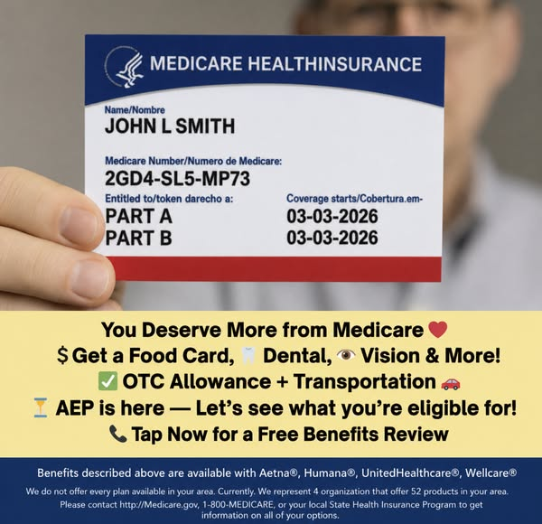
Turning 65 or already on Medicare? Review available Medicare plan options and see what benefits may be available in your area. Call today to check your eligibility. Could You Be Eligible for More Medicare Benefits? No obligation. No pressure. Apply Now
Your Plan Matcher · 12 ads · longest 93 days · no destination link captured
{kind=link}
🚨𝐀𝐭𝐭𝐞𝐧𝐭𝐢𝐨𝐧 𝐌𝐞𝐝𝐢𝐜𝐚𝐫𝐞 𝐑𝐞𝐜𝐢𝐩𝐢𝐞𝐧𝐭𝐬: 𝐌𝐨𝐧𝐭𝐡𝐥𝐲 𝐒𝐩𝐞𝐧𝐝𝐢𝐧𝐠 𝐀𝐥𝐥𝐨𝐰𝐚𝐧𝐜𝐞 𝐍𝐨𝐰 𝐀𝐯𝐚𝐢𝐥𝐚𝐛𝐥𝐞... You may be eligible to get a monthly spending allowance to help pay for plan approved items! Plans depend on your zip code & eligibility to enroll. Check if you’re eligible to enroll in a Medicare Advantage plan that includes a Monthly Spending Allowance for plan-approved items today. 0:00 / 0:24
{kind=link}
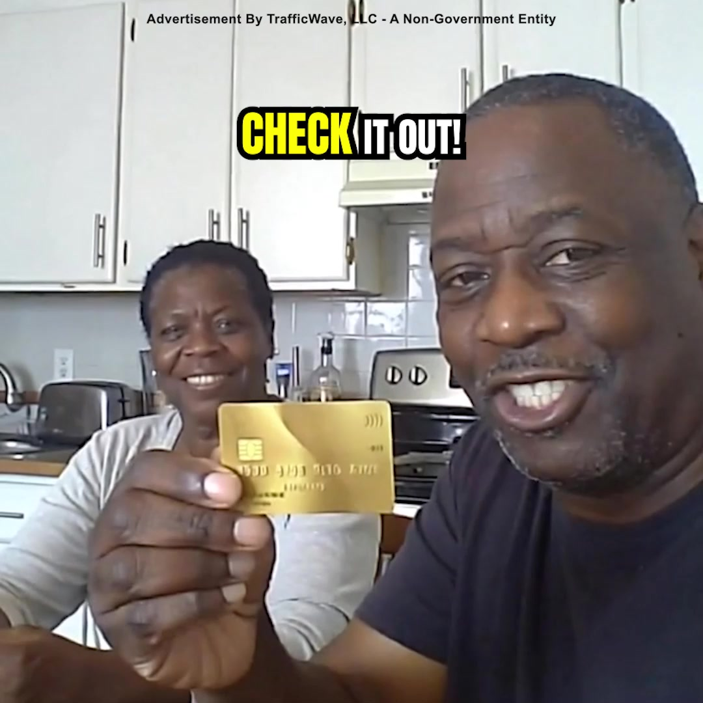
🚨𝐀𝐭𝐭𝐞𝐧𝐭𝐢𝐨𝐧 𝐌𝐞𝐝𝐢𝐜𝐚𝐫𝐞 𝐑𝐞𝐜𝐢𝐩𝐢𝐞𝐧𝐭𝐬: 𝐌𝐨𝐧𝐭𝐡𝐥𝐲 𝐒𝐩𝐞𝐧𝐝𝐢𝐧𝐠 𝐀𝐥𝐥𝐨𝐰𝐚𝐧𝐜𝐞 𝐍𝐨𝐰 𝐀𝐯𝐚𝐢𝐥𝐚𝐛𝐥𝐞... You may be eligible to get a monthly spending allowance to help pay for plan approved items! Plans depend on your zip code & eligibility to enroll. Check if you’re eligible to enroll in a Medicare Advantage plan that includes a Monthly Spending Allowance for plan-approved items today. 0:00 / 0:23
{kind=link}
👉 𝐁𝐞𝐧𝐞𝐟𝐢𝐭: 𝐌𝐨𝐧𝐭𝐡𝐥𝐲 𝐒𝐩𝐞𝐧𝐝𝐢𝐧𝐠 𝐀𝐥𝐥𝐨𝐰𝐚𝐧𝐜𝐞 Those on Medicare check if you can get a Monthly Spending Allowance with a Medicare Advantage Plan. Get help paying for: 🛒 Healthy Groceries 💊 Select Over-the-Counter Items 🔌 Certain Utility Bills 🦷 Dental Care ✅ Plus More! Don’t miss out – check your eligibility today by tapping below👇 0:00 / 0:22 Get Benefit: Monthly Spending Allowance 👉 Monthly Spending Allowances are now available Apply Now
{kind=link}
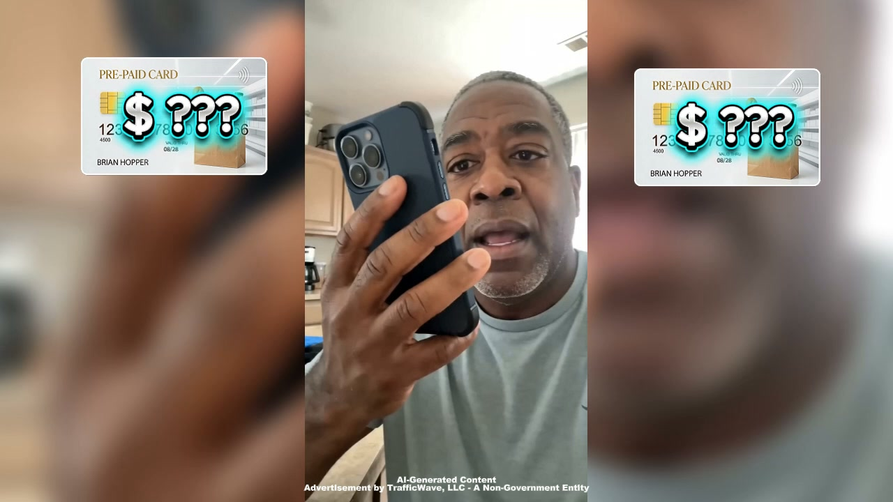
🚨𝐀𝐭𝐭𝐞𝐧𝐭𝐢𝐨𝐧 𝐌𝐞𝐝𝐢𝐜𝐚𝐫𝐞 𝐑𝐞𝐜𝐢𝐩𝐢𝐞𝐧𝐭𝐬: 𝐌𝐨𝐧𝐭𝐡𝐥𝐲 𝐒𝐩𝐞𝐧𝐝𝐢𝐧𝐠 𝐀𝐥𝐥𝐨𝐰𝐚𝐧𝐜𝐞 𝐍𝐨𝐰 𝐀𝐯𝐚𝐢𝐥𝐚𝐛𝐥𝐞... You may be eligible to get a monthly spending allowance to help pay for plan approved items! Plans depend on your zip code & eligibility to enroll. Check if you’re eligible to enroll in a Medicare Advantage plan that includes a Monthly Spending Allowance for plan-approved items today. 0:00 / 0:29 Reveal Monthly Allowance 👉 Tap to Claim your Monthly Spending Allowance! See Details
{kind=link}
🚨𝐀𝐭𝐭𝐞𝐧𝐭𝐢𝐨𝐧 𝐌𝐞𝐝𝐢𝐜𝐚𝐫𝐞 𝐑𝐞𝐜𝐢𝐩𝐢𝐞𝐧𝐭𝐬: 𝐌𝐨𝐧𝐭𝐡𝐥𝐲 𝐒𝐩𝐞𝐧𝐝𝐢𝐧𝐠 𝐀𝐥𝐥𝐨𝐰𝐚𝐧𝐜𝐞 𝐍𝐨𝐰 𝐀𝐯𝐚𝐢𝐥𝐚𝐛𝐥𝐞... You may be eligible to get a monthly spending allowance to help pay for plan approved items! Plans depend on your zip code & eligibility to enroll. Check if you’re eligible to enroll in a Medicare Advantage plan that includes a Monthly Spending Allowance for plan-approved items today. 0:00 / 0:18 Reveal Monthly Allowance 👉 Tap to Claim your Monthly Spending Allowance! See Details
{kind=link}
👉 𝐁𝐞𝐧𝐞𝐟𝐢𝐭: 𝐌𝐨𝐧𝐭𝐡𝐥𝐲 𝐒𝐩𝐞𝐧𝐝𝐢𝐧𝐠 𝐀𝐥𝐥𝐨𝐰𝐚𝐧𝐜𝐞 Those on Medicare check if you can get a Monthly Spending Allowance with a Medicare Advantage Plan. Get help paying for: 🛒 Healthy Groceries 💊 Select Over-the-Counter Items 🔌 Certain Utility Bills 🦷 Dental Care ✅ Plus More! Don’t miss out – check your eligibility today by tapping below👇 0:00 / 0:31 Get Benefit: Monthly Spending Allowance 👉 Monthly Spending Allowances are now available Apply Now

🚨𝐀𝐭𝐭𝐞𝐧𝐭𝐢𝐨𝐧 𝐌𝐞𝐝𝐢𝐜𝐚𝐫𝐞 𝐑𝐞𝐜𝐢𝐩𝐢𝐞𝐧𝐭𝐬: 𝐌𝐨𝐧𝐭𝐡𝐥𝐲 𝐒𝐩𝐞𝐧𝐝𝐢𝐧𝐠 𝐀𝐥𝐥𝐨𝐰𝐚𝐧𝐜𝐞 𝐍𝐨𝐰 𝐀𝐯𝐚𝐢𝐥𝐚𝐛𝐥𝐞... You may be eligible to get a monthly spending allowance to help pay for plan approved items! Plans depend on your zip code & eligibility to enroll. Check if you’re eligible to enroll in a Medicare Advantage plan that includes a Monthly Spending Allowance for plan-approved items today. 0:00 / 0:15
{kind=link}
🚨𝐀𝐭𝐭𝐞𝐧𝐭𝐢𝐨𝐧 𝐌𝐞𝐝𝐢𝐜𝐚𝐫𝐞 𝐑𝐞𝐜𝐢𝐩𝐢𝐞𝐧𝐭𝐬: 𝐌𝐨𝐧𝐭𝐡𝐥𝐲 𝐒𝐩𝐞𝐧𝐝𝐢𝐧𝐠 𝐀𝐥𝐥𝐨𝐰𝐚𝐧𝐜𝐞 𝐍𝐨𝐰 𝐀𝐯𝐚𝐢𝐥𝐚𝐛𝐥𝐞... You may be eligible to get a monthly spending allowance to help pay for plan approved items! Plans depend on your zip code & eligibility to enroll. Check if you’re eligible to enroll in a Medicare Advantage plan that includes a Monthly Spending Allowance for plan-approved items today. 0:00 / 0:15
Healthfirst · 5 ads · longest 91 days · healthfirst.org
{kind=link}
Got Medicare & Medicaid? Our Medicare Advantage plans give you up to $175/month OTC to spend, including at local pharmacies. Medicare Advantage plans Call Now
{kind=link}
Llámenos y obtenga información sobre los planes Medicare Advantage con la tarjeta OTC Plus que le permitirá ahorrar dinero. 0:00 / 0:14 Medicare Advantage con OTC Call now
{kind=link}
¿Tiene Medicare y Medicaid? Nuestros planes Medicare Advantage le dan hasta $175/mes de OTC para gastar en su farmacia local. Planes Medicare Advantage Call Now
{kind=link}
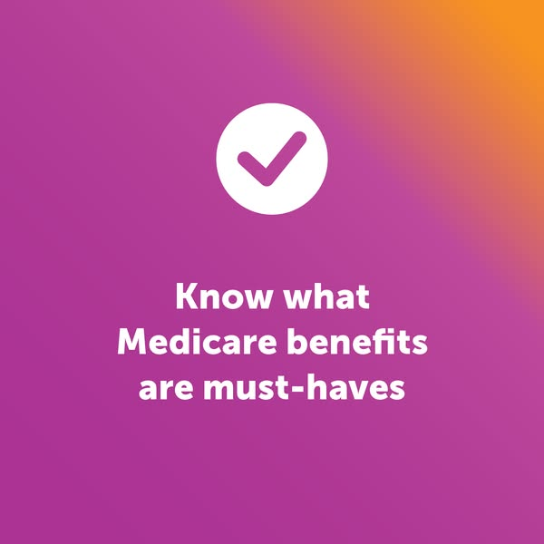
Medicare eligibility? Enrollment? Savings? It’s easy to learn the basics with help from our Medicare Learning Center. HEALTHFIRST.ORG Find out if you're eligible now Learn More HEALTHFIRST.ORG Learn about coverage options Learn More HEALTHFIRST.ORG See what savings you qualify for Learn More HEALTHFIRST.ORG Explore Medicare Advantage plans Learn More
{kind=link}
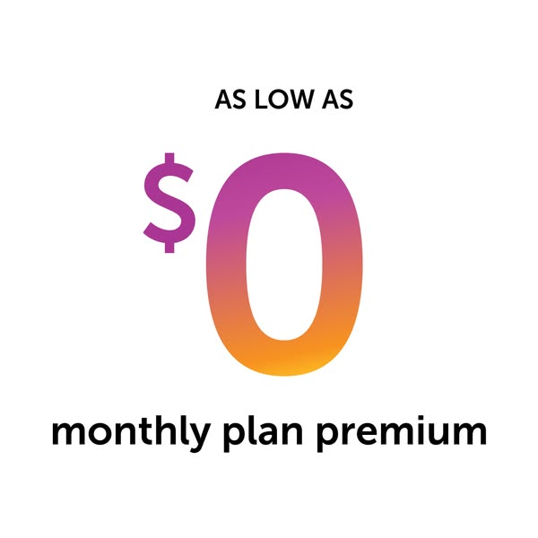
New Yorkers who qualify for both Medicare and Medicaid can get even more benefits with our Medicare Advantage plans. For OTC items & more Call Now No yearly spending limit Call Now Pharmacies you prefer Call Now Covering NY for 30+ years Call Now $0 Premium + $0 Copays Call Now
Korts Insurance · 1 ads · longest 87 days · no destination link captured
{kind=link}
🎂 Turning 65 in the next few months? Medicare comes with important decisions about coverage, doctors, prescriptions, and costs. ✅ Learn the basics of Medicare ✅ Understand your plan options ✅ Get answers to your questions ✅ No obligation Schedule your free Medicare review today and make informed decisions with confidence. 📞 0:00 / 0:30 🎉 Turning 65? Medicare Doesn't Have To Be Confusing 📞 Free Medicare education from a local licensed agent. Learn More
Simple Senior USA · 1 ads · longest 80 days · no destination link captured
{kind=link}
New to Medicare? A reason to smile: Medicare Advantage Plans may offer routine dental care. The range of Dental benefits may vary by each Medicare Advantage Plan. We represent Medicare Advantage, Medicare Advantage Prescription Drug, and stand alone Prescription Drug Plans for [Humana], [UnitedHealthcare®], [Aetna], [HealthSpring℠], [Wellcare], [Anthem BCBS], [Devoted], [Blue Cross Blue Shield of Michigan], [Molina Healthcare] and [Kaiser Permanente]. Get connected with a licensed insurance agent and find out what Medicare Advantage Plans you may be eligible for. [Mon. – Fri. 8 AM – 8 PM EST, Sat. – Sun. 10 AM – 6:30 PM EST]. Disclaimer: We do not offer every plan available in your area. Ple
Lynette Quisenberry · 1 ads · longest 80 days · no destination link captured

New to Medicare? A reason to smile: Medicare Advantage Plans may offer routine dental care. The range of Dental benefits may vary by each Medicare Advantage Plan. We represent Medicare Advantage, Medicare Advantage Prescription Drug, and stand alone Prescription Drug Plans for [Humana], [UnitedHealthcare®], [Aetna], [HealthSpring℠], [Wellcare], [Anthem BCBS], [Devoted], [Blue Cross Blue Shield of Michigan], [Molina Healthcare] and [Kaiser Permanente]. Get connected with a licensed insurance agent and find out what Medicare Advantage Plans you may be eligible for. [Mon. – Fri. 8 AM – 8 PM EST, Sat. – Sun. 10 AM – 6:30 PM EST]. Disclaimer: We do not offer every plan available in your area. Ple
CareHarmony · 1 ads · longest 78 days · no destination link captured
{kind=link}
If you have diabetes, heart disease, or kidney disease, Medicare may already cover dedicated care coordination — at no additional cost to you. A nurse, 24/7 support, and a team that works alongside your existing doctors. Check if you qualify. Care coordination, already covered through Medicare. Care coordination for heart, kidney, and metabolic conditions. Check eligibility in 60 seconds. Learn More
Jeff Rossen with Chapter · 2 ads · longest 77 days · askchapter.org

Choosing the wrong Medicare plan can cost you thousands over time. The good news? It only takes 2 minutes to see if you qualify for better coverage or savings. 0:00 / 0:41 HTTPS://ASKCHAPTER.ORG/FLOW/MGE?OVERRIDEPHONENUMBER=5722430615&UTM_CAMPAIGN=MO_MC_WE_DF_AL_US_PS_BX Knock out your Medicare to-do list Learn More
{kind=link}
Choosing the wrong Medicare plan can cost you thousands over time. The good news? It only takes 2 minutes to see if you qualify for better coverage or savings. 0:00 / 0:58 HTTPS://ASKCHAPTER.ORG/FLOW/MGE?OVERRIDEPHONENUMBER=5722430615&UTM_CAMPAIGN=MO_MC_WE_DF_AL_US_PS_BX Knock out your Medicare to-do list Learn More
Medicare Agents Hub · 4 ads · longest 75 days · no destination link captured
{kind=link}
Thousands of seniors are finding the Medicare Agent Directory every day when they do a search for medicare agents in their home town, or their zip code. You can get a free Agent listing today and be on the top of search engines for Medicare Agents in your city. It really is free. FB.ME Get a free listing on the Medicare Agent Directory Apply now
{kind=link}
Thousands of seniors are finding the Medicare Agent Directory every day when they do a search for medicare agents in their home town, or their zip code. You can get a free Agent listing today and be on the top of search engines for Medicare Agents in your city. It really is free. 0:00 / 0:35 FB.ME Get a Free Medicare Agent Listing, Be Found by Seniors See details
{kind=link}
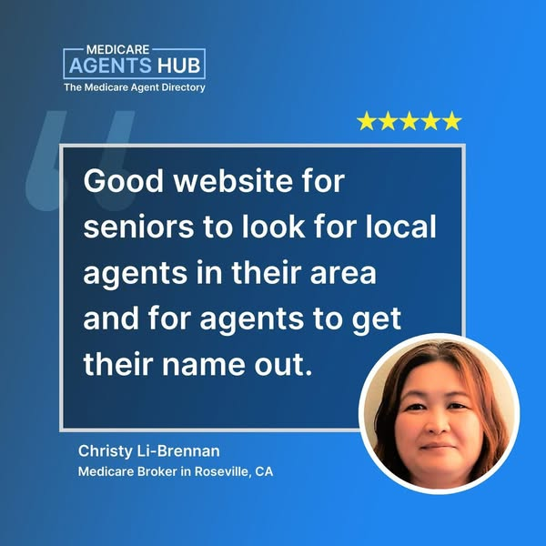
Thousands of seniors are finding the Medicare Agent Directory every day when they do a search for medicare agents in their home town, or their zip code. You can get a free Agent listing today and be on the top of search engines for Medicare Agents in your city. It really is free. FB.ME Get a free listing on the Medicare Agent Directory Apply now
{kind=link}
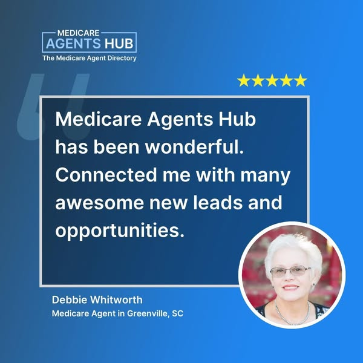
Thousands of seniors are finding the Medicare Agent Directory every day when they do a search for medicare agents in their home town, or their zip code. You can get a free Agent listing today and be on the top of search engines for Medicare Agents in your city. It really is free. FB.ME Get Found by Local Seniors Get a free listing on the Medicare Agent Directory Apply now
The Senior Giveback Program · 4 ads · longest 73 days · senior-budget-book.com
{kind=link}
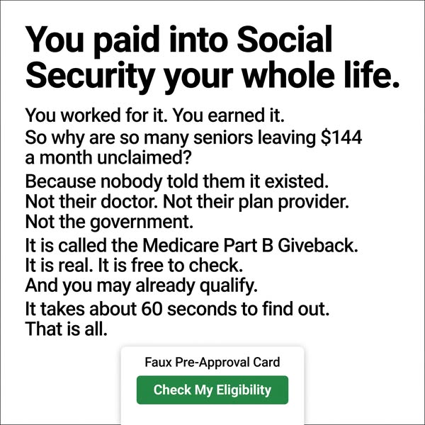
Medicare-licensed benefit specialists have launched a no-cost 60-second qualification checker to help beneficiaries access the monthly spending card that most seniors have never heard of — good for food, bills, and daily necessities. 1.Respond to 3 simple questions (zero commitment, zero fees) 1. Find out your possible monthly benefit right away 3. Be part of the thousands of seniors who signed up this quarter SENIOR-BUDGET-BOOK.COM This sign-up period has a deadline. Miss it, and you'll have to hold off until the following cycle. > Try the free 3-question screener today — those who qualify will be guided through activation by a licensed agent. Learn more

Medicare-licensed benefit specialists have launched a no-cost 60-second qualification checker to help beneficiaries access the monthly spending card that most seniors have never heard of — good for food, bills, and daily necessities. 1.Respond to 3 simple questions (zero commitment, zero fees to call to find out) 2. Find out your possible monthly benefit right away 3. Be part of the thousands of seniors who signed up this quarter SENIOR-BUDGET-BOOK.COM This sign-up period has a deadline. Miss it, and you'll have to hold off until the following cycle. > Try the free 3-question screener today — those who qualify will be guided through activation by a licensed agent. Learn more
{kind=link}
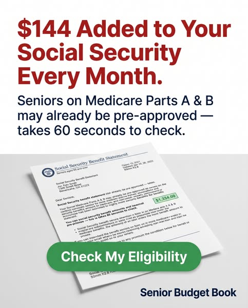
Medicare-licensed benefit specialists have launched a no-cost 60-second qualification checker to help beneficiaries access the monthly spending card that most seniors have never heard of — good for food, bills, and daily necessities. 1.Respond to 3 simple questions (zero commitment, zero fees) 1. Find out your possible monthly benefit right away 3. Be part of the thousands of seniors who signed up this quarter SENIOR-BUDGET-BOOK.COM This sign-up period has a deadline. Miss it, and you'll have to hold off until the following cycle. > Try the free 3-question screener today — those who qualify will be guided through activation by a licensed agent. Learn more
{kind=link}
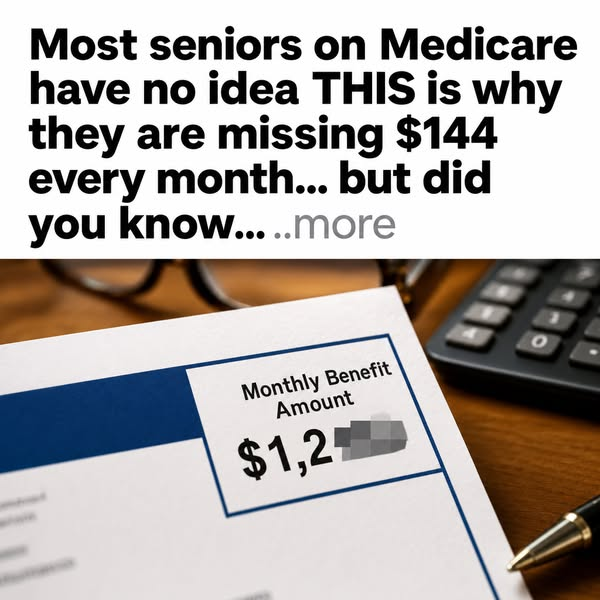
Medicare-licensed benefit specialists have launched a no-cost 60-second qualification checker to help beneficiaries access the monthly spending card that most seniors have never heard of — good for food, bills, and daily necessities. 1.Respond to 3 simple questions (zero commitment, zero fees) 1. Find out your possible monthly benefit right away 3. Be part of the thousands of seniors who signed up this quarter SENIOR-BUDGET-BOOK.COM This sign-up period has a deadline. Miss it, and you'll have to hold off until the following cycle. > Try the free 3-question screener today — those who qualify will be guided through activation by a licensed agent. See details
65Harmony · 3 ads · longest 69 days · no destination link captured

🥦🍎 Could You Be Missing Out on Extra Money for Groceries From A Medicare Plan? 🛒💳 better fits yMany Medicare beneficiaries may qualify for plans that include a monthly food and grocery allowance to help pay for eligible healthy groceries at participating stores. ✅ Check if you're eligible ✅ Review your current Medicare benefits ✅ See if there's a plan available in your area that our needs 📞 Our licensed Medicare advisors will answer your questions and help you understand your options—at no cost and with no obligation. 👇 Click Learn More to see if you qualify today 0:00 / 0:39

🥦🍎 Could You Be Missing Out on Extra Money for Groceries From A Medicare Plan? 🛒💳 Many Medicare beneficiaries may qualify for plans that include a monthly food and grocery allowance to help pay for eligible healthy groceries at participating stores. ✅ Check if you're eligible ✅ Review your current Medicare benefits ✅ See if there's a plan available in your area that better fits your needs 📞 Our licensed Medicare advisors will answer your questions and help you understand your options—at no cost and with no obligation. 👇 Click Learn More to see if you qualify today 0:00 / 0:39 FB.ME 🥕 Check if You Qualify for a Medicare Grocery Card 📞 Free Medicare Food/Grocery Card Benefit Review • No Obliga
{kind=link}
🥦🍎 Could You Be Missing Out on Extra Money for Groceries From A Medicare Plan? 🛒💳 better fits yMany Medicare beneficiaries may qualify for plans that include a monthly food and grocery allowance to help pay for eligible healthy groceries at participating stores. ✅ Check if you're eligible ✅ Review your current Medicare benefits ✅ See if there's a plan available in your area that our needs 📞 Our licensed Medicare advisors will answer your questions and help you understand your options—at no cost and with no obligation. 👇 Click Learn More to see if you qualify today 0:00 / 0:39
65 Quiz · 14 ads · longest 64 days · rmoskwa.65quiz.com
{kind=link}
The Medicare mail never stops. Every insurance company sounds the same, everyone gives different advice. Supplement? Advantage? Who's actually right? I was losing sleep, terrified of being stuck with the wrong choice for life. Then I discovered a way to cut through all the noise - answered a few questions about my situation and got a clear answer in 2 minutes. If Medicare confusion is stealing your peace of mind, this quiz ends it. 0:00 / 1:35 RMOSKWA.65QUIZ.COM This Medicare Truth Will Shock You Learn more
{kind=link}
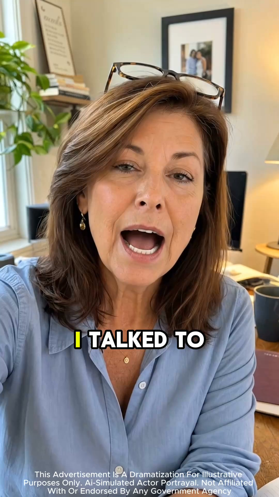
Answer a few quick questions to find the best Medicare plan for you. 0:00 / 0:52 KGILSENAN.65QUIZ.COM Medicare Quiz Learn more

Losing sleep over Medicare and terrified you'll pick wrong? The mail never stops, every company sounds identical, everyone gives conflicting advice. Supplement, Advantage, Original Medicare - who's actually right? I was paralyzed by this decision until I found a way to cut through the noise. Answered questions about my actual situation and got a clear answer in 2 minutes. If Medicare is keeping you up at night, this gives you peace of mind. 0:00 / 0:53 PKEAVENY.65QUIZ.COM Scared You'll Pick the Wrong Medicare Plan? Learn more

I spent weeks drowning in Medicare mail and conflicting advice. My neighbor swore by Supplements, my cousin said Advantage was the only way. I was terrified of picking wrong and being stuck with it. Then I took this 2-minute quiz that asked about MY doctors, MY location, MY needs - and finally got a straight answer. Plot twist: my husband took it and got a completely different recommendation. Didn't even know that was possible. If you're turning 65 and confused, this quiz will give you clarity. 0:00 / 0:53 DTANNER.65QUIZ.COM This Medicare Truth Will Shock You Learn more
{kind=link}
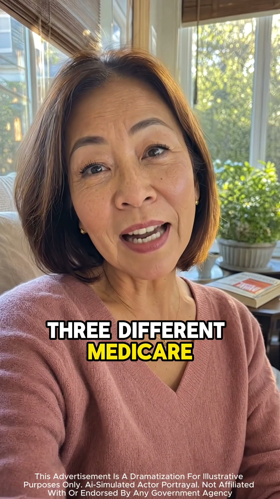
The Medicare mail never stops. Every insurance company sounds the same, everyone gives different advice. Supplement? Advantage? Who's actually right? I was losing sleep, terrified of being stuck with the wrong choice for life. Then I discovered a way to cut through all the noise - answered a few questions about my situation and got a clear answer in 2 minutes. If Medicare confusion is stealing your peace of mind, this quiz ends it. 0:00 / 0:54 MMARTINEZ.65QUIZ.COM This Medicare Truth Will Shock You Learn more
{kind=link}
I spent weeks drowning in Medicare mail and conflicting advice. My neighbor swore by Supplements, my cousin said Advantage was the only way. I was terrified of picking wrong and being stuck with it. Then I took this 2-minute quiz that asked about MY doctors, MY location, MY needs - and finally got a straight answer. Plot twist: my husband took it and got a completely different recommendation. Didn't even know that was possible. If you're turning 65 and confused, this quiz will give you clarity. 0:00 / 0:53 PMINICHINO.65QUIZ.COM This Medicare Truth Will Shock You Learn more
{kind=link}
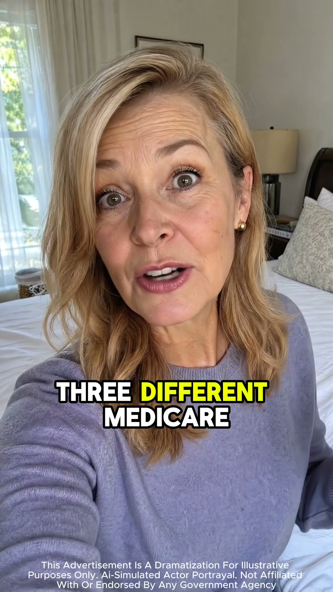
I spent weeks drowning in Medicare mail and conflicting advice. My neighbor swore by Supplements, my cousin said Advantage was the only way. I was terrified of picking wrong and being stuck with it. Then I took this 2-minute quiz that asked about MY doctors, MY location, MY needs - and finally got a straight answer. Plot twist: my husband took it and got a completely different recommendation. Didn't even know that was possible. If you're turning 65 and confused, this quiz will give you clarity. 0:00 / 0:53 KCORREA.65QUIZ.COM This Medicare Truth Will Shock You Learn more
{kind=link}
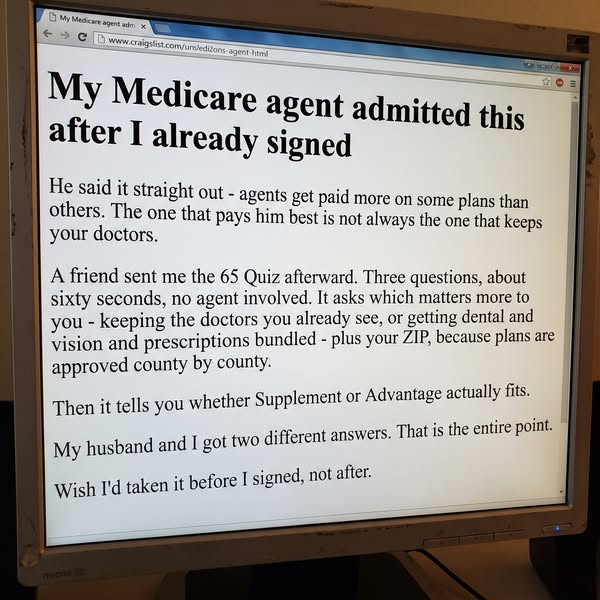
I spent weeks drowning in Medicare mail and conflicting advice. My neighbor swore by Supplements, my cousin said Advantage was the only way. I was terrified of picking wrong and being stuck with it. Then I took this 2-minute quiz that asked about MY doctors, MY location, MY needs - and finally got a straight answer. Plot twist: my husband took it and got a completely different recommendation. Didn't even know that was possible. If you're turning 65 and confused, this quiz will give you clarity.
Complete Family Protection · 1 ads · longest 63 days · no destination link captured
{kind=link}
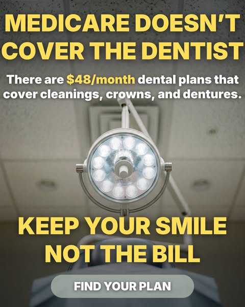
Most people don't realize Medicare leaves dental almost completely uncovered. Cleanings, crowns, dentures, root canals, all of it comes out of pocket. There are dental plans starting around $48/month that actually cover the work you need, not just two cleanings a year. Fill out the form below and our licensed agents will walk you through what's available in your area. 🦷 FB.ME Dental Plans That Cover Major Work Learn more
Don Lemon with Chapter · 4 ads · longest 60 days · askchapter.org
{kind=link}
Make informed choices for your Medicare coverage and optimize your benefits with Chapter's dedicated team. 0:00 / 1:09 ASKCHAPTER.ORG/DON Knock out your Medicare to-do list Learn More
{kind=link}
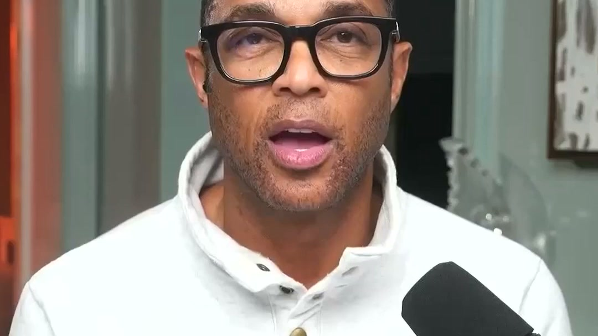
Are you worried you might be or enroll in the wrong Medicare plan? For most people, Medicare stress comes from three things: 1. Your plan changes or sends letters you don’t fully understand 2. You’re not sure if your doctors, hospital, or medications are really covered 3. You’ve stayed in the same plan for years without a proper review The good news? We’ve built a simple Medicare review that walks through these exact checks with you. Our licensed advisors use your doctors, medications, and budget to look at the plans in your area and make everything clear in about 20 minutes. We’ve personalized this review for your situation, not “people in general,” and we’re confident it can help you feel
{kind=link}
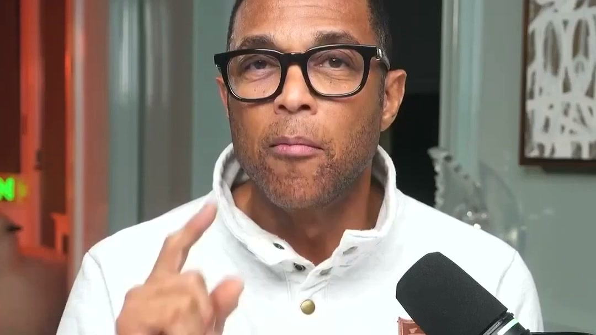
Are you worried you might be or enroll in the wrong Medicare plan? For most people, Medicare stress comes from three things: 1. Your plan changes or sends letters you don’t fully understand 2. You’re not sure if your doctors, hospital, or medications are really covered 3. You’ve stayed in the same plan for years without a proper review The good news? We’ve built a simple Medicare review that walks through these exact checks with you. Our licensed advisors use your doctors, medications, and budget to look at the plans in your area and make everything clear in about 20 minutes. We’ve personalized this review for your situation, not “people in general,” and we’re confident it can help you feel
{kind=link}
Are you worried you might be or enroll in the wrong Medicare plan? For most people, Medicare stress comes from three things: 1. Your plan changes or sends letters you don’t fully understand 2. You’re not sure if your doctors, hospital, or medications are really covered 3. You’ve stayed in the same plan for years without a proper review The good news? We’ve built a simple Medicare review that walks through these exact checks with you. Our licensed advisors use your doctors, medications, and budget to look at the plans in your area and make everything clear in about 20 minutes. We’ve personalized this review for your situation, not “people in general,” and we’re confident it can help you feel
Medicare Supplements · 1 ads · longest 58 days · www.mutualmedicarequote.com
{kind=link}
Tired of Medicare Advantage restrictions? See how Medicare Supplement plans give you more freedom and lower out-of-pocket costs. HTTPS://WWW.MUTUALMEDICAREQUOTE.COM/MEDICARE-SUPPLEMENTS/ Compare Medicare Supplement Plans See all your options. Licensed agents ready to help. Learn more
Health Quote · 1 ads · longest 58 days · us.seniordiscountrate.com
{kind=link}
What if your Medicare Supplement is costing you $1,000–$2,000 a year more than it should? If you’re on Plan F, G, or N and your premium keeps increasing, you may be able to switch carriers and keep the exact same coverage — same benefits, same doctors — just at a lower monthly rate. It takes 2 minutes to see what you actually qualify for. Don’t overpay for the same plan. 0:00 / 0:28 US.SENIORDISCOUNTRATE.COM Stop Overpaying for Medigap (2-Minute Check) See details
Exclusive Insurance Plans · 4 ads · longest 57 days · no destination link captured
{kind=link}
New to Original Medicare, Aging into Original Medicare, Lost your Health Insurance, On Medicare Parts A and B but have recently moved, or have a special enrollment period? We could help you review the Medicare Advantage plans available in your area. Speak to a licensed insurance agent to check your eligibility to enroll. Learn More: https://exclusiveinsuranceplans.com/ Insurance Ad - No Government Affiliation Exclusive Insurance Plans Learn More
{kind=link}
New to Original Medicare, Aging into Original Medicare, Lost your Health Insurance, On Medicare Parts A and B but have recently moved, or have a special enrollment period? We could help you review the Medicare Advantage plans available in your area. Speak to a licensed insurance agent to check your eligibility to enroll. Learn More: https://exclusiveinsuranceplans.com/ Insurance Ad - No Government Affiliation Exclusive Insurance Plans Learn More
{kind=link}
New to Original Medicare, Aging into Original Medicare, lost your Health Insurance, On Medicare Parts A and B but have recently moved, or have a special enrollment period? Speak to a licensed insurance agent to check your eligibility to enroll. Learn More: https://exclusiveinsuranceplans.com/ Insurance Ad - No Government affiliation Exclusive Insurance Plans Learn More
{kind=link}
New to Original Medicare, Aging into Original Medicare, lost your Health Insurance, On Medicare Parts A and B but have recently moved, or have a special enrollment period? We are here to assist you in reviewing Medicare Advantage plans available in your area. Speak to a licensed insurance agent to check your eligibility to enroll. Learn More: https://exclusiveinsuranceplans.com/ Insurance Ad - No Government Affiliation Exclusive Insurance Plans Learn More
Affordable Insurance Deals · 3 ads · longest 57 days · affordableinsurancedeals.com
{kind=link}
New to Medicare, Aging into Medicare, lost your Health Insurance, On Medicare but have recently moved, or have a special enrollment period? We are here to assist you in reviewing Medicare Advantage plans available in your area. Speak to a licensed insurance agent to check your eligibility to enroll. Learn More: https://affordableinsurancedeals.com Insurance Ad – No Government Affiliation AFFORDABLEINSURANCEDEALS.COM Affordable Insurance Deals See details

New to Medicare, Aging into Medicare, lost your Health Insurance, On Medicare but have recently moved, or have a special enrollment period? We could help you review the Medicare Advantage plans available in your area. Speak to a licensed insurance agent to check your eligibility to enroll. Learn More: https://affordableinsurancedeals.com [Enrollment in the described plan type may be limited to certain times of the year unless you qualify for a Special Enrollment Period.] Insurance Ad – No Government affiliation
{kind=link}
New to Medicare, Aging into Medicare, lost your Health Insurance, On Medicare but have recently moved, or have a special enrollment period? We could help you review Medicare Advantage Plans in your area. Speak to a licensed insurance agent to check your eligibility to enroll. [Enrollment in the described plan type may be limited to certain times of the year unless you qualify for a Special Enrollment Period.] Learn More: https://affordableinsurancedeals.com Insurance Ad – No Government affiliation AFFORDABLEINSURANCEDEALS.COM Affordable Insurance Deals See details
CVS Pharmacy · 1 ads · longest 55 days · cvs.com
{kind=link}
Lara Logan with Chapter · 1 ads · longest 53 days · askchapter.org
{kind=link}
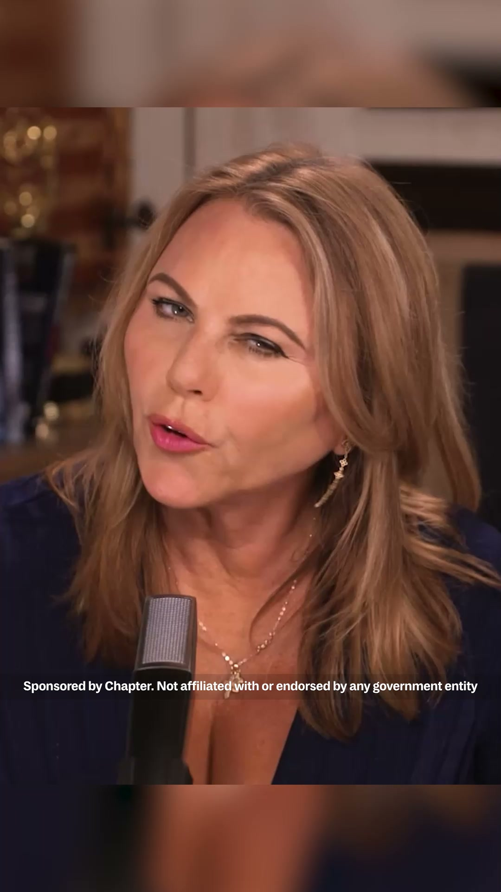
Make informed choices for your Medicare coverage and optimize your benefits with Chapter's dedicated team. 0:00 / 1:00 ASKCHAPTER.ORG/LOGAN Knock out your Medicare to-do list Talk to a Medicare Advisor Learn More
Senior Benefit Solutions · 1 ads · longest 53 days · no destination link captured
{kind=link}
If you're 65 or older and have Medicare Parts A & B, you may qualify for extra Medicare benefits designed for seniors living with diabetes or a heart condition. Depending on eligibility, qualifying plans may include: ✅ Up to $195/month for groceries & utilities* ✅ $0 monthly plan premium ✅ Prescription Drug Coverage ✅ Dental, Vision & Hearing ✅ Transportation & more See if you qualify in just a few minutes. FB.ME Extra Medicare Benefits May Be Available See if you qualify today. Apply now
Paul J DaCosta Insurance Services · 1 ads · longest 53 days · no destination link captured
{kind=link}
Medicare Open Enrollment starts October 15th! Call Paul for a free Medicare review and see if you're getting all the benefits you deserve. 0:00 / 0:15 Ready for Medicare Open Enrollment? Book Your Free Review! Call now
Chris Cardinal - Licensed Agent · 1 ads · longest 50 days · no destination link captured
{kind=link}
Turning 65 in Florida? Or about to activate Medicare Part B? - Most people get a letter, a stack of mail, and a flood of robocalls - and still have no real idea what Medicare Advantage vs. Medicare Supplement actually means for them. Google gives you technical jargon. Call centers give you a sales pitch. Neither one answers your actual question. I'm Christopher Cardinal, an independent Medicare agent based in Florida - licensed across the major carriers, so I'm not pushing one company's plan over another. Book a free, no-obligation phone consultation and I'll walk you through Advantage vs. Supplement in plain English, then match you to the plan that actually fits your health needs and your b
Benefit Assistance Center · 1 ads · longest 50 days · seniorcoveragehelp.com
{kind=link}
⚠️ Seniors over 64: NEW Benefits PLAN offers up to $Thousands in extra support for expenses. Our NEW Senior Program has you covered! -- Get an Allowance and use it to shop for; + everyday items + prescriptions + groceries + and more. Chat below now to learn about this amazing program and how to take advantage of it before it's too late! 0:00 / 0:12 SENIORCOVERAGEHELP.COM 🚨 Enroll Today to Save Thousands Learn more
TMB Insurance Services · 1 ads · longest 46 days · tmbinsurance.perspectivefunnel.com
{kind=link}
Most people turning 65 think Medicare is free. It isn't. And what it doesn't cover can cost you everything you've saved. Here's what most don't realize 👇 Original Medicare only pays 80% of approved costs. You pay the other 20. And unlike your old work insurance — there's no cap. No ceiling. No maximum.I've seen people get a $60,000 bill for the part Medicare didn't cover. After a lifetime of paying in.There's a category of coverage built to put a ceiling back on what you can owe. Turning 65 opens a window. It doesn't stay open forever. Take the 2-minute quiz to see if you qualify. Click "Learn More" before your window closes. 👇 0:00 / 4:45 TMBINSURANCE.PERSPECTIVEFUNNEL.COM Turning 65 Soon?
The carriers' own ads · 48 ads · 11 advertisers
CareSource · 1 ads · longest 147 days · caresource.com
{kind=link}
Aetna · 6 ads · longest 136 days · aetna.com
{kind=link}
Turning 65 and still working? Have your cake and eat it too, by finding an Aetna Medicare Advantage plan that works with your current coverage. Just fill out a short form to get this party started. 0:00 / 0:12 Get ready for Medicare Learn More

Federal retirees, the Aetna Medicare Advantage plan offers lower premiums, prescription coverage and lots of extras. AETNA.COM Visit our Federal Retiree Center. Explore your options. Learn More
{kind=link}
Federal retirees, the Aetna Medicare Advantage plan offers lower premiums, prescription coverage and lots of extras. AETNA.COM Visit our Federal Retiree Center. Explore your options. Learn More

Turning 65? Get personalized Medicare guidance from the comfort of home. One-on-one support is just a tap away. Get started today Learn More
{kind=link}
Turning 65? Get personalized Medicare guidance from the comfort of home. One-on-one support is just a tap away. Get started today Learn More
{kind=link}
Still considering your Medicare options? Tap to chat with a licensed agent. We'll help you understand the added benefits included in an Aetna Medicare Advantage plan, such as prescription drug coverage, gym memberships and more. Questions? We can help. Learn More
Devoted Health · 9 ads · longest 95 days · hello.devoted.com
{kind=link}
Did you gain, lose, or have a change in your Extra Help? Devoted Health MA plans. Free guide without obligation to enroll. 0:00 / 1:00 HELLO.DEVOTED.COM Devoted Health FREE Medicare Comparison Guide Learn more
{kind=link}
Did you gain, lose, or have a change in your Extra Help? Devoted Health MA plans. Free guide without obligation to enroll. 0:00 / 2:00 HELLO.DEVOTED.COM Devoted Health FREE Medicare Comparison Guide Learn more
{kind=link}
Real value and real values — that’s what Devoted Health Medicare Advantage plans are all about. 0:00 / 0:30
{kind=link}
Real value and real values — that’s what Devoted Health Medicare Advantage plans are all about. 0:00 / 0:30
{kind=link}
Real value and real values — that’s what Devoted Health Medicare Advantage plans are all about. 0:00 / 0:30

If you recently gained, lost, or had a change in Extra Help status, you may qualify for a Special Enrollment Period. A Devoted Health Medicare Advantage plan can give you Medicare benefits you’ll actually use and real monthly savings. Call Devoted Health to learn more and get a $10 gift card* for groceries and gas. *Free gift without obligation to enroll.

If you recently gained, lost, or had a change in Extra Help status, you may qualify for a Special Enrollment Period. A Devoted Health Medicare Advantage plan can give you Medicare benefits you’ll actually use and real monthly savings. Call Devoted Health to learn more and get a $10 gift card* for groceries and gas. *Free gift without obligation to enroll.
{kind=link}
If you recently gained, lost, or had a change in Extra Help status, you may qualify for a Special Enrollment Period. A Devoted Health Medicare Advantage plan can give you Medicare benefits you’ll actually use and real monthly savings. Call Devoted Health to learn more and get a $10 gift card* for groceries and gas. *Free gift without obligation to enroll.
Blue Cross Blue Shield of Arizona · 4 ads · longest 88 days · no destination link captured

Get dental, vision, hearing, a food flex card, and prescription drugs. Don’t miss out.
{kind=link}
Get dental, prescription drugs, over-the-counter items, a food flex card, and much more FB.ME Don’t miss out on extra benefits for $0 Health Choice Homepage Get quote
{kind=link}
Get dental, vision, hearing, a food flex card, and prescription drugs. Don’t miss out.
{kind=link}
$0 copay for dental, vision, hearing, over the counter items, and a healthy food flex card FB.ME Have Medicare and AHCCCS? Health Choice Homepage Get quote
HealthSpring · 4 ads · longest 86 days · no destination link captured
{kind=link}
A Medicare Supplement Insurance Plan gives you the freedom to travel with confidence, anywhere in the U.S. Put a spring in your step. healthspring.com Learn More
{kind=link}
Explore ‘All-in-One’ coverage with HealthSpring Medicare Advantage plans and discover the extra benefits. See if you qualify. Put a spring in your step today healthspring.com Contact Us
{kind=link}
When you feel supported, it's easier to focus on the people, moments and experiences that matter most. 0:00 / 0:12 Find Medicare peace of mind Explore our 2026 Medicare plans. We offer flexible coverage options, access to high-quality care and dedicated support Learn More
{kind=link}
Dental, vision, hearing and more. Explore HealthSpring Medicare Advantage plans that put a spring in your step. 0:00 / 0:11 Find your Medicare Advantage Plan healthspring.com Learn More
UnitedHealthcare Medicare Plans · 15 ads · longest 80 days · aarpmedicaresupplement.com
{kind=link}
Medicare can be hard to understand. The decision guide can help you choose the right insurance plan for a full life ahead. AARPMEDICARESUPPLEMENT.COM Get a free decision guide Learn about plan options Learn More
{kind=link}
Keep the doc you love. Medicare Supplement insurance plans let you see any provider who accepts Medicare. AARPMEDICARESUPPLEMENT.COM No network restrictions Learn about plan options Learn More
{kind=link}
Want to get up-to-speed on Medicare Supplement insurance plans? Compare plans online or download a helpful guide. Great information online Get the free decision guide Learn More
{kind=link}
Pro tip for snowbirds: Medicare Supplement insurance plans let you see any doctor that accepts Medicare in the U.S. See plans that hit the road Get a plan that travels Learn More
{kind=link}
The biggest benefit is peace of mind. Find out what else you should know about Medicare Supplement insurance plans. A big benefit: confidence Get a free decision guide Learn More
{kind=link}
The UHC Nursing Home plan goes beyond Original Medicare with benefits like vision, hearing and dental coverage, transportation assistance and more. UHC.COM/UHCNURSINGHOMEPLAN Dedicated care team support For nursing home residents Learn More
{kind=link}
The UHC Nursing Home plan goes beyond Original Medicare with benefits like vision, hearing and dental coverage, transportation assistance and more. UHC.COM/UHCNURSINGHOMEPLAN Dedicated care team support For nursing home residents Learn More
{kind=link}
UnitedHealthcare · 1 ads · longest 46 days · no destination link captured
{kind=link}
Bryan’s committed to making healthcare easier for members to understand. 0:00 / 0:30 Committed to Care Explore health insurance options including Medicare, Medicaid, individual and family, short term and dental, as well as employer plans. Learn More
Blue Cross and Blue Shield of Minnesota · 5 ads · longest 39 days · no destination link captured
{kind=link}
Turning 65 is a milestone worth celebrating. Enjoy a Medical Assistance (Medicaid) and Medicare plan combined for a $0 premium.
{kind=link}
Get more with a $0 premium Medical Assistance (Medicaid) and Medicare combined plan when you turn 65.
{kind=link}
Celebrate turning 65 with a $0 premium Medical Assistance (Medicaid) and Medicare combined plan with added benefits.

Turning 65 is a milestone worth celebrating. Enjoy a Medical Assistance (Medicaid) and Medicare plan combined for a $0 premium.
{kind=link}
Discover the benefits of combining Medicare and Medical Assistance (Medicaid) into one plan for a $0 premium.
Blue Cross and Blue Shield of Kansas · 1 ads · longest 16 days · no destination link captured
{kind=link}
A Medicare Supplement insurance plan helps reduce your out-of-pocket health care costs by giving you added coverage for hospital and medical costs not covered by Original Medicare. Look To Us For Answers Medicare Supplement coverage. Learn More
Blue Cross Blue Shield of Michigan · 1 ads · longest 11 days · no destination link captured
{kind=link}
Get your FREE guide now! The Medicare Annual Enrollment Period is Oct. 15-Dec. 7. Annual Enrollment Period Blue Cross is Ready To Help Learn More
Humana · 1 ads · longest 11 days · healththatcares.com
{kind=link}
Named local agencies and brokers · 71 ads · 50 advertisers
Stuart Slattery BGA Insurance Group · 1 ads · longest 1093 days · stuartslattery.com
{kind=link}
Medicare Open Enrollment Is Approaching! STUARTSLATTERY.COM You Qualify For A Free Medicare Consultation! Are you or anyone you know retiring or turning 65? There are some important things you will need to keep in mind when it comes time to plan health coverage. Get quote
Dwight Mitchell Insurance Agency · 1 ads · longest 917 days · mymaildeals.com
{kind=link}
Turning 65? We understand that choosing the right Medicare plan is important. We’re local and will help you navigate through all the options available, so you can choose the plan that fits your life and your budget! HTTPS://MYMAILDEALS.COM/DWIGHTMITCHELL/ FREE No-Obligation Consultation! Get the plan that's right for you. Contact us
Medicare Advisors of Alabama · 1 ads · longest 322 days · medicareadvisorsofalabama.org
{kind=link}
You left your job, took COBRA, and think you’re covered for 18 months? Here’s the truth: Medicare gives you only 8 months to enroll in Part B once you leave work — not 18. Don’t get hit with penalties or coverage gaps. Avoid one of the most common post-retirement mistakes. 0:00 / 1:04 MEDICAREADVISORSOFALABAMA.ORG Medicare Advisors of AL Learn more
Financial Strategies, Inc. · 1 ads · longest 295 days · fsiplan.com
{kind=link}
Hometown Medicare Advisors · 10 ads · longest 226 days · no destination link captured
{kind=link}
🚨 TEXAS RESIDENTS 🚨 THOSE ON MEDICARE ARE ENTITLED TO A NO-COST MONTHLY FLEX CARD! Other Additional Benefits Include ✅DENTAL ✅VISION ✅HEARING ✅OVER THE COUNTER PRODUCTS ✅TRANSPORTATION ✅PODIATRY ✅CHIROPRACTIC CARE ✅ FREE MEALS 𝗧𝗵𝗶𝘀 𝗦𝗲𝗿𝘃𝗶𝗰𝗲 𝗜𝘀 𝗙𝗥𝗘𝗘 𝗧𝗼 𝗥𝗲𝘀𝗶𝗱𝗲𝗻𝘁𝘀! 👇 CLICK BELOW TO GET ALL OF YOUR BENEFITS! 👇
{kind=link}
🚨 MISSOURI RESIDENTS 🚨 THOSE ON MEDICARE ARE ENTITLED TO A NO-COST MONTHLY FLEX CARD! Other Additional Benefits Include ✅DENTAL ✅VISION ✅HEARING ✅OVER THE COUNTER PRODUCTS ✅TRANSPORTATION ✅PODIATRY ✅CHIROPRACTIC CARE ✅ FREE MEALS 𝗧𝗵𝗶𝘀 𝗦𝗲𝗿𝘃𝗶𝗰𝗲 𝗜𝘀 𝗙𝗥𝗘𝗘 𝗧𝗼 𝗥𝗲𝘀𝗶𝗱𝗲𝗻𝘁𝘀! 👇 CLICK BELOW TO GET ALL OF YOUR BENEFITS! 👇 GET FLEX BENEFITS NOW! GET A MONTHLY FLEX CARD Learn More
{kind=link}
🚨 ARIZONA RESIDENTS 🚨 THOSE ON MEDICARE ARE ENTITLED TO A NO-COST MONTHLY FLEX CARD! Other Additional Benefits Include ✅DENTAL ✅VISION ✅HEARING ✅OVER THE COUNTER PRODUCTS ✅TRANSPORTATION ✅PODIATRY ✅CHIROPRACTIC CARE ✅ FREE MEALS 𝗧𝗵𝗶𝘀 𝗦𝗲𝗿𝘃𝗶𝗰𝗲 𝗜𝘀 𝗙𝗥𝗘𝗘 𝗧𝗼 𝗥𝗲𝘀𝗶𝗱𝗲𝗻𝘁𝘀! 👇 CLICK BELOW TO GET ALL OF YOUR BENEFITS! 👇 FB.ME GET A FLEX CARD! See details
{kind=link}
🚨 LOUISIANA RESIDENTS 🚨 THOSE ON MEDICARE ARE ENTITLED TO A NO-COST MONTHLY FLEX CARD! Other Additional Benefits Include ✅DENTAL ✅VISION ✅HEARING ✅OVER THE COUNTER PRODUCTS ✅TRANSPORTATION ✅PODIATRY ✅CHIROPRACTIC CARE ✅ FREE MEALS 𝗧𝗵𝗶𝘀 𝗦𝗲𝗿𝘃𝗶𝗰𝗲 𝗜𝘀 𝗙𝗥𝗘𝗘 𝗧𝗼 𝗥𝗲𝘀𝗶𝗱𝗲𝗻𝘁𝘀! 👇 CLICK BELOW TO GET ALL OF YOUR BENEFITS! 👇 FB.ME GET YOUR FLEX CARD! See details
{kind=link}
🚨 IOWA RESIDENTS 🚨 THOSE ON MEDICARE ARE ENTITLED TO A NO-COST MONTHLY FLEX CARD! Other Additional Benefits Include ✅DENTAL ✅VISION ✅HEARING ✅OVER THE COUNTER PRODUCTS ✅TRANSPORTATION ✅PODIATRY ✅CHIROPRACTIC CARE ✅ FREE MEALS 𝗧𝗵𝗶𝘀 𝗦𝗲𝗿𝘃𝗶𝗰𝗲 𝗜𝘀 𝗙𝗥𝗘𝗘 𝗧𝗼 𝗥𝗲𝘀𝗶𝗱𝗲𝗻𝘁𝘀! 👇 CLICK BELOW TO GET ALL OF YOUR BENEFITS! 👇 FB.ME GET A MONTHLY FLEX CARD See details
{kind=link}
🚨 SOUTH DAKOTA RESIDENTS 🚨 THOSE ON MEDICARE ARE ENTITLED TO A NO-COST MONTHLY FLEX CARD! Other Additional Benefits Include ✅DENTAL ✅VISION ✅HEARING ✅OVER THE COUNTER PRODUCTS ✅TRANSPORTATION ✅PODIATRY ✅CHIROPRACTIC CARE ✅ FREE MEALS 𝗧𝗵𝗶𝘀 𝗦𝗲𝗿𝘃𝗶𝗰𝗲 𝗜𝘀 𝗙𝗥𝗘𝗘 𝗧𝗼 𝗥𝗲𝘀𝗶𝗱𝗲𝗻𝘁𝘀! 👇 CLICK BELOW TO GET ALL OF YOUR BENEFITS! 👇 FB.ME FREE Flex Card for SD Residents GET A MONTHLY FLEX CARD! See details
{kind=link}
🚨 NORTH DAKOTA RESIDENTS 🚨 THOSE ON MEDICARE ARE ENTITLED TO A NO-COST MONTHLY FLEX CARD! Other Additional Benefits Include ✅DENTAL ✅VISION ✅HEARING ✅OVER THE COUNTER PRODUCTS ✅TRANSPORTATION ✅PODIATRY ✅CHIROPRACTIC CARE ✅ FREE MEALS 𝗧𝗵𝗶𝘀 𝗦𝗲𝗿𝘃𝗶𝗰𝗲 𝗜𝘀 𝗙𝗥𝗘𝗘 𝗧𝗼 𝗥𝗲𝘀𝗶𝗱𝗲𝗻𝘁𝘀! 👇 CLICK BELOW TO GET ALL OF YOUR BENEFITS! 👇 FB.ME Free Flex Card for ND Medicare GET A MONTHLY FLEX CARD! See details
{kind=link}
🚨 NEBRASKA RESIDENTS 🚨 THOSE ON MEDICARE ARE ENTITLED TO A NO-COST MONTHLY FLEX CARD! Other Additional Benefits Include ✅DENTAL ✅VISION ✅HEARING ✅OVER THE COUNTER PRODUCTS ✅TRANSPORTATION ✅PODIATRY ✅CHIROPRACTIC CARE ✅ FREE MEALS 𝗧𝗵𝗶𝘀 𝗦𝗲𝗿𝘃𝗶𝗰𝗲 𝗜𝘀 𝗙𝗥𝗘𝗘 𝗧𝗼 𝗥𝗲𝘀𝗶𝗱𝗲𝗻𝘁𝘀! 👇 CLICK BELOW TO GET ALL OF YOUR BENEFITS! 👇 FB.ME GET A MONTHLY FLEX CARD! See details
The Bedrock Group · 1 ads · longest 191 days · www.thebedrockgroupadvisors.com
{kind=link}
For Licensed Medicare Agents Only HTTPS://WWW.THEBEDROCKGROUPADVISORS.COM/BROKERSERVICES Grow Your Book. Keep Your Freedom If you feel like the industry is shifting under your feet… you’re not wrong. The Medicare landscape is changing fast. And the brokers who win over the next 2–3 years will be the ones who adapt. That means: • Diversifying carriers • Building a real renewal strategy • Creating additional revenue streams beyond enrollments At The Bedrock Group Advisors (TBGA), we help brokers do exactly that. This is not about surviving the changes. This is about using them to grow. 👉 The Future of Medicare Belongs to Strategic Brokers 👉 Learn More: If you want to learn more about how TBGA
Medicare Saving Solutions · 1 ads · longest 186 days · no destination link captured
{kind=link}
Turning 65 in May? Let us help you figure out your options without any pressure or deceiving sales tactics. Call 1-800-663-5707 to speak with an expert. 0:00 / 4:26 TURNING 65 IN MAY- GET FREE HELP - CALL 1-800-663-5707 Everything you want to know about Medicare! Call 1-800-663-5707 Book Now
Brianna Henward - Medicare & Health Ins. Advisor · 1 ads · longest 157 days · go.tindon.com
{kind=link}
Health insurance should never keep you from going on that camping trip with your grandkids, setting sail on the cruise with your spouse or just sleeping in on a Monday morning. As a Mainer myself, I know our options and know there are better ways than continuing to grind and work when you know, in your gut, that it's time to retire. I’m hosting a webinar this week going over all the health insurance options in retirement, especially for Mainers that are ready to retire now & go on Medicare but may have a younger spouse or don't know what to do. I’ll see you there! 0:00 / 0:39 HTTPS://GO.TINDON.COM/WEBINAR-REGISTRATION Brianna Henward - Medicare & Health Ins. Advisor Health Coverage for Retir
Disc Disease Solutions · 1 ads · longest 150 days · ddsmed.com
{kind=link}
Covered by MEDICARE and most Health Insurance Plans. The DDS 500 is the First Patented Spinal Decompression Belt and it can help relieve low back pain by relieving pressure on pinched nerves. Contact us today at 201-880-7795, email info@DDSMed.com, and we can refer you to a medical equipment supplier who can provide one for you. Visit us at www.DDSMed.com to learn more! DDSMED.COM DDS 500 - Medicare Approved The Original Spinal Air Lumbar Decompression Back Brace for low back pain, The DDS 500 is approved for Medicare as well as most private insurances. See details
Turney Insurance Advisors · 2 ads · longest 142 days · coverage.turneyins.com
{kind=link}
If you are turning 65 and you're stressed about making the wrong Medicare choice, you're in luck... From enrollment timelines to avoiding costly penalties, our Medicare Cheat Sheet simplifies everything you need to know for a successful Medicare enrollment... updated for 2026! If you’re ready to eliminate Medicare stress, click the link and download the Cheat Sheet. 0:00 / 0:19
{kind=link}
Turning 65 can make Medicare feel more complicated than it needs to be. We put together a free Medicare webinar that breaks down the key decision, timelines, and coverage options in plain English, so you can understand what applies to you before you enroll. If you're approaching 65 and want a clearer picture of Medicare, click below to register. 0:00 / 1:00 COVERAGE.TURNEYINS.COM Free Turning 65 Medicare Webinar Learn more
Brady Ousley Insurance Group · 1 ads · longest 120 days · ousley-insurance.com
{kind=link}
If you live in or around Floyd County, KY and have questions about your insurance coverage, you’re not alone — and you don’t have to figure it out by yourself. Brady Ousley, owner of Brady Ousley Insurance Group, is proud to serve the local community by helping individuals and families make confident, informed decisions about their coverage. Brady helps with: • Medicare (Parts A, B, C, and D) • Medicare Advantage & Supplement Plans • Prescription Drug Coverage • Life Insurance (Term & Whole Life) • Health Insurance Options • Reviewing your current plan to make sure you’re not overpaying or undercovered Whether you’re turning 65, already on Medicare, or just want a second opinion — Brady take
WPS—A health solutions company · 1 ads · longest 116 days · wpshealth.com
{kind=link}
Take back control over your health and fitness choices with a WPS Medicare Supplement Insurance Plan. 0:00 / 0:06 WPSHEALTH.COM/BETTERPLAN Get WPS Medicare Supplement Insurance. WPS Medicare supplement insurance gives you more coverage, predictable expenses and a YMCA membership—at no additional cost. Get Quote
The Popel Insurance Group · 1 ads · longest 108 days · thepopelinsurancegroup.com
{kind=link}
Our independent agents have many years of experience and work with major insurance companies to help people understand Medicare Advantage, Medicare Supplement, Prescription drug coverage and Dental Insurance. THEPOPELINSURANCEGROUP.COM We Help Simplify Your Options Let’s Find the Right Medicare Path Together Learn More Let’s Find the Right Medicare Path Together THEPOPELINSURANCEGROUP.COM We Help Simplify Your Options Let’s Find the Right Medicare Path Together Learn More Let’s Find the Right Medicare Path Together THEPOPELINSURANCEGROUP.COM We Help Simplify Your Options Let’s Find the Right Medicare Path Together Learn More Let’s Find the Right Medicare Path Together
Christopher Duncan—Veterans Advantage Financial TM · 1 ads · longest 79 days · no destination link captured
{kind=link}
Are you a veteran turning 65 in the next 12 months? Before Medicare starts pulling $202.90 a month out of your Social Security, watch this. I log into my Vietnam-era veteran dad's actual Medicare.gov account and show you why he isn't paying the full $202.90 for Part B. He isn't a low income earner. And his VA benefits never changed. Medicare's rules let us provide all of our services to veterans free of charge. It costs you nothing. Click Learn More or call 888-960-8387. 0:00 / 5:44 See Inside My Veteran Dad's Medicare Account Learn More
Medicare Supplement Solutions · 1 ads · longest 59 days · liftedhealthsolutions.com
{kind=link}
Breaking News for Medicare Beneficiaries! Say goodbye to prior authorizations and referrals! Choose your own doctors with Plan G Max out-of-pocket: just $283/year New 2026 rates are here! 🎉 Secure the lowest rate now and save big time! Call 877-635-0857 to learn more. HTTPS://LIFTEDHEALTHSOLUTIONS.COM/ 🚀 You Choose Your Own Doctors! No Networks, No Pre-Authorizations Get Quote
Breitenfeldt Group · 1 ads · longest 56 days · bghealthplans.com
{kind=link}
Confused by Medicare? Let's simplify it. If you're turning 65 or preparing for Medicare, our FREE Roadmap to Medicare educational meetings are designed to answer your questions in a relaxed, no-pressure environment. ✔️ No sales presentation ✔️ No RSVP needed ✔️ Just straightforward Medicare education 📍 Find a meeting near you by clicking the link below, we'd love to help you feel confident about your Medicare journey. Not connected with or endorsed by the U.S. government or the federal Medicare program. 0:00 / 0:25 BGHEALTHPLANS.COM New to Medicare? Learn more
TrueLife Advisors · 1 ads · longest 45 days · book.truelifegroup.com
{kind=link}
Turning 65 soon? There are a few Medicare rules most people don’t learn until it’s too late. The problem usually isn’t that people didn’t try to figure Medicare out. It’s that they were buried in mailers, robocalls, TV ads, YouTube videos, and conflicting advice from people who may not understand their exact situation. And when you’re enrolling for the first time, timing matters. Some deadlines can affect your premiums for life. Some plan choices can affect your doctors and out-of-pocket costs. And some decisions can be much harder to change later than most people realize. That’s why I put together a free 15-minute video that walks through what to know before you enroll, including the key de
Retired Military Benefits · 1 ads · longest 42 days · no destination link captured
{kind=link}
‼️Military Veteran's Turning 65 - Watch This‼️ 0:00 / 2:22 Salute to Veterans Learn More
American Healthcare Solutions Center · 1 ads · longest 39 days · no destination link captured
{kind=link}
Medicare Advantage and Medicare Supplement plans work very differently. Networks, out-of-pocket costs, and how coverage can change from year to year. This free training explains those differences plainly, with no sales pitch, so the choice comes down to what fits. Register to watch 0:00 / 1:43 Free Medicare Training How the plans really compare. Learn More
Senior Benefit Solutions · 2 ads · longest 39 days · no destination link captured

If you have Diabetes or a Heart condition, additional benefits may be available with certain Medicare Advantage plans. ✓ Grocery & utility benefits may be available ✓ OTC benefits ✓ Dental ✓ Vision ✓ Hearing Check what may be available in your area.
{kind=link}
If you have Diabetes or a Heart condition, additional benefits may be available with certain Medicare Advantage plans. ✓ Grocery & utility benefits may be available ✓ OTC benefits ✓ Dental ✓ Vision ✓ Hearing Check what may be available in your area.
McGavran Agency · 1 ads · longest 38 days · mcgavranagency.com
{kind=link}
Madigan Insurance Group · 1 ads · longest 37 days · madiganins.com
{kind=link}
A Quick Favor from Madigan Insurance Group, Inc. Are You a Current Client? You may have received a phone call from us earlier this week regarding a short survey we’re asking our clients to complete. Didn’t receive the email? No problem! You can access Retire Flo directly here: retireflo.com/madiganins As we get ready for the upcoming Annual Enrollment Period (AEP), we’d really appreciate you taking a few minutes to complete your Retire Flo information to review your current coverage and provide a plan comparison based on your needs. Thank you so much for your time and, most importantly, thank you for your business and for trusting Madigan Insurance Group, Inc. We truly appreciate the opportu
Wiebe Insurance Advisors · 1 ads · longest 31 days · no destination link captured
{kind=link}
🇺🇸🪶 Native American on Medicare? If you have Indian Health Services (IHS), Tribal Health, or Urban Indian Health coverage AND Medicare Parts A & B, you may have additional Medicare options available. Find out if you qualify for additional Medicare benefits based on your eligibility and where you live. ✅ Free Medicare Benefits Review 📞 Find out what plans and benefits are available in your area. 405-992-5437 FB.ME ✅ MEDICARE GIVEBACK FOR NATIVES See details
Upper Savannah Area Agency on Aging & Disability Resource Center - ADRC · 2 ads · longest 31 days · uppersavannah.com
{kind=link}
Medicare Open Enrollment runs October 15 through December 7. Now is the time to review your coverage and understand your options before enrollment begins. Learn more and be prepared for the upcoming enrollment period. UPPERSAVANNAH.COM Medicare Open Enrollment Get ready for enrollment season. Learn more

Medicare Open Enrollment runs October 15 through December 7. Now is the time to review your coverage and understand your options before enrollment begins. Learn more and be prepared for the upcoming enrollment period. UPPERSAVANNAH.COM Medicare Open Enrollment Get ready for enrollment season. Learn more
Slagle Financial · 3 ads · longest 25 days · slaglefinancial.com
{kind=link}
Your Medicare plan may have worked well this year—but is it still the best fit for next year? During Medicare Open Enrollment, it’s a smart time to review your coverage, compare your options, and make sure your plan still aligns with your healthcare needs and budget. Schedule your complimentary review with our Medicare Specialist before open enrollment begins. SLAGLEFINANCIAL.COM/MEDICARE/ Review Your Medicare Coverage Today Talk with us to review your options. Learn more
{kind=link}
Medicare Open Enrollment is just around the corner. October 15 through December 7. Before enrollment begins, take time to review your current coverage, ask questions, and understand your options. A simple conversation now can help you feel more confident when it’s time to make your decision. Schedule your appointment with a Slagle Financial Medicare Specialist today. SLAGLEFINANCIAL.COM/MEDICARE/ Review Your Medicare Coverage Before Enrollment Prepare for enrollment with confidence. Learn more
{kind=link}
Many Medicare plans automatically renew each year—but that doesn’t always mean they’re still the best fit. Open Enrollment is your opportunity to review your coverage, understand any changes, and compare available options before making your decision. Schedule your Medicare review with Slagle Financial today. SLAGLEFINANCIAL.COM/MEDICARE/ Review Before You Renew Book your Medicare appointment today. Learn more
Pontotoc Insurance Agency · 2 ads · longest 23 days · no destination link captured
{kind=link}
Medicare Open Enrollment can bring a lot of questions. Justin Stark with Pontotoc Insurance Agency put together a free, on-demand Medicare class explaining some of the important things to understand about doctors, prescriptions, costs, coverage and enrollment. Watch it free from home whenever you're ready. 0:00 / 0:26 Free Medicare Class Medicare explained in plain English. Learn More
{kind=link}
Medicare can feel confusing fast. Original Medicare. Medicare Advantage. Supplements. Part D. Doctors. Prescriptions. Costs. The team at Pontotoc Insurance Agency put together a free on-demand Medicare class that breaks the major pieces down in plain English. If you want a clearer understanding of what to look at before Medicare Open Enrollment, you can watch the class free from home whenever you're ready. 0:00 / 0:27 Free Medicare Class Medicare explained in plain English. Learn More
Laura Martinez Insurance Agency · 1 ads · longest 14 days · no destination link captured
{kind=link}
Have questions about Medicare? Join us for a FREE Medicare Education Seminar where we will review general Medicare information and answer common questions. Topics include: • Medicare Parts A, B, C & D • Medicare Advantage and Supplement plans • Enrollment timelines • General Medicare coverage information 📅 Tuesday, September 29th ⏰ 5:30 PM 📍 Black Bear Diner 24949 Sunnymead Blvd Moreno Valley, CA 92553 📞 Direct Message us to RSVP. You can also Call or Text: (951) 485-4319 Seats are limited. For educational purposes only. No plan specific information will be discussed. Not affiliated with or endorsed by the U.S. government or the federal Medicare program. For accommodations of persons with sp
Haymon Insurance Group · 1 ads · longest 14 days · no destination link captured
{kind=link}
Do You Have Medicare and Medicaid? You may qualify for additional benefits through select Medicare Advantage plans offered by Humana, UnitedHealthcare, and Devoted Health. Depending on the plan and your eligibility, benefits may include an allowance for approved healthy foods and other covered items. ✅ Some plans provide additional benefits for individuals who qualify for both Medicare and Medicaid ✅ Benefits and eligibility requirements vary by plan ✅ Under current USDA guidelines, Medicare Advantage supplemental benefits are not counted as income when determining SNAP eligibility ✅ Speak with a local, licensed Medicare agent to learn more See which benefits you may qualify for. CALL 251-62
PSM Brokerage · 1 ads · longest 11 days · no destination link captured
{kind=link}
🔥Prominence is new, limited, and available before AEP. See where this Medicare Advantage product is offered in FL, NV, and TX. ⏳Get Early Access to Prominence Explore Prominence before AEP See Details
Veterans Benefits Evaluations · 1 ads · longest 10 days · no destination link captured
{kind=link}
🚨 STOP DONATING YOUR RATING TO THE GOVERNMENT 🚨 If you are rated under 100%, you are effectively giving the VA a "discount" on your service every single month. 💸 Here is the cold, hard truth: The VA doesn't pay you for what you deserve. They pay you for what you can prove. If your evidence is weak, they win. You lose. At Veterans Benefits Evaluations (VBE), we provide the "Medical Firepower" that makes your claim undeniable. THE $1,400 GIFT (FOR $0) We're giving away the exact audit most firms charge $1,400 for. Why? Because we know that once you see the "Gap" in your rating, you'll want the best in the business to fix it. 👉 YOUR COST: $0. No catch. No back-pay fees. No percentages. Inside y
JBL Financial Services · 5 ads · longest 10 days · jblfinancial.com
{kind=link}
Considering changes to your Medicare plan? Don’t panic. Let’s take a look at your current plan. We’ll explain what’s new and answer any questions. Have questions about updates you'd like to make. No sweat. We’re here for support. Connect with us and head into open enrollment with confidence. Medicare Planning Starts Here Learn More

Your prescriptions can make a difference when evaluating Medicare coverage. We can help you review your medications, understand your coverage options and consider the factors that matter for your healthcare needs and budget. Book a free Medicare consultation. JBLFINANCIAL.COM Free Medicare Consultation Learn More JBLFINANCIAL.COM Free Medicare Consultation Learn More JBLFINANCIAL.COM Free Medicare Consultation Learn More JBLFINANCIAL.COM Free Medicare Consultation Learn More JBLFINANCIAL.COM Free Medicare Consultation Learn More JBLFINANCIAL.COM Free Medicare Consultation Learn More

Feeling overwhelmed about Medicare open enrollment? 😨 Contact us today to schedule a consultation. Let’s get you prepared for open enrollment. 0:00 / 0:33 We Make Medicare Easy Medicare coaching services in St. Louis. Understand your options, maximize benefits, and avoid costly mistakes. Learn More
{kind=link}
Medicare comes with a lot of decisions. You don't have to sort through them alone. The Retirement Coaches can help you understand your options and consider coverage based on your healthcare needs, prescriptions and budget. Ready to talk Medicare? Book a free consultation and let us help you prepare for open enrollment. Prepare For Open Enrollment Learn More

Feeling overwhelmed about Medicare open enrollment? 😨 Contact us today to schedule a consultation. Let’s get you prepared for open enrollment. 0:00 / 0:33 We Make Medicare Easy Medicare coaching services in St. Louis. Understand your options, maximize benefits, and avoid costly mistakes. Learn More
Brady Insurance Marketing · 1 ads · longest 9 days · try.bradyinsurancemarketing.com
{kind=link}
Northwest Tn Human Resource Agency/Development District · 1 ads · longest 9 days · no destination link captured
{kind=link}
Are you looking to volunteer and give back to local seniors? Our Senior Medicare Patrol Project (SMPP) is designed to educate seniors on Medicare issues. Through this grant, volunteers receive training to help beneficiaries understand their Medicare Summary Notices and identify potential discrepancies. All volunteers are trained to provide this free and confidential service. Interested in learning more about volunteering? Reach out to our Regional SMP Coordinator, Jennifer Stone, by calling 731-223-4417. #NWTDD #NWTHRA #SMMP #MedicareAssistance #VolunteerOpportunity #GiveBack Northwest Tn Human Resource Agency/Development District See details
Atlas Insurance Group · 1 ads · longest 7 days · no destination link captured
{kind=link}
Not sure if your current Medicare plan is still the right fit? You’re not alone. AEP is the perfect time to review your coverage, compare your options, and make sure you understand what’s available for the year ahead. Let’s make Medicare simple together! Medicare Made Simple Call now
Frieda Negron Insurance Services · 1 ads · longest 7 days · no destination link captured
{kind=link}
🚨 ¡Marca el 15 de octubre en tu calendario! 📅 Comienza el Medicare Open Enrollment, y tendrás la oportunidad de revisar tus opciones de cobertura para 2027. ¿Tu plan actual sigue siendo adecuado para ti? 🤔 Tus médicos, medicamentos, costos, beneficios y red de proveedores pueden ser importantes al evaluar tus opciones. 👉 No esperes hasta el último momento. Empieza a informarte desde ahora y toma una decisión basada en tus necesidades. 📲 ¿Tienes preguntas sobre Medicare? Llámame: https://wa.me/17868537203 🌐 friedanegroninsurance.com Frieda Negron Licensed Medicare Insurance Agent #Medicare #Medicare2027 #MedicareOpenEnrollment #MedicareEnrollment #MedicareFlorida #MedicareMiami #friedanegron
Foxworth Insurance Group LLC · 1 ads · longest 5 days · go.foxworthinsurancegroup.com
{kind=link}
Turning 65 in Louisiana? My mailbox was stuffed with Medicare mailers — 100+ plans, all saying they're the best. Advantage, Supplement, drug coverage... it's a lot to sort out alone. Take our free 2-minute quiz. 5 quick questions and you'll see a clearer path based on what matters to you — keeping your doctors, extra benefits, or lowest monthly cost. No pressure, no sales pitch. Just clarity before your enrollment window closes. Tap below to start. 0:00 / 0:20 GO.FOXWORTHINSURANCEGROUP.COM Turning 65? Take the 2-Min Medicare Quiz Free quiz for Louisiana T65 Learn more
Williams Financial Group · 2 ads · longest 5 days · no destination link captured
{kind=link}
Kansas City, let’s make Medicare make sense—before 2027. How do I check whether my doctors participate? What should I review about prescription coverage? What could I pay beyond the monthly premium? Those are questions worth asking before making a coverage decision. Join George Williams and Williams Financial Group for the Kansas City Medicare & Retirement Summit 2026. We’ll break down what to review for the year ahead and how Medicare connects with retirement income, taxes and the decisions families need to discuss. Come get informed before Medicare Open Enrollment begins October 15. 📅 Tuesday, October 6 | 11 AM–2 PM 📍 American Jazz Museum, Kansas City 🎟 Complimentary educational event. Reg
{kind=link}
Kansas City—Medicare is bigger than healthcare. It can affect your health, your independence, your retirement—and the people you love. That’s why we’re bringing Medicare, elder law, geriatric health, retirement planning, and local senior resources together in one room. Join us for the Kansas City Medicare & Retirement Summit at the American Jazz Museum. Come hear from local experts, connect with community resources, and get answers to questions you may not even know you should be asking. 📅 Tuesday, October 6 🕚 11 AM–2 PM | Doors open at 10 AM 📍 American Jazz Museum Space is limited. Tap “Sign Up” to register. 0:00 / 0:42 Own Your Medicare Future Sign up
Senior Life Insurance Company · 1 ads · longest 4 days · no destination link captured
{kind=link}
Want to build a real income helping real families? We provide leads, daily pay, full training, and a system that actually works. No guesswork. No fluff. Just the opportunity you’ve been looking for. Work remote or in the field—we’ll meet you where you are.
Turning 65 Benefits for Seniors · 1 ads · longest 4 days · no destination link captured
{kind=link}
We are here to help you figure this out because We Medi Care!
Walters Insurance Agency · 1 ads · longest 4 days · no destination link captured
{kind=link}
🚨 Medicare Open Enrollment (also called the Annual Enrollment Period) is here — October 15 to December 7! Walters Insurance Agency helps you compare plans, lower your costs, and get answers from a licensed local agent, not a call center. ✅ Compare Medicare Advantage & Part D plans ✅ One-on-one, no-pressure guidance ✅ 30+ years serving Kalamazoo & SW Michigan Don't wait until December 7 — call now for your free plan review. Medicare Open Enrollment Is Here — Call Now Walters Insurance Agency — free Medicare Open Enrollment plan review Call now
McCarty Insurance Group / Secure My Medicare · 1 ads · longest 4 days · no destination link captured
{kind=link}
Dan before Medicare Open Enrollment vs. Dan halfway through. 😅 Open Enrollment runs Oct 15 – Dec 7, and Dan's appointment book is already filling up for this window. Get on his schedule now, while he still looks like the left side! 📞 Call (573) 778-8227 to book your Medicare review. McCarty Insurance Group / Secure My Medicare Independent insurance brokers in Poplar Bluff, MO. Medicare, retirement income, life, home & auto for families across Butler County and southeast Missouri. We're brokers — we shop the top carriers for you, at no cost to you. Call now
Agape Insurance and Financial Group · 1 ads · longest 4 days · no destination link captured
{kind=link}
Planning to keep the same Medicare plan for 2027? Start with a review. During this year’s Annual Enrollment Period, take a fresh look at your Medicare drug plan or Medicare Advantage plan and how it fits your needs. Rob and his team can help—at no cost to you. Click Learn More to schedule your review. 0:00 / 0:51 FB.ME Same Medicare Plan for 2027? Take Another Look Learn more
SBHIS Insurance Services · 1 ads · longest 3 days · instagram.com
{kind=link}
This is why having the right agent matters. 🧡 Someone who truly cares and takes the time to find the best plan for you. 🧡 ▶️ Watch the story behind SBHIS, link in our bio. Have questions about Medicare? 📍 Visit one of our offices, link in our bio. 📞 Or call us at (888) 682-3902 for over the phone help. No cost to you. 🧡 Medicare Clear and Simple. 🧡 #SBHIS #makingmedicareeasier #MakingMedicareEasier #medicare #T65 0:00 / 0:27 INSTAGRAM.COM SBHIS Insurance Services Visit Instagram profile
Allen and Associates Insurance Agency · 1 ads · longest 3 days · no destination link captured
{kind=link}
Do you have both Medicare (Parts A & B) and Medicaid? 🛒🥦 You might qualify for a Medicare Advantage Dual-Eligible Special Needs Plan (D-SNP) that includes extra benefits—like a monthly healthy grocery allowance to help cover fresh produce, approved food items, and more! At Allen & Associates Insurance Agency, we make Medicare easy: ✅ More Benefits ✅ More Dedicated Support ✅ A Healthier You 👉 Find out if you qualify today! 📞 Call us directly at: 800-324-9986 ✉️ Or click the link below to send us a quick message. Disclaimer: Allen & Associates Insurance Agency is a non-government entity. We do not offer every plan available in your area. Currently, we represent 9 organizations in your area. Pl
Hometown Senior Solutions · 1 ads · longest 3 days · www.hometownseniorsolutions.com
{kind=link}
Medicare might be the reason you call us the first time, but it usually isn't the reason people stay. Thousands of New England seniors come back to Hometown Senior Solutions year after year, and it's rarely because of the plan itself. It's the attention to detail, the more than 30 years of combined Medicare experience our team brings to every appointment, and knowing that when something goes sideways with a bill or a doctor, there's someone who will take it on. The same goes for the Social Security letter, the denied claim, or whatever else lands on the kitchen table, which is something a voice on a phone line three states away can't do for you. Call us and you'll reach someone on our team,
America Consumer Benefits · 2 ads · longest 2 days · no destination link captured
{kind=link}
Annual Enrollment Period For 2027 Is Now. - Get Free 1 on 1 Help To Review all of Your Options & Coverage For 2027. - We Help You Review All Of Your Plan Options, Doctors, Prescription & Benefits at No Cost To You. Take Advantage Today. Set Appointment Now ----> Book Now

Annual Enrollment Period For 2027 Is Now. - Get Free 1 on 1 Help To Review all of Your Options & Coverage For 2027. - We Help You Review All Of Your Plan Options, Doctors, Prescription & Benefits at No Cost To You. Take Advantage Today. Set Appointment Now ----> Book Now
Kirk Warner Insurance Agency · 1 ads · longest 2 days · www.kirkwarnermedicare.com
{kind=link}
It's that time again! The Medicare Annual Open Enrollment Period kicks off on October 15th! Give us a call to schedule YOUR appointment today! Excited to connect with you! • • • #glendora #medicare #medicarehelp #medicareopenenrollment #MedicareOptions 0:00 / 0:15 WWW.KIRKWARNERMEDICARE.COM Medicare Open Enrollment: Oct 15th! Contact us
The Medicare Advisor Hub · 1 ads · longest 2 days · no destination link captured
{kind=link}
Hi, I'm Donna Sigmon of IMS Benefits. For 18 years, I've been helping neighbors throughout Middle Tennessee and the Southeastern United States navigate Medicare with confidence. As an independent advisor, I work for you—not an insurance company—comparing The Medicare Advisor Hub Call now
Everything Senior Insurance · 1 ads · longest 2 days · no destination link captured
{kind=link}
🚨 ALREADY ON MEDICARE? OPEN ENROLLMENT IS ALMOST HERE. Before October 15, take an evening to review your current coverage and learn what may be different for 2027. Join us at Jim’s for a FREE Medicare educational dinner seminar covering: ✓ Current plan changes ✓ Prescription coverage ✓ Costs & benefits ✓ What to review for 2027 🍽️ FREE DINNER INCLUDED 📅 Tuesday, October 13, 2026 ⏰ 6:00 PM 📍 Jim’s • 9236 Village Shop Dr, Sandy, Utah FB.ME 🎟️ SAVE YOUR SEAT + ENJOY A FREE DINNER 👉 Learn more
Insurance with Chris Alvarez · 1 ads · longest 1 days · christonic.gumroad.com
{kind=link}
📘 An affordable, easy-to-understand Medicare guide: https://christonic.gumroad.com/l/gsovcz Simple, straightforward information to help you better understand your Medicare options. #Medicare #medicareadvantage #medicaresupplement #MedicareHelp 0:00 / 0:46 CHRISTONIC.GUMROAD.COM Insurance with Chris Alvarez Shop now
Advertiser type unclear · 331 ads · 166 advertisers
Iyan McGregor, P.A. · 2 ads · longest 959 days · no destination link captured
{kind=link}
MUTUAL OF OMAHA IS SERVING UP LOWER RATES FOR MEDICARE SUPPLEMENT PLANS! 🎾 FB.ME CLICK NOW TO QUALIFY AND PAY LESS! Get quote
{kind=link}
DIVE INTO LOWER RATES FOR MEDICARE SUPPLEMENT PLANS WITH MUTUAL OF OMAHA! 🫧 🫧 COMPARE MEDIGAP PLANS AND SAVE! CLICK TO FIND OUT! CHOOSE YOUR MEDICARE SUPPLEMENT WITH THE INDUSTRY LEADER! Get Quote
Stephanie Pogue - Confusion to Clarity · 1 ads · longest 752 days · no destination link captured
{kind=link}
Need Help Navigating Medicare? We’ve Got You Covered! Turning 64+ and feeling overwhelmed by Medicare options? Don't worry! We have the solution to make your Medicare decision stress-free and straightforward. Stephanie Pogue, a Certified Medicare Insurance Planner® and founder of St. Louis Insurance Group, is here to simplify the process for you. With over 20 years of experience, Stephanie and her team will help you find the perfect Medicare plan in one hour or less—at no cost to you. How It Works: 1️⃣ Comprehensive Medicare Education: + Learn the essentials of Medicare (Parts A, B, C, and D) + Discover when and how to sign up, avoid penalties, and manage premium costs. + Get tips on navigat
The Train Enthusiast · 1 ads · longest 693 days · no destination link captured
{kind=link}
Perfect Gift For Train Lover! Order here 👉 https://ziteeprints.com/train-t65 More designs here 👉 https://ziteeprints.com/train Made in USA - Worldwide Shipping! #trains #trainlovers #trailrunning #railway #railwaylife #ironroad #railroad
Your Local Medicare Help · 4 ads · longest 616 days · no destination link captured
{kind=link}
‼️Top-Rated Local Medicare Help Near You‼️ At Your Local Medicare Help, we’ve assisted thousands of people just like you with navigating Medicare. 📞 Our help costs $0—yes, it’s completely free! Medicare Makes it so that our services are absolutely FREE to you! You don’t have to face Medicare alone. See why so many people trust us to make their Medicare journey simple and hassle-free. 👉 Click below to check out our reviews and then call us to schedule your FREE Medicare roadmap today! 🌟 Look at all of these 5 star reviews! 🌟 🌟 All These 5 Star Reviews Cant Be Wrong! 🌟 Learn More

‼️Top-Rated Local Medicare Help Near You‼️ At Your Local Medicare Help, we’ve assisted thousands of people just like you with navigating Medicare. 📞 Our help costs $0—yes, it’s completely free! Medicare Makes it so that our services are absolutely FREE to you! You don’t have to face Medicare alone. See why so many people trust us to make their Medicare journey simple and hassle-free. 👉 Click below to check out our reviews and then call us to schedule your FREE Medicare roadmap today! 🌟 Look at all of these 5 star reviews! 🌟 🌟 All These 5 Star Reviews Cant Be Wrong! 🌟 Learn More

‼️Top-Rated Local Medicare Help Near You‼️ At Your Local Medicare Help, we’ve assisted thousands of people just like you with navigating Medicare. 📞 Our help costs $0—yes, it’s completely free! Medicare Makes it so that our services are absolutely FREE to you! You don’t have to face Medicare alone. See why so many people trust us to make their Medicare journey simple and hassle-free. 👉 Click below to check out our reviews and then call us to schedule your FREE Medicare roadmap today! 🌟 Look at all of these 5 star reviews! 🌟 🌟 All These 5 Star Reviews Cant Be Wrong! 🌟 Learn More
{kind=link}
⚠️ Don't Choose a Medicare Plan Until You Watch This ⚠️ Here's what most people don't realize until they're already overpaying: Two people can pick plans that look almost identical — and end up paying very different amounts for the same kind of coverage. That's why so many people get hit with costs they didn't see coming. This 15-minute educational training breaks down how it actually works — clear, calm, and not salesy. It's about understanding your options so you stop choosing blind. Click Learn More to register for the on-demand webinar. 0:00 / 3:43 Medicare Made Simple at 65 Medicare choices matter more than you think Learn More
browsby_ms.nina · 1 ads · longest 562 days · no destination link captured
{kind=link}
Who’s interested in our safe premium body contouring? The following services will be provided: Liquid BBL, Sculptra butt & hip enhancement, fat dissolve, weight loss injections, facial contouring and lip fillers. Benefits of liquid bbl Filler; ✅ No down time ✅ Instant results ✅No ugly scars ✅No need for lymphatic massages ✅Little to no pain during the procedure ✅Results always give a natural results ✅Once filler settles your results increase by 20-30% ✅No side effects ✅They last 3-4 years Most forms of payments accepted including Care credit, Credit cards,Afterpay, Affirm, Klarna, and HSA Flex card. Inbox or text for more details 773-988-7320 OPENS INSTAGRAM browsby_ms.nina Send message
Medicare Michelle · 1 ads · longest 536 days · no destination link captured
{kind=link}
🚨 Turning 65 in the Next Four Months? Time to Secure Your Medicare Supplement! 🚨 Big milestone ahead! 🎉 If you're turning 65 in the next four months, now is the time to lock in the best Medicare Supplement Plan. Here’s why you shouldn’t wait: ✅ No Health Questions – Enroll at 65 for guaranteed acceptance with no medical exams or underwriting! 🏥 ⏳ Avoid Late Fees – Waiting too long could mean higher premiums and fewer choices. Don’t miss out! 💸 🔒 Better Coverage – Fill the gaps in Medicare so you’re protected from copays, coinsurance & deductibles. ️ Why Choose a Medicare Supplement Plan? ⭐ See Any Doctor – No networks! Visit any provider that accepts Medicare. ⭐ Lower Out-of-Pocket Costs – S
Greg Crawford · 5 ads · longest 436 days · crawfordhealthgroup.com
{kind=link}
Every day, thousands of Americans accidentally overpay or miss out on benefits—just because they didn’t fully understand how to start Medicare the right way. Don’t let that be you. ➡️ This Ultimate Fast Track Guide to Starting Medicare [2025 Update] reveals: ✅ Exactly when to enroll (and what to avoid) ✅ The difference between Medicare Advantage and Supplement plans ✅ How to avoid penalties and gaps in coverage ✅ What to do if you're still working past 65 ✅ And what no one tells you about drug plans This article was written by a Medicare expert who’s helped hundreds of people make smart, stress-free decisions—and this year’s update is packed with insights. 📖 Click below to read it now. https
{kind=link}
If you're new to Medicare soon, I'm sure you're feeling confused and overwhelmed, as most people starting out are. Here’s why you should avoid 99% of all the sleazy advertising out there... I put together a simple 3-page checklist for my private clients that showed them what to do and think about when joining Medicare. If you’d like it as well for free… COMMENT 'checklist' below this video, and I’ll send it to you. I won’t even ask for your email address! My gift for watching this video. Greg #Medicare #MedicareHelp #MedicareEnrollment #RetirementPlanning #SeniorCare 0:00 / 1:01
{kind=link}
📣 Turning 65 Soon? 🎯 Navigating Medicare can feel like trying to read a map without your glasses — confusing and frustrating. That’s why I'm offering your very own one-on-one no-pressure Medicare 101 jump start call so you can make confident decisions for your health and wallet. On the call I'll cover... ✅ How to avoid costly Medicare penalties ✅ Medicare vs. Employer Insurance (which is best for YOU) ✅ The truth about Medigap vs. Advantage plans ✅ How to maximize your Medicare benefits 💡 Bonus: Just for coming to your medicare jump start call, I'll give you my new to Medicare Roadmap & Checklist. 📅 My calendar fills up fast — click “Learn More” now to reserve your spot! https://crawfordheal
{kind=link}
📣 Turning 65 Soon? 🎯 Navigating Medicare can feel like trying to read a map without your glasses — confusing and frustrating. That’s why I'm offering your very own one-on-one no-pressure Medicare 101 jump start call so you can make confident decisions for your health and wallet. On the call I'll cover... ✅ How to avoid costly Medicare penalties ✅ Medicare vs. Employer Insurance (which is best for YOU) ✅ The truth about Medigap vs. Advantage plans ✅ How to maximize your Medicare benefits 💡 Bonus: Just for coming to your medicare jump start call, I'll give you my new to Medicare Roadmap & Checklist. 📅 My calendar fills up fast — click “Learn More” now to reserve your spot! https://crawfordheal
{kind=link}
📣 Turning 65 Soon? 🎯 Navigating Medicare can feel like trying to read a map without your glasses — confusing and frustrating. That’s why I'm offering your very own one-on-one no-pressure Medicare 101 jump start call so you can make confident decisions for your health and wallet. On the call I'll cover... ✅ How to avoid costly Medicare penalties ✅ Medicare vs. Employer Insurance (which is best for YOU) ✅ The truth about Medigap vs. Advantage plans ✅ How to maximize your Medicare benefits 💡 Bonus: Just for coming to your medicare jump start call, I'll give you my new to Medicare Roadmap & Checklist. 📅 My calendar fills up fast — click “Learn More” now to reserve your spot! https://crawfordheal
Christian Brindle · 1 ads · longest 429 days · facebook.com
{kind=link}
Bojan Medicare · 1 ads · longest 402 days · no destination link captured
{kind=link}
4 MEDICARE PRAVILA - VAZNE INFORMACIJE 1. UPISITE SE U MEDICARE PROGRAM NA VRIJEME! ZA MEDICARE TREBA APLICIRATI KROZ SOCIAL SECURITY ADMINISTRACIJU DVA-TRI MJESECA PRIJE 65. RODJENDANa. AKO IMATE OSIGURANJE PREKO FIRME KOJA IMA VISE OD 20 RADNIKA, VI IMATE PRAVO DA ZADRZITE TO OSIGURANJE I ODLOZITE UPIS U MEDICARE BEZ PENALA. UKOLIKO NEMATE OSIGURANJE ILI IMATE INDIVIDUALAN PLAN (NPR. MARKETPLACE) VI BI TREBALI APLICIRATI ZA MEDICARE, JER AKO TO NE URADITE NA VRIJEME - BICE PENALI ZA KASNI UPIS. 2. ORIGINAL MEDICARE NIJE BESPLATAN, NEMA POKRICE ZA ZUBARA I LJEKOVE I NE PLACA 100% ZA POKRIVENE USLUGE! ORIGINAL MEDICARE SE PLACA $185 MJESECNO U 2025. GODINI. U ZAVISNOSTI OD PRIHODA NEKI CE PL
Senior Medicare Experts · 1 ads · longest 394 days · no destination link captured
{kind=link}
🚨 ILLINOIS RESIDENTS 🚨 THOSE ON MEDICARE ARE ENTITLED TO A NO-COST MONTHLY FLEX CARD! Other Additional Benefits Include ✅DENTAL ✅VISION ✅HEARING ✅OVER THE COUNTER PRODUCTS ✅TRANSPORTATION ✅PODIATRY ✅CHIROPRACTIC CARE ✅ FREE MEALS 𝗧𝗵𝗶𝘀 𝗦𝗲𝗿𝘃𝗶𝗰𝗲 𝗜𝘀 𝗙𝗥𝗘𝗘 𝗧𝗼 𝗥𝗲𝘀𝗶𝗱𝗲𝗻𝘁𝘀! 👇 CLICK BELOW TO GET ALL OF YOUR BENEFITS! 👇 FB.ME Unlock your Free Monthly Perks! Get a Monthly Flex Card! Sign up
Non-Surgical Knee Pain Treatments USA · 1 ads · longest 394 days · freekneepainreliefseminar.com
{kind=link}
🚨 Knee Replacement Surgery IS NOT The Only Option For Knee Pain Sufferers! 💚 There is a NEW Non-Surgical Osteoarthritis Protocol now available in Virginia Beach and all surrounding areas! This NEW, Natural, and Safe Non-Surgical treatment protocol is FDA-Approved and ACCEPTED BY MEDICARE PART B and most insurances. Osteoarthritis and bone-on-bone patients are MOBILE and PAIN FREE once more thanks to this new treatment protocol: ✅ Treats Osteoarthritis ✅ Treats Bone on Bone ✅ Fully Natural, Safe and Non-Surgical ✅ Does Not Use Steroids ✅ No Recovery Time Required ✅ Approved by the FDA ✅ Covered By Medicare Part B ✅ Leverages New and Innovative Technologies Know the possible risks and complica
AdVance Joint Regeneration · 3 ads · longest 388 days · freekneepainreliefseminar.com
{kind=link}
🚨 Knee Replacement Surgery IS NOT The Only Option For Knee Pain Sufferers! 💚 There is a NEW, Natural, and Safe Non-Surgical treatment protocol that is FDA-Approved and ACCEPTED BY MEDICARE PART B and most insurances available in Henderson, NC and surrounding areas! Osteoarthritis and bone-on-bone patients are MOBILE and PAIN FREE once more thanks to this new treatment protocol: ✅ Treats Osteoarthritis ✅ Treats Bone on Bone ✅ Fully Natural, Safe and Non-Surgical ✅ Does Not Use Steroids ✅ No Recovery Time Required ✅ Approved by the FDA ✅ Covered By Medicare Part B ✅ Leverages New and Innovative Technologies Know the possible risks and complications of Knee Surgeries before making a permanent d
{kind=link}
AdVance Joint Regeneration is proud to offer patients in Henderson, NC and all surrounding communities a proven, non-surgical alternative to knee replacement that is covered by Medicare and insurance! There is a NEW, Natural, and Safe Non-Surgical treatment protocol that is FDA-Approved and ACCEPTED BY MEDICARE PART B and most insurances available in Henderson, NC and surrounding areas! Osteoarthritis and bone-on-bone patients are MOBILE and PAIN FREE once more thanks to this new treatment protocol: ✅ Treats Osteoarthritis ✅ Treats Bone on Bone ✅ Fully Natural, Safe and Non-Surgical ✅ Does Not Use Steroids ✅ No Recovery Time Required ✅ Approved by the FDA ✅ Covered By Medicare Part B ✅ Lever

🚨 Knee Replacement Surgery IS NOT The Only Option For Knee Pain Sufferers! 💚 There is a NEW, Natural, and Safe Non-Surgical treatment protocol that is FDA-Approved and ACCEPTED BY MEDICARE PART B and most insurances available in Henderson, NC and surrounding areas! Osteoarthritis and bone-on-bone patients are MOBILE and PAIN FREE once more thanks to this new treatment protocol: ✅ Treats Osteoarthritis ✅ Treats Bone on Bone ✅ Fully Natural, Safe and Non-Surgical ✅ Does Not Use Steroids ✅ No Recovery Time Required ✅ Approved by the FDA ✅ Covered By Medicare Part B ✅ Leverages New and Innovative Technologies Know the possible risks and complications of Knee Surgeries before making a permanent d
Knee Pain Specialists of America · 1 ads · longest 387 days · freekneepainreliefseminar.com
{kind=link}
🚨 Knee Replacement Surgery IS NOT The Only Option For Knee Pain Sufferers! 💚 There is a NEW, Natural, and Safe Non-Surgical treatment protocol that is FDA-Approved and ACCEPTED BY MEDICARE PART B and most insurances available in Statesville, NC and surrounding areas! Osteoarthritis and bone-on-bone patients are MOBILE and PAIN FREE once more thanks to this new treatment protocol: ✅ Treats Osteoarthritis ✅ Treats Bone on Bone ✅ Fully Natural, Safe and Non-Surgical ✅ Does Not Use Steroids ✅ No Recovery Time Required ✅ FDA-Approved ✅ Covered By Medicare Part B and Most Insurances ✅ Leverages New and Innovative Technologies Know the possible risks and complications of Knee Surgeries before makin
Trusted Advantage · 1 ads · longest 378 days · newyorkmedicare101webinar.com
{kind=link}
Hey, it's Jason your Medicare specialist in New York. I just left a client who was overwhelmed by all the confusing Medicare mail she'd been getting. In thirty minutes, I was able to simplify everything for her - and I can do the same for you. This week I'm hosting a free webinar for people in New York where I'll break down how Medicare actually works and explain your options in plain English. Click the link below to register, and I'll see you there! 0:00 / 0:56 NEWYORKMEDICARE101WEBINAR.COM Are you turning 65 soon and live in NY? Learn more
Fort Worth Gentle Dental- Family Emergency Implants · 1 ads · longest 355 days · gentledentalfortworth.com
{kind=link}
Now proudly accepting MEDICARE plans with dental coverage such as United Health Care, Humana, Liberty, Envolve, Wellcare & more. MEDICARE ADVANTAGE plans can cover many procedures including dental crowns, implants, dentures and deep cleanings. Please feel free to message us here on Facebook for more information or give us a call! Are You Over the Age of 65? We can help you sign up for a Medicare Plan. 📞(817) 731-2179 📍 3613 Hulen St. Fort Worth, TX 76107 🌐 www.gentledentalfortworth.com GENTLEDENTALFORTWORTH.COM HOME | Gentle Dental in Fort Worth, Texas Here at Gentle Dental in Fort Worth, TX, we are dedicated to providing our patients with the best and affordable dental care. We always welco
Pioneer Sports & Pain Center · 1 ads · longest 350 days · freekneepainreliefseminar.com
{kind=link}
Pioneer Sports & Pain Center is proud to offer patients in Kuna, ID and all surrounding communities proven, non-surgical alternatives to knee replacement...covered by Medicare and insurance! There are NEW, Natural, and Safe Non-Surgical treatment protocol that is FDA-Approved and ACCEPTED BY MEDICARE PART B and most insurances available in Kuna, ID and surrounding areas! Osteoarthritis and bone-on-bone patients are MOBILE and PAIN FREE once more thanks to this new treatment protocol: ✅ Treats Osteoarthritis ✅ Treats Bone on Bone ✅ Fully Natural, Safe and Non-Surgical ✅ Does Not Use Steroids ✅ No Recovery Time Required ✅ Approved by the FDA ✅ Covered By Medicare Part B ✅ Leverages New and Inn
Medicare Joe · 19 ads · longest 336 days · medicarejoe.org
{kind=link}
The timing of your Medicare enrollment matters more than most people realize. Missing the right window can mean higher costs, late penalties, and fewer options. By starting the process six to twelve months before turning 65, you protect yourself from avoidable mistakes and secure the best possible coverage at the lowest rates. #medicare #inspiration #motivation #growth #mindset #education 0:00 / 0:57 Medicare Joe Insurance company Send message
{kind=link}
If you’re turning 64, now’s the time to get ahead of your Medicare plan. Most people don’t realize that key enrollment windows happen before you turn 65 and missing them can lead to higher premiums or costly penalties. Medicare Supplement enrollment starts 6 months before your 65th birthday. Medicare Part B? That starts 3 months before. If you wait until the last minute, you’re already behind. Start learning the rules now so you’re ready, protected, and penalty-free. #medicare #inspiration #motivation #growth #mindset #education 0:00 / 0:57
{kind=link}
If you’re turning 64, now’s the time to get ahead of your Medicare plan. Most people don’t realize that key enrollment windows happen before you turn 65 and missing them can lead to higher premiums or costly penalties. Medicare Supplement enrollment starts 6 months before your 65th birthday. Medicare Part B? That starts 3 months before. If you wait until the last minute, you’re already behind. Start learning the rules now so you’re ready, protected, and penalty-free. #medicare #inspiration #motivation #growth #mindset #education 0:00 / 0:57
{kind=link}
The biggest Medicare mistakes happen when people wait too long to act. Your best supplement rates are available up to six months before you turn 65, and Part B enrollment opens three months before your birthday. Learning these windows early means locking in lower costs, avoiding penalties, and starting Medicare fully prepared. #medicare #medicaretips #medicareenrollment #turning65 0:00 / 0:57
{kind=link}
The best time to get ready for Medicare isn’t when you turn 65, it’s the year before. Once you hit 64, certain enrollment windows open up that can lock in lower rates and give you more choices. Getting a plan in place early means you won’t feel rushed, and you’ll know exactly what to expect when the time comes. #medicare #medicaretips #medicareenrollment #turning65 #healthcare 0:00 / 0:59
{kind=link}
Medicare deadlines sneak up faster than most people expect, and missing them can cost you for years to come. The best rates and smoothest enrollments happen when you prepare early, long before your 65th birthday. Knowing your enrollment windows gives you the freedom to step into Medicare with confidence instead of scrambling at the last minute. #medicare #medicaretips #turning65 #healthcare 0:00 / 0:57 Medicare Joe Insurance company Send message
{kind=link}
If you’re turning 64, now’s the time to get ahead of your Medicare plan. Most people don’t realize that key enrollment windows happen before you turn 65 and missing them can lead to higher premiums or costly penalties. Medicare Supplement enrollment starts 6 months before your 65th birthday. Medicare Part B? That starts 3 months before. If you wait until the last minute, you’re already behind. Start learning the rules now so you’re ready, protected, and penalty-free 💡 Join our on-demand webinar to uncover the truth about Medicare scams and learn how to protect your hard-earned savings. ⏳ Seats are limited—reserve yours now! ✅ Click 'Learn More' to secure your spot and get the clarity and con
{kind=link}
If you’re turning 64, now’s the time to get ahead of your Medicare plan. Most people don’t realize that key enrollment windows happen before you turn 65 and missing them can lead to higher premiums or costly penalties. Medicare Supplement enrollment starts 6 months before your 65th birthday. Medicare Part B? That starts 3 months before. If you wait until the last minute, you’re already behind. Start learning the rules now so you’re ready, protected, and penalty-free 💡 Join our on-demand webinar to uncover the truth about Medicare scams and learn how to protect your hard-earned savings. ⏳ Seats are limited—reserve yours now! ✅ Click 'Learn More' to secure your spot and get the clarity and con
Community Buzz · 1 ads · longest 317 days · buzz.rarefindsnow.com
{kind=link}
🩲✨ Discover How Medicare May Help Cover Diapers. BUZZ.RAREFINDSNOW.COM Medicare Coverage For Diapers Medicare & Medicaid Adult Diaper Coverage Guide 2025Adult diapers and other incontinence supplies are everyday essentials for many older adults and caregivers, but figuring out who pays can be confusing. This guide explains how Medicare adult diaper coverage works, where Medicare Advantage may help,... Learn more
Cypress Health & Life · 2 ads · longest 316 days · no destination link captured
{kind=link}
💙If you’re turning 65 this year (or worked beyond that and ready for Medicare coverage) ➞ This (free) Medicare Insurance guide is for YOU! Plans change every year, and keeping up can feel overwhelming. But there’s good news: As a licensed Medicare Advisor, I’ve seen how confusing Medicare Insurance can be, and I’m passionate about helping seniors avoid costly mistakes and gain clarity. I believe everyone deserves the answers they need and the confidence to choose the right plan for their healthcare needs. That’s why I created a FREE guide to make Medicare Insurance simple and stress-free for those enrolling for the first time. ➡️ How To Maximize Your Medicare Insurance Plan: Guide, Timeline,
{kind=link}
💙If you’re turning 65 this year (or worked beyond that and ready for Medicare coverage) ➞ This (free) Medicare Insurance guide is for YOU! Plans change every year, and keeping up can feel overwhelming. But there’s good news: As a licensed Medicare Advisor, I’ve seen how confusing Medicare Insurance can be, and I’m passionate about helping seniors avoid costly mistakes and gain clarity. I believe everyone deserves the answers they need and the confidence to choose the right plan for their healthcare needs. That’s why I created a FREE guide to make Medicare Insurance simple and stress-free for those enrolling for the first time. ➡️ How To Maximize Your Medicare Insurance Plan: Guide, Timeline,
Health First Health Plans · 4 ads · longest 259 days · no destination link captured

Save money with our $0 plans, copays, and deductibles. Medicare Advantage plans Our network includes five Brevard County hospitals. Learn More

Get up to $125 back each month with our Part B Giveback plan.
{kind=link}
Get up to $125 back each month with our Part B Giveback plan.
{kind=link}
Get up to $153 back each month with our Part B Giveback plan.
Proud Veteran Army · 1 ads · longest 252 days · no destination link captured
{kind=link}
Perfect Gift for Military Families and Veterans to honor those who served! Order here 👉 https://ziteeprints.com/veteran-t65 Visit store 👉 https://ziteeprints.com/veteran Made in USA - Worldwide Shipping! #veteran #veteranlife #veterans #usarmyveteran #usarmysoldier #veteransupport #VeteransDay #vietnamveteran Proud Veteran Army Shop now
Seven Figure · 2 ads · longest 238 days · sevenfigure.com
Landing page: Join the Fastest Growing Community of Medicare Agents!
{kind=link}
📰 Breaking news: The fastest-growing Medicare agents aren’t working alone anymore. They’re inside the Seven Figure Medicare Agent Community — where real agents share what’s actually working right now. Inside the community: ✔ Proven strategies from active agents ✔ Real conversations (not theory) ✔ A network focused on growth and results If you’re still trying to figure everything out solo, you’re already behind the curve. 👉 Join the community and grow smarter. SEVENFIGURE.COM ⏰ Act Now or Keep Struggling Alone! We empower Medicare agents to achieve seven-figure success by providing everything you need under one roof. Learn more
{kind=link}
You’re in a fight whether you realize it or not. The question is… Are you still figuring everything out on your own? Or learning from people who’ve already been through it? Inside the Seven Figure Medicare Agent Community, agents don’t fight alone — they learn, adapt, and grow faster. 👉 Join the community. Get Inside Now 🚨 Top Agents Already Have! Learn More
Medicare Guidance Center · 2 ads · longest 223 days · myplancomparison.com
{kind=link}
New to Medicare? Understanding your options doesn’t have to be confusing. Download a free, easy-to-understand guide that explains the basics and what to consider before enrolling. No obligation. 0:00 / 0:12 HTTPS://MYPLANCOMPARISON.COM/VIEW/ Free Medicare Guide for Beginners Free, easy-to-understand Medicare guide. No obligation. Learn More
{kind=link}
The Medicare Annual Enrollment Period is October 15 through December 7. Plans, provider networks, and benefits can change from year to year. Watch our free 2-minute video to learn what to review before making Medicare decisions. 0:00 / 0:28 FB.ME Medicare Annual Election Period: Oct. 15 – Dec. 7 Watch the free 2-minute video Learn more
Patti J Amato · 1 ads · longest 208 days · www.planenroll.com
{kind=link}
If Medicare has you thinking, “I have no idea what I’m doing…” you’re not alone. I am here to help you cut through the noise, avoid confusion and get clear guidance without the runaround of a call center. Let’s make your next Medicare moment easier. 💙 📱TEXT or Call - 412-389-3668 🌐 Email or Contact Form - https://www.planenroll.com/?purl-pah-amato 0:00 / 1:07 WWW.PLANENROLL.COM Patti J Amato Learn more
SLS · 1 ads · longest 200 days · no destination link captured
{kind=link}
💰 SIX FIGURE GUARANTEE – Right Here in Vero Beach! Vero Beach Neighbors: Your dream career is closer than you think! We're a thriving local company expanding RIGHT NOW, and we're hunting for talented go-getters within 50 miles of our Home Office. If you're tired of commuting to Palm Bay or settling for less, this is YOUR moment! 🎯 Why Our Team Members Love Working Here: ✅ 100% FREE LEADS – No cold calling, no chasing. We hand you qualified prospects! ✅ $50K-$100K+ First Year Potential – Your income matches your ambition ✅ Full-Time Stability – Real future ✅ Inbound & Outbound – Help people who WANT to talk to you ✅ Clear Path to Promotion – Grow with us as we expand across the Treasure Coast
Raccoon Lovers · 1 ads · longest 194 days · ziteeprints.com
{kind=link}
🦝 Perfect Gift for Raccoon Lovers! 👉 Order now: https://ziteeprints.com/raccoon-t65 👉 More designs: https://ziteeprints.com/raccoon ✈️ Made in the USA – Worldwide Shipping #Raccoon #RaccoonLover #TrashPanda #RaccoonLife #AnimalLover ZITEEPRINTS.COM Raccoon - ziteeprints.com Shop now
Ennoble Care · 1 ads · longest 192 days · no destination link captured
{kind=link}
🏠 Our doctors make house calls 💰 SAME PRICE as a traditional office visit 🏥 Medicare & most insurance plans accepted 📍Available in all of New Jersey (+ other states) 📆 Appointment within 10 days Fill out the form below to get started! 0:00 / 0:00 Fill out the form & we'll get you scheduled! Hate going to so many doctors appointments? We make house calls. Sign Up
Find-Answers · 3 ads · longest 182 days · answers.express-find.com
{kind=link}
Could Medicare help you keep your home clean? Find out when house cleaning services may be covered under certain plans. ANSWERS.EXPRESS-FIND.COM Medicare Coverage Guide For House Cleaning How Seniors Can Access Medicare-Covered House Cleaning ServicesA clean, safe home is essential for good health—especially as we age. While traditional house cleaning services aren’t always covered, certain Medicare benefits may help seniors maintain a tidy living space if cleaning becomes part o... Learn more
{kind=link}
Could Medicare help you keep your home clean? Find out when house cleaning services may be covered under certain plans. ANSWERS.EXPRESS-FIND.COM Medicare Coverage Guide For House Cleaning How Seniors Can Access Medicare-Covered House Cleaning ServicesA clean, safe home is essential for good health—especially as we age. While traditional house cleaning services aren’t always covered, certain Medicare benefits may help seniors maintain a tidy living space if cleaning becomes part o... Learn more
{kind=link}
Could Medicare help you keep your home clean? Find out when house cleaning services may be covered under certain plans. ANSWERS.EXPRESS-FIND.COM Medicare Coverage Guide For House Cleaning How Seniors Can Access Medicare-Covered House Cleaning ServicesA clean, safe home is essential for good health—especially as we age. While traditional house cleaning services aren’t always covered, certain Medicare benefits may help seniors maintain a tidy living space if cleaning becomes part o... Learn more
Southern Nevada Medicare · 1 ads · longest 178 days · no destination link captured
{kind=link}
NEVADA VETERANS! Did you know with VA health benefits & Medicare, you're eligible for a $1620 Part B rebate? Plus, get extra perks: • Dental coverage • Vision care • Hearing aids • Transportation help • Free OTC products • Gym memberships Learn how to unlock ALL your benefits now! Attention Nevada Vets! Nevada Veterans can get $1620 back from Medicare Learn More
Medicare Hero · 1 ads · longest 174 days · medicarehero.com
{kind=link}
Are you New to Medicare? Register to watch this live event right from your smartphone, tablet, or computer! (It's free!) Topics will Include: • ABC's of Medicare: What is it? What does it cover? • Enrollment: When and how to enroll • Coverage Options: Understanding your coverage • Advantage VS Supplement Plans: Which is right for you? • Expert Tips to selecting a Part D drug plan • Top 5 reasons people overpay for Medicare coverage • And More! Don't struggle or stress anymore... We make learning about Medicare EASY! We will guide you through each part of Medicare, tell you exactly what it covers, and show you a SIMPLE way to shop between all the major insurance companies for the coverage YOU
Theater Lovers Apparel · 1 ads · longest 167 days · no destination link captured
{kind=link}
🎭 Perfect Gift for Theater Lovers! Created for those who live for the stage, the spotlight, and the magic of every performance ✨ 👉 Order now: https://ziteeprints.com/theatre-t65 👉 More designs here: https://ziteeprints.com/theater ✈️ Made in USA – Worldwide Shipping! #theaterlover #theaterlife #stagevibes #dramaclub #broadwayfans #performingarts #giftfortheaterlovers
Ranean Seguros · 1 ads · longest 163 days · api.whatsapp.com
{kind=link}
Una emergencia médica en USA puede costar una fortuna si no tienes el respaldo correcto. 🏥💸 ¿Por qué elegir a Ranean Seguros? ✅ Independencia total: No estamos "casados" con ninguna compañía. Buscamos lo que TE conviene a ti, no a la aseguradora. ✅ Experiencia real: Años conociendo el mercado a fondo. ✅ Claridad: Te explicamos la diferencia real entre Medicare, Obamacare y seguros privados sin letras chiquitas. No esperes a que llegue la emergencia. Déjanos asesorarte con el mismo cariño y dedicación. 👇 Agenda tu asesoría gratuita aquí: 📞 754 304 2128 📲 Envíanos un DM 0:00 / 0:56 API.WHATSAPP.COM Ranean Seguros Send WhatsApp message
Happy-Bunny · 5 ads · longest 155 days · happy.searchandspot.com
{kind=link}
👵👴 Seniors deserve to hear every word. See if Medicare benefits include hearing aids for you. ✅ HAPPY.SEARCHANDSPOT.COM Medicare Hearing Aid Coverage A Guide To Medicare Coverage For Hearing AidsHearing aids can be life-changing, but understanding how Medicare handles them can be tricky. The quick takeaway: Original Medicare (Parts A & B) generally does not cover hearing aids, but many Medicare Advantage (Part C) plans do offer hearing benefits t... Learn more
{kind=link}
👵👴 Seniors deserve to hear every word. See if Medicare benefits include hearing aids for you. ✅ HAPPY.SEARCHANDSPOT.COM Medicare Hearing Aid Coverage A Guide To Medicare Coverage For Hearing AidsHearing aids can be life-changing, but understanding how Medicare handles them can be tricky. The quick takeaway: Original Medicare (Parts A & B) generally does not cover hearing aids, but many Medicare Advantage (Part C) plans do offer hearing benefits t... Learn more
{kind=link}
👵👴 Seniors deserve to hear every word. See if Medicare benefits include hearing aids for you. ✅ HAPPY.SEARCHANDSPOT.COM Medicare Hearing Aid Coverage A Guide To Medicare Coverage For Hearing AidsHearing aids can be life-changing, but understanding how Medicare handles them can be tricky. The quick takeaway: Original Medicare (Parts A & B) generally does not cover hearing aids, but many Medicare Advantage (Part C) plans do offer hearing benefits t... Learn more
{kind=link}
👵👴 Seniors deserve to hear every word. See if Medicare benefits include hearing aids for you. ✅ HAPPY.SEARCHANDSPOT.COM Medicare Hearing Aid Coverage A Guide To Medicare Coverage For Hearing AidsHearing aids can be life-changing, but understanding how Medicare handles them can be tricky. The quick takeaway: Original Medicare (Parts A & B) generally does not cover hearing aids, but many Medicare Advantage (Part C) plans do offer hearing benefits t... Learn more
{kind=link}
👵👴 Seniors deserve to hear every word. See if Medicare benefits include hearing aids for you. ✅ HAPPY.SEARCHANDSPOT.COM Medicare Hearing Aid Coverage A Guide To Medicare Coverage For Hearing AidsHearing aids can be life-changing, but understanding how Medicare handles them can be tricky. The quick takeaway: Original Medicare (Parts A & B) generally does not cover hearing aids, but many Medicare Advantage (Part C) plans do offer hearing benefits t... Learn more
CalOptima · 7 ads · longest 151 days · www.caloptima.org

No-cost benefits plus a network of over 7,000 doctors in Orange County make OneCare the smart choice for your loved one. 0:00 / 1:00 WWW.CALOPTIMA.ORG Medicare + Medi-Cal for your loved one Learn More
{kind=link}
No-cost benefits plus a network of over 7,000 doctors in Orange County make OneCare the smart choice for your loved one. 0:00 / 1:00 WWW.CALOPTIMA.ORG Medicare + Medi-Cal for your loved one Learn More
{kind=link}
With Medicare + Medi-Cal on one card, loved ones can get the care they need and added peace of mind. 0:00 / 0:30 WWW.CALOPTIMA.ORG Choose the easy plan for your loved ones Learn More

No-cost benefits plus a network of over 7,000 doctors in Orange County make OneCare the smart choice for your loved one. 0:00 / 1:00 WWW.CALOPTIMA.ORG Medicare + Medi-Cal for your loved one Learn More

No-cost benefits plus a network of over 7,000 doctors in Orange County make OneCare the smart choice for your loved one. 0:00 / 0:00 WWW.CALOPTIMA.ORG Medicare + Medi-Cal for your loved one Learn More

With CalOptima Health OneCare (HMO D-SNP), you get:✅ $0 generic prescriptions✅ A flex card for over-the-counter items and so much more! 0:00 / 0:12
{kind=link}
With CalOptima Health OneCare (HMO D-SNP), you get:✅ $0 generic prescriptions✅ A flex card for over-the-counter items and so much more! 0:00 / 0:12
Futuro Seguro · 1 ads · longest 141 days · no destination link captured
{kind=link}
Muchas personas tienen Medicare desde hace años… y todavía no entienden realmente cómo funciona su plan. He hablado con personas que: * estaban pagando de más * no sabían que tenían ciertos beneficios * o simplemente tenían dudas y nadie se las explicaba bien. Si tienes Medicare o pronto vas a cumplir 65, puedo ayudarte a revisar tus opciones y responder tus preguntas de forma clara y sencilla las veces que sean necesarias. Llena el formulario y con gusto te oriento. 🤝 Mi nombre es Raidel Pelaez y mi trabajo es buscarte el plan con mayor beneficios y que te ahorre la mayor cantidad de dinero posible. Tel.713-428-1666 0:00 / 1:40 FB.ME ¿Tiene preguntas sobre Medicare? Orientación simple y per
Medicare Signups · 1 ads · longest 137 days · no destination link captured
{kind=link}
The cost of Medicare insurance varies depending on where you live. FB.ME Compare Local Plans Prescriptions, Hospital, etc. Learn more
CarePlus Health Plans · 1 ads · longest 135 days · careplusforyou.com
{kind=link}
65Harmony · 1 ads · longest 124 days · no destination link captured
{kind=link}
Medicare Beneficiaries in Alabama may qualify for extra support 0:00 / 1:00 FB.ME $202.90 Medicare Part B Reimbursement Get help paying for your Medicare Part B Premium, Help applying for medicaid, and assistance with extra help programs like healthy food cards, transportation, vision, hearing, otc, flex cards and more... Learn more
Kyle Kokot · 2 ads · longest 123 days · themedicare65guide.com
Turning 65 in the next 12 months? Watch this webinar! THEMEDICARE65GUIDE.COM Turning 65 Soon? Don't Make These 5 Mistakes Free Educational Webinar. Learn more
{kind=link}
Turning 65 soon? Listen to this 👇 0:00 / 1:17 Turning 65 Soon? Don't Make These 5 Mistakes Free Educational Webinar: Avoid Common Timeline Mistakes. Learn More
GeneSight · 1 ads · longest 122 days · no destination link captured
{kind=link}
Tired of the endless trial-and-error with depression medications? Your DNA may help inform medication selection. We understand the frustration. Switching meds and hoping for relief only to face ongoing side effects. You deserve better. That’s why over 3,000,000 patients have trusted the GeneSight Test — a simple cheek-swab that analyzes your unique genes to help inform on which mental health medications may require dose adjustments, be less likely to work, or have an increased risk of side effects. The best part? It’s accessible and may be covered by insurance. 98% of patients pay $330 or less, with Medicare (part B), Medicare Advantage, and Medicaid typically paying $0 out of pocket. Ready
HealthPartners · 1 ads · longest 118 days · healthpartners.com
{kind=link}
Bundle Medicare + Medical Assistance into one easy $0 premium plan. You get valuable perks to help you live well as you age. The benefits mentioned are a part of special supplemental benefits for members with certain chronic conditions such as: heart failure, dementia, diabetes, cancer or a disabling mental health condition. Not all members will qualify, and all applicable eligibility requirements must be met. For details and a complete list of eligible conditions, please contact us. HEALTHPARTNERS.COM Live safely MN Senior Health Options (MSHO) (HMO SNP) See Details MN Senior Health Options (MSHO) (HMO SNP) HEALTHPARTNERS.COM Live independently MN Senior Health Options (MSHO) (HMO SNP) See
Careway · 4 ads · longest 116 days · careway.health
{kind=link}
9 out of 10 older adults want to age at home. Most end up in assisted living simply because they do not know what Medicare covers. A new Medicare-covered benefit provides a dedicated health expert to unlock the exact support needed to stay independent: meal delivery, safety equipment, and reliable transportation. CAREWAY.HEALTH 10 Hidden Benefits to Age at Home Covered by Medicare Learn More
{kind=link}
9 out of 10 older adults want to age at home. Most end up in assisted living simply because they do not know what Medicare covers. A new Medicare-covered benefit provides a dedicated health expert to unlock the exact support needed to stay independent: meal delivery, safety equipment, and reliable transportation. CAREWAY.HEALTH Stay at Home with New Benefits Covered by Medicare Learn More
{kind=link}
A new Medicare benefit is designed to keep you independent. This benefit unlocks hidden covered services like meal delivery, home safety modifications, and transportation, while managing every piece of paperwork from start to finish. CAREWAY.HEALTH 10 Hidden Benefits to Age at Home Covered by Medicare Learn More
{kind=link}
You've worked your whole life for this home. You've earned the right to stay in it. Medicare now agrees: a new covered benefit gives you a dedicated health professional who arranges exactly what staying home takes — meals delivered to your door, safety equipment installed, reliable rides to every appointment. CAREWAY.HEALTH 10 Hidden Benefits to Stay at Home Covered by Medicare Learn More
Working With Medicare · 1 ads · longest 113 days · no destination link captured
{kind=link}
Turning 65 soon? FB.ME Get your Free Medicare education and help Today! Learn more
Smart Design · 1 ads · longest 113 days · smart-design.express-find.com
{kind=link}
Wondering if Medicare will help pay for a power lift chair? Learn more about coverage below. SMART-DESIGN.EXPRESS-FIND.COM Medicare Power Lift Chairs Medicare Coverage for Power Lift Chairs: What to KnowWondering if Medicare will help pay for a power lift chair? The short answer: sometimes—Medicare Part B may cover the seat-lift mechanism inside the chair when strict criteria are met. In this guide, you’ll learn exactly what’s covered, who ... Learn more
Health Exchange · 1 ads · longest 112 days · no destination link captured
🎂 TURNING 65 OR RECENTLY RETIRED? ✅ Medicare comes down to one decision — Supplement or Advantage ✅ Get that right and everything else is simple ✅ Takes 2 minutes to find out which one fits your life ✅ Free, no obligation — no sales pressure When you first start Medicare the mail never stops. Everyone has an opinion. The plans all look the same until they don't. But here's what nobody tells you upfront — it really does come down to two choices. Medicare Supplement or Medicare Advantage. One decision. Everything else flows from that. Medicare Supplement works alongside Original Medicare. No networks. No referrals. No prior authorizations. The freedom to see any doctor that accepts Medicare. M
MediGap Quotes · 2 ads · longest 110 days · no destination link captured
{kind=link}
Secure Your Health Coverage with AARP Plan G for Just $73/month. Apply Now! FB.ME Get Covered Today✅ Apply now
{kind=link}
Secure Your Health Coverage with BCBS Plan G for Just $73/month. Apply Now! FB.ME Get Covered Today✅ Apply now
Commonwealth Care Alliance · 5 ads · longest 108 days · learn.commonwealthcarealliance.org
{kind=link}
Got both MassHealth Standard and Medicare? Get extra benefits at no extra cost. LEARN.COMMONWEALTHCAREALLIANCE.ORG Comprehensive dental care Explore plan Download

Got both MassHealth Standard and Medicare? Get extra benefits at no extra cost. LEARN.COMMONWEALTHCAREALLIANCE.ORG OTC allowance Explore plan Download

Got both MassHealth Standard and Medicare? Get extra benefits at no extra cost. LEARN.COMMONWEALTHCAREALLIANCE.ORG Comprehensive dental care Explore plan Download
{kind=link}
Got both MassHealth Standard and Medicare? Get extra benefits at no extra cost. LEARN.COMMONWEALTHCAREALLIANCE.ORG OTC allowance Explore plan Download

Got both MassHealth Standard and Medicare? Get extra benefits at no extra cost. LEARN.COMMONWEALTHCAREALLIANCE.ORG Comprehensive dental care Explore plan Download
Medicare Supplements · 3 ads · longest 108 days · no destination link captured

👉 Save More with Plan N in 2026! New to Medicare or thinking about switching? Typically lower premiums than Plan G with nearly the same protection – just small copays. ✅ Your doctors, no networks ✅ Lower monthly premiums than Plan G ✅ Strong coverage with small copays ✅ Freedom + peace of mind in your retirement years ahead Compare current rates – keep more in your pocket! Explore Plan N today! 0:00 / 0:16 👉 Compare Plan G vs Plan N Worry-Free Coverage Learn More
{kind=link}
👉 Save More with Plan N in 2026! New to Medicare or thinking about switching? Typically lower premiums than Plan G with nearly the same protection – just small copays. ✅ Your doctors, no networks ✅ Lower monthly premiums than Plan G ✅ Strong coverage with small copays ✅ Freedom + peace of mind in your retirement years ahead Compare current rates – keep more in your pocket! Explore Plan N today! 0:00 / 0:16 👉 Compare Plan G vs Plan N Worry-Free Coverage Learn More

Just retired or new to Medicare? Tired of checking if your doctor is "in-network"? With a Medicare Supplement plan, you can finally stop worrying about referrals and restricted lists. ✅ See Any Doctor: Use any provider in the U.S. that accepts Medicare. ✅ No Referrals Needed: Go straight to the specialist you want. ✅ Nationwide Coverage: Perfect for travelers and retirees who love to explore. ✅ Keep Your Care: No network changes will ever force you to switch doctors. Compare top carriers today – get started! 0:00 / 0:51 FB.ME 👉 Choose Your Own Doctors Worry-Free Coverage Learn more
Conduit Health · 2 ads · longest 106 days · no destination link captured
{kind=link}
Rollator walker — covered by Medicare Part B. ✓ $0 out of pocket ✓ No doctor or insurance coordination needed ✓ Delivered to your door Conduit handles everything for you. Check your coverage and place an order in minutes. Your Insurance Could Pay for This $0 rollator delivered. Clinician-fitted. Medicare often covers this. Learn More
{kind=link}
Don't pay out of pocket for a wheelchair. Medicare Part B typically covers them — Conduit confirms your benefits and ships directly to you. No insurance calls. No trips to the doctor. Get started and place an order in minutes. Your Insurance Could Pay for This $0 pull-ups delivered monthly. Covered by most Medicaid plans. Learn More
Priority Family Care Center APC · 1 ads · longest 105 days · losangeles.reliefdiscovery.com
{kind=link}
Are you dealing with a wound that just won’t heal? ✅ Accepting Medicare Part B (Red, White, and Blue Card) Plans & Private Pay Insurance Whether it’s due to poor circulation, high blood sugar, or nutritional deficiencies, your body might need some extra help to recover naturally. At Priority Family Care Center, we specialize in non-healing wound care, providing advanced solutions that not only accelerate healing but also prevent potential complications like infection, pain, and even amputation. 🏠 In-Home Treatment Available This regenerative, anti-inflammatory, and antimicrobial treatment helps your body do what it does best—heal. The results? Faster healing, less pain, and a reduced risk of
Integrity Health & Wealth · 2 ads · longest 102 days · no destination link captured
{kind=link}
Get your FREE Medicare Roadmap! Turning 65? Ger your FREE Medicare RoadMap and avoid potential penalties for enrolling into Medicare at the wrong time. When you need Medicare help... Better Call Paul! Learn More

Get your FREE Medicare Roadmap! Turning 65? Ger your FREE Medicare RoadMap and avoid potential penalties for enrolling into Medicare at the wrong time. When you need Medicare help... Better Call Paul! Learn More
Weed Hero by Bugmd · 3 ads · longest 101 days · about.bugmdusa.com
{kind=link}
Meet Weed Hero.The plant-powered weed killer built for driveways, patios, and paver cracks. 🌿✨ From the makers of BugMD (45,000+ ⭐️⭐️⭐️⭐️⭐️ reviews), Weed Hero wilts dandelions, crabgrass, clover, chickweed, and ground ivy with a Triple Plant-Powered Formula. 🌿 TRIPLE PLANT-POWERED FORMULA: Geraniol and cornmint oil strip the leaf's protective coating and dry the weed out from the inside. ⚡️ VISIBLE RESULTS IN HOURS: Spray it on the weed and watch it wilt. One bottle treats up to 150 weeds. 💰 LAUNCH OFFER: Subscribe & Save up to 55% OFF. FREE shipping on 4-pack and up. 🐾 FAMILY & PET FRIENDLY: Plant-powered, free of harsh synthetic chemicals, family and pet friendly when used as directed. 🏠
{kind=link}
Meet Weed Hero.The plant-powered weed killer built for driveways, patios, and paver cracks. 🌿✨ From the makers of BugMD (45,000+ ⭐️⭐️⭐️⭐️⭐️ reviews), Weed Hero wilts dandelions, crabgrass, clover, chickweed, and ground ivy with a Triple Plant-Powered Formula. 🌿 TRIPLE PLANT-POWERED FORMULA: Geraniol and cornmint oil strip the leaf's protective coating and dry the weed out from the inside. ⚡️ VISIBLE RESULTS IN HOURS: Spray it on the weed and watch it wilt. One bottle treats up to 150 weeds. 💰 LAUNCH OFFER: Subscribe & Save up to 55% OFF. FREE shipping on 4-pack and up. 🐾 FAMILY & PET FRIENDLY: Plant-powered, free of harsh synthetic chemicals, family and pet friendly when used as directed. 🏠
{kind=link}
Meet Weed Hero.The plant-powered weed killer built for driveways, patios, and paver cracks. 🌿✨ From the makers of BugMD (45,000+ ⭐️⭐️⭐️⭐️⭐️ reviews), Weed Hero wilts dandelions, crabgrass, clover, chickweed, and ground ivy with a Triple Plant-Powered Formula. 🌿 TRIPLE PLANT-POWERED FORMULA: Geraniol and cornmint oil strip the leaf's protective coating and dry the weed out from the inside. ⚡️ VISIBLE RESULTS IN HOURS: Spray it on the weed and watch it wilt. One bottle treats up to 150 weeds. 💰 LAUNCH OFFER: Subscribe & Save up to 55% OFF. FREE shipping on 4-pack and up. 🐾 FAMILY & PET FRIENDLY: Plant-powered, free of harsh synthetic chemicals, family and pet friendly when used as directed. 🏠
Cardinals Broker Services LLC · 1 ads · longest 95 days · cardinalsbrokerservices.com
{kind=link}
The Medicare Family · 1 ads · longest 95 days · no destination link captured
{kind=link}
Of course Medicare is confusing! Since when does the government make anything simple? I made a free educational video on EXACTLY how Medicare works. - Parts A, B, C, and D - What Medicare DOES and DOESN'T cover - Comparison of Medigap vs. Medicare Advantage Plans and much, much more... Click the "SIGN UP" button below to watch my Free Medicare Basics training. See you there! 0:00 / 0:28
The Morning Brief · 1 ads · longest 93 days · scooters.explorelistings.com
{kind=link}
🛴 Wondering if Medicare actually helps pay for a mobility scooter? See what’s covered and how it works. HTTPS://SCOOTERS.EXPLORELISTINGS.COM Medicare Coverage For Mobility Scooters Comparing Medicare Mobility Scooter Listings and Supplier OptionsOne missing document or one wrong supplier choice may slow Medicare mobility scooter coverage. Comparing current inventory first may help you avoid listings that do not match Medicare Part B rules, assignment terms, or local availabili... See details
Dr. Glenn J. Waldt, DO; Back and Neck Medical Care Center, LLC · 1 ads · longest 92 days · no destination link captured
{kind=link}
Las Cruces - if back or neck pain has been sticking around longer than it should, Dr. Glenn Waldt is accepting new patients. New Patient Special, just your co-pay: ✔ Exam + Consultation ✔ X-Rays (if needed) ✔ First Adjustment We accept Medicare, Medicaid, and most major insurance. An exam gives you a real picture of what's going on. Without one, you're managing something you don't fully understand. 📍 Back and Neck Medical Care Center | Las Cruces, NM 0:00 / 1:48 FB.ME Las Cruces Back Pain? Get Real Answers. Learn more
Seniors that Smile · 1 ads · longest 91 days · myseniorsmile.com
{kind=link}
Healthfirst · 1 ads · longest 91 days · no destination link captured
{kind=link}
Call us to learn more about our Medicare Advantage plans with the money-saving OTC Plus card. 0:00 / 0:14
Veteran Savings Network · 2 ads · longest 88 days · no destination link captured
{kind=link}
‼️Military Veteran's Turning 65 - Watch This‼️ 0:00 / 1:47 Salute to Veterans Are You A Veteran Turning 65? Learn More
{kind=link}
‼️Military Veteran's Turning 65 - Watch This‼️ 0:00 / 2:57 FB.ME Salute to Veterans Are You A Veteran Turning 65? Learn more
EversenseCGM · 2 ads · longest 87 days · no destination link captured
{kind=link}
Taking insulin? Switch to the Eversense 365 CGM for a year of reliable glucose data and peace of mind, covered by Medicare*. Disclaimers: *Not a guarantee of coverage and payment. A doctor’s prescription is required for Medicare coverage and patients must meet Medicare eligibility coverage criteria. Coverage and payment may be subject to coinsurance, deductible and patient eligibility requirements. Visit http://www.medicare.gov to learn more about Medicare plans and coverage. For additional details, visit Eversense Cost & Insurance The Eversense® 365 Continuous Glucose Monitoring (CGM) System is indicated for continually measuring glucose levels for up to one year in people (18 years and old
{kind=link}
Taking insulin? Get reliable glucose readings for a year with the Eversense 365 CGM. Medicare covers it*. Disclaimers: *Not a guarantee of coverage and payment. A doctor’s prescription is required for Medicare coverage and patients must meet Medicare eligibility coverage criteria. Coverage and payment may be subject to coinsurance, deductible and patient eligibility requirements. Visit http://www.medicare.gov to learn more about Medicare plans and coverage. For additional details, visit Eversense Cost & Insurance The Eversense® 365 Continuous Glucose Monitoring (CGM) System is indicated for continually measuring glucose levels for up to one year in people (18 years and older) with diabetes.
Phrase coverage
Quoted phrases pulled (exact phrase, US, active): $0 health insurance · $0 premium · ACA · AEP · FMO · IMO · T65 · T65 leads · aca agents · aca leads · affordable health insurance · aged leads · agents wanted · appointment setting · book of business · booked appointments · commission · cost per lead · dental vision hearing · exclusive leads · extra benefits · final expense leads · flex card · free leads · get licensed · giveback benefit · grocery allowance · health insurance · health insurance agents · health insurance for families · health insurance leads · health insurance marketplace · health insurance plans · inbound calls · independent agents · insurance agency owners · insurance agents · insurance agents wanted · insurance leads · join our agency · leads for agents · licensed agents · licensed insurance agents · live transfers · lost your health insurance · medicare advantage · medicare agent · medicare agents · medicare appointments · medicare benefits · medicare calls · medicare leads · medicare open enrollment · medicare part b · medicare plans · medicare supplement · no upfront · obamacare · open enrollment · part b giveback · pay per call · per appointment · per call · per lead · self employed health insurance · seniors on medicare · tax credit · top producers · turning 65 · turning 65 leads · under 65